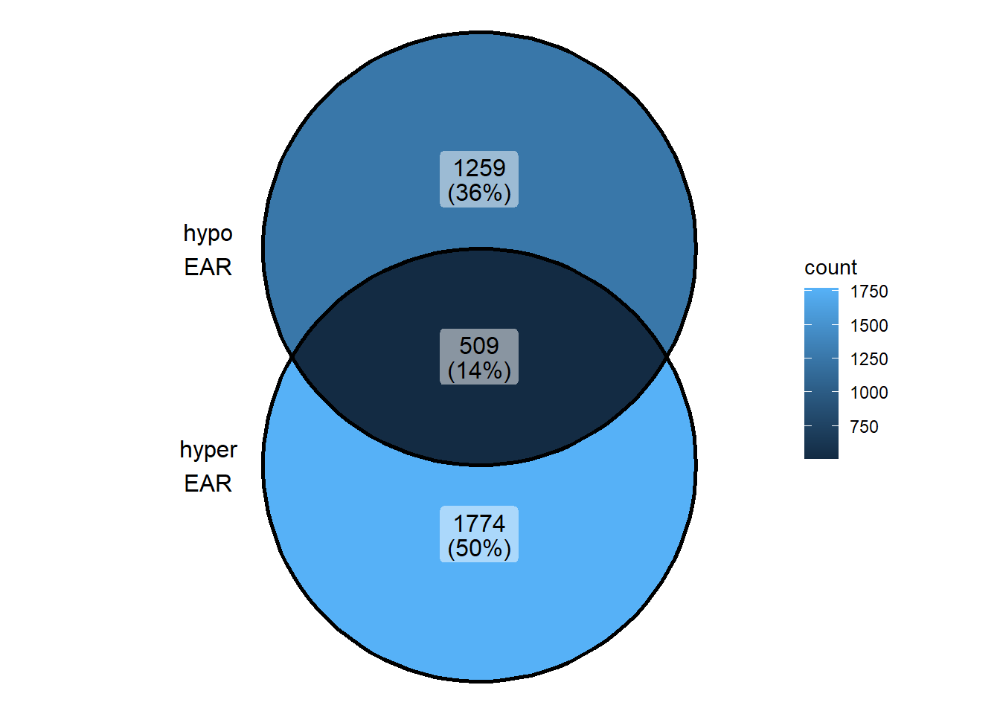
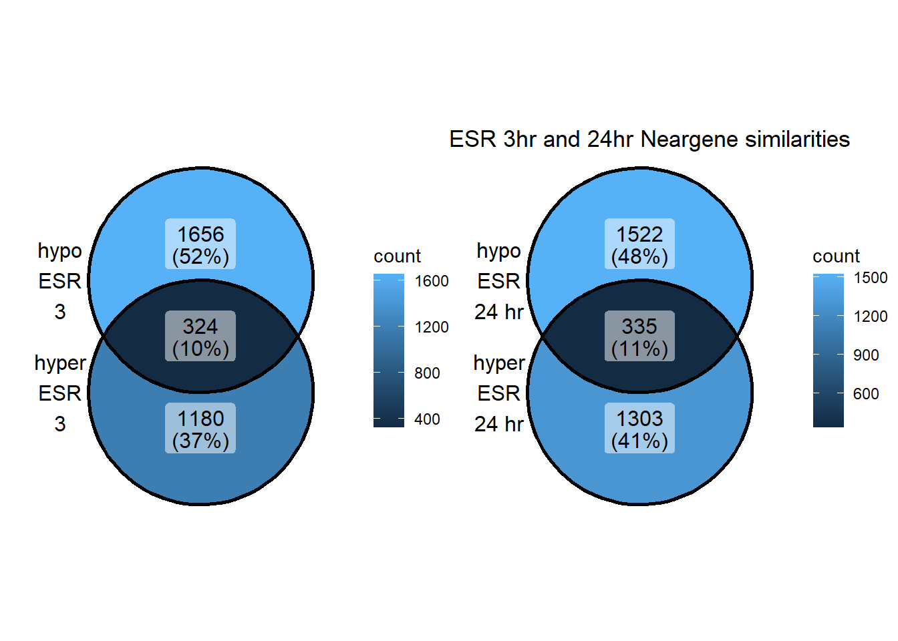
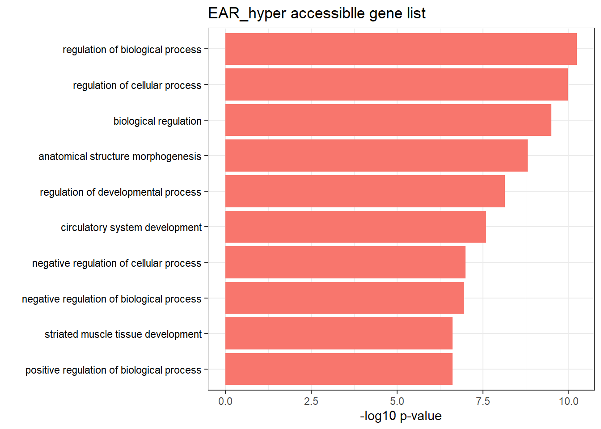
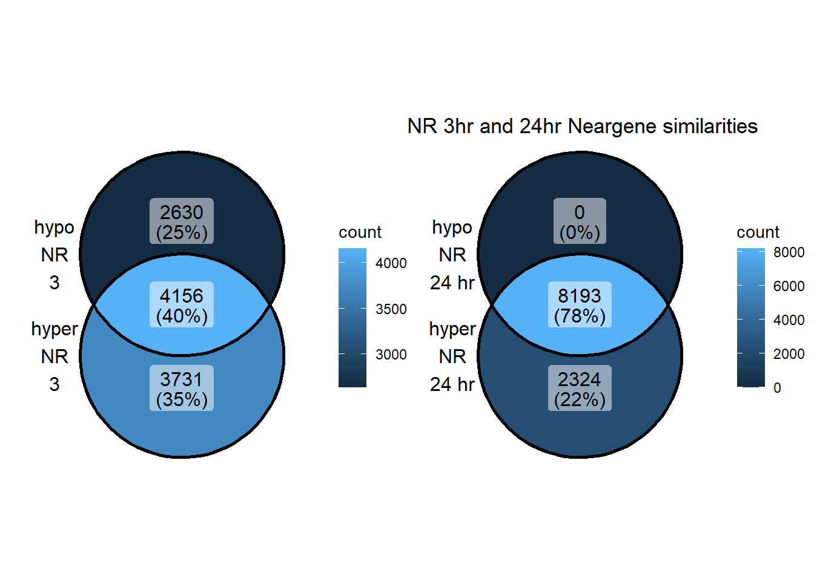

GO and KEGG pathway analysis
ERM
2024-08-05
Last updated: 2024-08-05
Checks: 7 0
Knit directory: ATAC_learning/
This reproducible R Markdown analysis was created with workflowr (version 1.7.1). The Checks tab describes the reproducibility checks that were applied when the results were created. The Past versions tab lists the development history.
Great! Since the R Markdown file has been committed to the Git repository, you know the exact version of the code that produced these results.
Great job! The global environment was empty. Objects defined in the global environment can affect the analysis in your R Markdown file in unknown ways. For reproduciblity it’s best to always run the code in an empty environment.
The command set.seed(20231016) was run prior to running
the code in the R Markdown file. Setting a seed ensures that any results
that rely on randomness, e.g. subsampling or permutations, are
reproducible.
Great job! Recording the operating system, R version, and package versions is critical for reproducibility.
Nice! There were no cached chunks for this analysis, so you can be confident that you successfully produced the results during this run.
Great job! Using relative paths to the files within your workflowr project makes it easier to run your code on other machines.
Great! You are using Git for version control. Tracking code development and connecting the code version to the results is critical for reproducibility.
The results in this page were generated with repository version 5193b51. See the Past versions tab to see a history of the changes made to the R Markdown and HTML files.
Note that you need to be careful to ensure that all relevant files for
the analysis have been committed to Git prior to generating the results
(you can use wflow_publish or
wflow_git_commit). workflowr only checks the R Markdown
file, but you know if there are other scripts or data files that it
depends on. Below is the status of the Git repository when the results
were generated:
Ignored files:
Ignored: .RData
Ignored: .Rhistory
Ignored: .Rproj.user/
Ignored: data/ACresp_SNP_table.csv
Ignored: data/ARR_SNP_table.csv
Ignored: data/All_merged_peaks.tsv
Ignored: data/CAD_gwas_dataframe.RDS
Ignored: data/CTX_SNP_table.csv
Ignored: data/Collapsed_expressed_NG_peak_table.csv
Ignored: data/DEG_toplist_sep_n45.RDS
Ignored: data/FRiP_first_run.txt
Ignored: data/Frip_1_reads.csv
Ignored: data/Frip_2_reads.csv
Ignored: data/Frip_3_reads.csv
Ignored: data/Frip_4_reads.csv
Ignored: data/Frip_5_reads.csv
Ignored: data/Frip_6_reads.csv
Ignored: data/GO_KEGG_analysis/
Ignored: data/HF_SNP_table.csv
Ignored: data/Ind1_75DA24h_dedup_peaks.csv
Ignored: data/Ind1_TSS_peaks.RDS
Ignored: data/Ind1_firstfragment_files.txt
Ignored: data/Ind1_fragment_files.txt
Ignored: data/Ind1_peaks_list.RDS
Ignored: data/Ind1_summary.txt
Ignored: data/Ind2_TSS_peaks.RDS
Ignored: data/Ind2_fragment_files.txt
Ignored: data/Ind2_peaks_list.RDS
Ignored: data/Ind2_summary.txt
Ignored: data/Ind3_TSS_peaks.RDS
Ignored: data/Ind3_fragment_files.txt
Ignored: data/Ind3_peaks_list.RDS
Ignored: data/Ind3_summary.txt
Ignored: data/Ind4_79B24h_dedup_peaks.csv
Ignored: data/Ind4_TSS_peaks.RDS
Ignored: data/Ind4_V24h_fraglength.txt
Ignored: data/Ind4_fragment_files.txt
Ignored: data/Ind4_fragment_filesN.txt
Ignored: data/Ind4_peaks_list.RDS
Ignored: data/Ind4_summary.txt
Ignored: data/Ind5_TSS_peaks.RDS
Ignored: data/Ind5_fragment_files.txt
Ignored: data/Ind5_fragment_filesN.txt
Ignored: data/Ind5_peaks_list.RDS
Ignored: data/Ind5_summary.txt
Ignored: data/Ind6_TSS_peaks.RDS
Ignored: data/Ind6_fragment_files.txt
Ignored: data/Ind6_peaks_list.RDS
Ignored: data/Ind6_summary.txt
Ignored: data/Knowles_4.RDS
Ignored: data/Knowles_5.RDS
Ignored: data/Knowles_6.RDS
Ignored: data/MI_gwas.RDS
Ignored: data/SNP_gene_cat_list.tsv
Ignored: data/SNP_supp_schneider.RDS
Ignored: data/TE_info/
Ignored: data/all_TSSE_scores.RDS
Ignored: data/aln_run1_results.txt
Ignored: data/anno_ind1_DA24h.RDS
Ignored: data/anno_ind4_V24h.RDS
Ignored: data/background_n45_he_peaks.RDS
Ignored: data/cardiac_muscle_FRIP.csv
Ignored: data/cardiomyocyte_FRIP.csv
Ignored: data/col_ng_peak.csv
Ignored: data/cormotif_full_4_run.RDS
Ignored: data/cormotif_full_4_run_he.RDS
Ignored: data/cormotif_full_6_run.RDS
Ignored: data/cormotif_full_6_run_he.RDS
Ignored: data/cormotif_probability_45_list.csv
Ignored: data/cormotif_probability_45_list_he.csv
Ignored: data/cormotif_probability_all_6_list.csv
Ignored: data/cormotif_probability_all_6_list_he.csv
Ignored: data/embryo_heart_FRIP.csv
Ignored: data/enhancer_list_ENCFF126UHK.bed
Ignored: data/enhancerdata/
Ignored: data/filt_Peaks_efit2.RDS
Ignored: data/filt_Peaks_efit2_bl.RDS
Ignored: data/filt_Peaks_efit2_n45.RDS
Ignored: data/first_Peaksummarycounts.csv
Ignored: data/first_run_frag_counts.txt
Ignored: data/full_bedfiles/
Ignored: data/gene_ref.csv
Ignored: data/gwas_1_dataframe.RDS
Ignored: data/gwas_2_dataframe.RDS
Ignored: data/gwas_3_dataframe.RDS
Ignored: data/gwas_4_dataframe.RDS
Ignored: data/gwas_5_dataframe.RDS
Ignored: data/high_conf_peak_counts.csv
Ignored: data/high_conf_peak_counts.txt
Ignored: data/high_conf_peaks_bl_counts.txt
Ignored: data/high_conf_peaks_counts.txt
Ignored: data/hits_files/
Ignored: data/hyper_files/
Ignored: data/hypo_files/
Ignored: data/ind1_DA24hpeaks.RDS
Ignored: data/ind1_TSSE.RDS
Ignored: data/ind2_TSSE.RDS
Ignored: data/ind3_TSSE.RDS
Ignored: data/ind4_TSSE.RDS
Ignored: data/ind4_V24hpeaks.RDS
Ignored: data/ind5_TSSE.RDS
Ignored: data/ind6_TSSE.RDS
Ignored: data/initial_complete_stats_run1.txt
Ignored: data/left_ventricle_FRIP.csv
Ignored: data/median_24_lfc.RDS
Ignored: data/median_3_lfc.RDS
Ignored: data/mergedPeads.gff
Ignored: data/mergedPeaks.gff
Ignored: data/motif_list_full
Ignored: data/motif_list_n45
Ignored: data/motif_list_n45.RDS
Ignored: data/multiqc_fastqc_run1.txt
Ignored: data/multiqc_fastqc_run2.txt
Ignored: data/multiqc_genestat_run1.txt
Ignored: data/multiqc_genestat_run2.txt
Ignored: data/my_hc_filt_counts.RDS
Ignored: data/my_hc_filt_counts_n45.RDS
Ignored: data/n45_bedfiles/
Ignored: data/n45_files
Ignored: data/other_papers/
Ignored: data/peakAnnoList_1.RDS
Ignored: data/peakAnnoList_2.RDS
Ignored: data/peakAnnoList_24_full.RDS
Ignored: data/peakAnnoList_24_n45.RDS
Ignored: data/peakAnnoList_3.RDS
Ignored: data/peakAnnoList_3_full.RDS
Ignored: data/peakAnnoList_3_n45.RDS
Ignored: data/peakAnnoList_4.RDS
Ignored: data/peakAnnoList_5.RDS
Ignored: data/peakAnnoList_6.RDS
Ignored: data/peakAnnoList_full_motif.RDS
Ignored: data/peakAnnoList_n45_motif.RDS
Ignored: data/siglist_full.RDS
Ignored: data/siglist_n45.RDS
Ignored: data/test.list.RDS
Ignored: data/testnames.txt
Ignored: data/toplist_6.RDS
Ignored: data/toplist_full.RDS
Ignored: data/toplist_full_DAR_6.RDS
Ignored: data/toplist_n45.RDS
Ignored: data/trimmed_seq_length.csv
Ignored: data/unclassified_full_set_peaks.RDS
Ignored: data/unclassified_n45_set_peaks.RDS
Ignored: data/xstreme/
Ignored: trimmed_Ind1_75DA24h_S7.nodup.splited.bam/
Untracked files:
Untracked: EAR_2_plot.pdf
Untracked: ESR_1_plot.pdf
Untracked: Firstcorr plotATAC.pdf
Untracked: IND1_2_3_6_corrplot.pdf
Untracked: LR_3_plot.pdf
Untracked: NR_1_plot.pdf
Untracked: analysis/GO_KEGG_analysis_old.Rmd
Untracked: analysis/ReHeat_analysis.Rmd
Untracked: analysis/my_hc_filt_counts.csv
Untracked: analysis/nucleosome_explore.Rmd
Untracked: code/IGV_snapshot_code.R
Untracked: code/LongDARlist.R
Untracked: code/TSSE.R
Untracked: code/just_for_Fun.R
Untracked: code/toplist_assembly.R
Untracked: lcpm_filtered_corplot.pdf
Untracked: log2cpmfragcount.pdf
Untracked: output/cormotif_probability_45_list.csv
Untracked: output/cormotif_probability_all_6_list.csv
Untracked: splited/
Untracked: trimmed_Ind1_75DA24h_S7.nodup.fragment.size.distribution.pdf
Untracked: trimmed_Ind1_75DA3h_S1.nodup.fragment.size.distribution.pdf
Unstaged changes:
Modified: analysis/TE_analysis.Rmd
Modified: analysis/TSS_ATAC_MRC_DAR_FC_RNA.Rmd
Note that any generated files, e.g. HTML, png, CSS, etc., are not included in this status report because it is ok for generated content to have uncommitted changes.
These are the previous versions of the repository in which changes were
made to the R Markdown (analysis/GO_KEGG_analysis.Rmd) and
HTML (docs/GO_KEGG_analysis.html) files. If you’ve
configured a remote Git repository (see ?wflow_git_remote),
click on the hyperlinks in the table below to view the files as they
were in that past version.
| File | Version | Author | Date | Message |
|---|---|---|---|---|
| Rmd | 5193b51 | reneeisnowhere | 2024-08-05 | updates to barcharts |
| html | 1933f92 | reneeisnowhere | 2024-08-02 | Build site. |
| Rmd | 50cc96f | reneeisnowhere | 2024-08-02 | updates using new guidelines |
| Rmd | 5d54017 | reneeisnowhere | 2024-06-12 | adding commit |
| html | bd33175 | reneeisnowhere | 2024-06-07 | Build site. |
| Rmd | b5e8a1e | reneeisnowhere | 2024-06-07 | updates and new analysis |
| html | 021ca5f | reneeisnowhere | 2024-06-07 | Build site. |
| Rmd | 95e0415 | reneeisnowhere | 2024-06-07 | updates, i think |
| html | eea0976 | reneeisnowhere | 2024-06-03 | Build site. |
| Rmd | 0672654 | reneeisnowhere | 2024-06-03 | updates to gene lists |
| html | 897af23 | reneeisnowhere | 2024-05-28 | Build site. |
| Rmd | 5c6ef83 | reneeisnowhere | 2024-05-28 | updates to KEGG/GO 20kb lists |
| html | d1a3829 | reneeisnowhere | 2024-05-17 | Build site. |
| Rmd | 9fb4f9a | reneeisnowhere | 2024-05-17 | adding in updates from Neargenes and enhncers |
| html | 2d991d7 | reneeisnowhere | 2024-05-03 | Build site. |
| Rmd | f57f2ee | reneeisnowhere | 2024-05-03 | first update |
library(tidyverse)
library(kableExtra)
library(broom)
library(RColorBrewer)
library(gprofiler2)
library(ChIPseeker)
library("TxDb.Hsapiens.UCSC.hg38.knownGene")
library("org.Hs.eg.db")
library(rtracklayer)
library(edgeR)
library(ggfortify)
library(limma)
library(readr)
library(BiocGenerics)
library(gridExtra)
library(VennDiagram)
library(scales)
library(ggVennDiagram)
library(BiocParallel)
library(ggpubr)
library(biomaRt)data loading
peakAnnoList_n45_motif <- readRDS("data/peakAnnoList_n45_motif.RDS")
# list2env(peakAnnoList_n45_motif, envir = .GlobalEnv)
fills <- c("#C77CFF","#F8766D","#7CAE00", "#00BFC4" )
EAR_df <- as.data.frame(peakAnnoList_n45_motif$EAR_n45_gr)
ESR_df <- as.data.frame(peakAnnoList_n45_motif$ESR_n45_gr)
LR_df <- as.data.frame(peakAnnoList_n45_motif$LR_n45_gr)
NR_df <- as.data.frame(peakAnnoList_n45_motif$NR_n45_gr)
toplist_ATAC <- readRDS("data/toplist_n45.RDS")
DOX24h_peaks_hypo_list <- toplist_ATAC %>%
dplyr::filter(trt=="DOX" & time=="24 hours" & logFC<0) %>%
dplyr::select(trt:logFC)
DOX24h_peaks_hyper_list <- toplist_ATAC %>%
dplyr::filter(trt=="DOX" & time=="24 hours" & logFC>0) %>%
dplyr::select(trt:logFC)
DOX3h_peaks_hypo_list <- toplist_ATAC %>%
dplyr::filter(trt=="DOX" & time=="3 hours" & logFC<0) %>%
dplyr::select(trt:logFC)
DOX3h_peaks_hyper_list <- toplist_ATAC %>%
dplyr::filter(trt=="DOX" & time=="3 hours" & logFC>0) %>%
dplyr::select(trt:logFC)
# exp_neargene_table <- read_delim("data/n45_bedfiles/exp_neargene_table.tsv",
# delim = "\t", escape_double = FALSE,
# trim_ws = TRUE)
background_genes <- read.csv("data/other_papers/backgroundRNAlist.csv", row.names = 1)
TSS_NG_data <- read_delim("data/n45_bedfiles/TSS_NG_data.tsv",
delim = "\t", escape_double = FALSE,
trim_ws = TRUE)
Collapsed_peaks <- read_delim("data/n45_bedfiles/TSS_NG_data_collapsed_peaks.tsv",
delim = "\t",
escape_double = FALSE,
trim_ws = TRUE)
EAR_NG_3hhyper <- TSS_NG_data %>%
dplyr::filter(peakid %in% EAR_df$id) %>%
dplyr::filter(peakid %in% DOX3h_peaks_hyper_list$peak) %>%
dplyr::filter(dist_to_NG<20000 & dist_to_NG>-20000) %>%
dplyr::select(entrezgene_id) %>%
distinct()
ESR_NG_3hhyper <- TSS_NG_data %>%
dplyr::filter(peakid %in% ESR_df$id) %>%
dplyr::filter(peakid %in% DOX3h_peaks_hyper_list$peak) %>%
dplyr::filter(dist_to_NG<20000 & dist_to_NG>-20000) %>%
dplyr::select(entrezgene_id) %>%
distinct()
LR_NG_3hhyper <- TSS_NG_data %>%
dplyr::filter(peakid %in% LR_df$id) %>%
dplyr::filter(peakid %in% DOX3h_peaks_hyper_list$peak) %>%
dplyr::filter(dist_to_NG<20000 & dist_to_NG>-20000) %>%
dplyr::select(entrezgene_id) %>%
distinct()
NR_NG_3hhyper <- TSS_NG_data %>%
dplyr::filter(peakid %in% NR_df$id) %>%
dplyr::filter(peakid %in% DOX3h_peaks_hyper_list$peak) %>%
dplyr::filter(dist_to_NG<20000 & dist_to_NG>-20000) %>%
dplyr::select(entrezgene_id) %>%
distinct()
EAR_NG_24hhyper <- TSS_NG_data %>%
dplyr::filter(peakid %in% EAR_df$id) %>%
dplyr::filter(peakid %in% DOX24h_peaks_hyper_list$peak) %>%
dplyr::filter(dist_to_NG<20000 & dist_to_NG>-20000) %>%
dplyr::select(entrezgene_id) %>%
distinct()
ESR_NG_24hhyper <- TSS_NG_data %>%
dplyr::filter(peakid %in% ESR_df$id) %>%
dplyr::filter(peakid %in% DOX24h_peaks_hyper_list$peak) %>%
dplyr::filter(dist_to_NG<20000 & dist_to_NG>-20000) %>%
dplyr::select(entrezgene_id) %>%
distinct()
LR_NG_24hhyper <- TSS_NG_data %>%
dplyr::filter(peakid %in% LR_df$id) %>%
dplyr::filter(peakid %in% DOX24h_peaks_hyper_list$peak) %>%
dplyr::filter(dist_to_NG<20000 & dist_to_NG>-20000) %>%
dplyr::select(entrezgene_id) %>%
distinct()
NR_NG_24hhyper <- TSS_NG_data %>%
dplyr::filter(peakid %in% NR_df$id) %>%
dplyr::filter(dist_to_NG<20000 & dist_to_NG>-20000) %>%
dplyr::select(entrezgene_id) %>%
distinct()
EAR_NG_3hhypo <- TSS_NG_data %>%
dplyr::filter(peakid %in% EAR_df$id) %>%
dplyr::filter(peakid %in% DOX3h_peaks_hypo_list$peak) %>%
dplyr::filter(dist_to_NG<20000 & dist_to_NG>-20000) %>%
dplyr::select(entrezgene_id) %>%
distinct()
ESR_NG_3hhypo <- TSS_NG_data %>%
dplyr::filter(peakid %in% ESR_df$id) %>%
dplyr::filter(peakid %in% DOX3h_peaks_hypo_list$peak) %>%
dplyr::filter(dist_to_NG<20000 & dist_to_NG>-20000) %>%
dplyr::select(entrezgene_id) %>%
distinct()
LR_NG_3hhypo <- TSS_NG_data %>%
dplyr::filter(peakid %in% LR_df$id) %>%
dplyr::filter(peakid %in% DOX3h_peaks_hypo_list$peak) %>%
dplyr::filter(dist_to_NG<20000 & dist_to_NG>-20000) %>%
dplyr::select(entrezgene_id) %>%
distinct()
NR_NG_3hhypo <- TSS_NG_data %>%
dplyr::filter(peakid %in% NR_df$id) %>%
dplyr::filter(peakid %in% DOX3h_peaks_hypo_list$peak) %>%
dplyr::filter(dist_to_NG<20000 & dist_to_NG>-20000) %>%
dplyr::select(entrezgene_id) %>%
distinct()
EAR_NG_24hhypo <- TSS_NG_data %>%
dplyr::filter(peakid %in% EAR_df$id) %>%
dplyr::filter(peakid %in% DOX24h_peaks_hypo_list$peak) %>%
dplyr::filter(dist_to_NG<20000 & dist_to_NG>-20000) %>%
dplyr::select(entrezgene_id) %>%
distinct()
ESR_NG_24hhypo <- TSS_NG_data %>%
dplyr::filter(peakid %in% ESR_df$id) %>%
dplyr::filter(peakid %in% DOX24h_peaks_hypo_list$peak) %>%
dplyr::filter(dist_to_NG<20000 & dist_to_NG>-20000) %>%
dplyr::select(entrezgene_id) %>%
distinct()
LR_NG_24hhypo <- TSS_NG_data %>%
dplyr::filter(peakid %in% LR_df$id) %>%
dplyr::filter(peakid %in% DOX24h_peaks_hypo_list$peak) %>%
dplyr::filter(dist_to_NG<20000 & dist_to_NG>-20000) %>%
dplyr::select(entrezgene_id) %>%
distinct()
NR_NG_24hhypo <- TSS_NG_data %>%
dplyr::filter(peakid %in% NR_df$id) %>%
dplyr::filter(peakid %in% DOX24h_peaks_hypo_list$peak) %>%
dplyr::filter(dist_to_NG<20000 & dist_to_NG>-20000) %>%
dplyr::select(entrezgene_id) %>%
distinct()Introduction
This is an updated page of GO/KEGG analysis based on previous
analysis (link pending). To get this analysis, I took the peaks from my
data, assigned them to the nearest RNA expressed gene, then I used my
Doxorubicin ATAC peak log fold change(LFC) data at 3 hours and 24 hours
to create lists of hyper-accessible peaks (LFC >0) and
hypo-accessible peaks (LFC<0) for enrichment testing. Additionally,
most peaks fall within multiple response clusters (MRCs) using the
Cormotif package. This created lists of EAR-hyper, EAR-hypo,
ESR-hyper,ESR-hypo, LR-hyper, LR-hypo, and NR-hyper, NR-hypo peaks at 3
and 24 hours (a total of 16 groups). Enrichment testing was done using
the neargenes assigned to each of the MRC hypo and hyper clusters, using
the full list of RNA expressed genes (14,084) as the background. This
page is broken up into the following sections:
1. Hyper and Hypo MRC response for 3 and 24 hours 2. Hyper and Hypo MRC
response within 20kb of neargene 3 and 24 hours 3. Bargraphs of top
KEGG/GO terms
EAR response genes
Hyper/hypo-3hr
EAR3h_hyper_nomtable <- readRDS("data/GO_KEGG_analysis/final_analysis/EAR_3h_hyper_resgenes.RDS")
EAR3h_hypo_nomtable <- readRDS("data/GO_KEGG_analysis/final_analysis/EAR_3h_hypo_resgenes.RDS")
# EAR_3h_hyper_resgenes <- gost(query = EAR_NG_3hhyper$entrezgene_id,
# organism = "hsapiens",
# significant = FALSE,
# ordered_query = FALSE,
# domain_scope = "custom",
# measure_underrepresentation = FALSE,
# evcodes = FALSE,
# user_threshold = 0.05,
# correction_method = c("fdr"),
# custom_bg = background_genes$ENTREZID,
# sources=c("GO:BP","KEGG"))
# saveRDS(NR_EAh_hyper_resgenes,"data/GO_KEGG_analysis/final_analysis/EAR_3h_hyper_resgenes.RDS")
EAR3h_hyper_nomtable <- EAR3h_hyper_nomtable$result %>%
dplyr::select(c(source, term_id,
term_name,intersection_size,
term_size, p_value))# %>%
EAR3h_hypo_nomtable <- EAR3h_hypo_nomtable$result %>%
dplyr::select(c(source, term_id,
term_name,intersection_size,
term_size, p_value))
EAR3h_hyper_nomtable %>%
filter(source=="GO:BP", p_value < 0.05) %>%
mutate_at(.vars = 6, .funs = scientific_format()) %>%
kable(.,caption = " Significant (p<0.05) GO:BP terms found in EAR-hyper accesible neargenes" ) %>%
kable_paper("striped", full_width = FALSE) %>%
kable_styling(
full_width = FALSE,
position = "left",
bootstrap_options = c("striped", "hover")
) %>%
scroll_box(width = "100%", height = "400px")| source | term_id | term_name | intersection_size | term_size | p_value |
|---|---|---|---|---|---|
| NA | NA | NA | NA | NA | NA |
| :—— | :——- | :——— | —————–: | ———: | :——- |
EAR3h_hyper_nomtable %>%
filter(source=="KEGG", p_value < 0.05) %>%
mutate_at(.vars = 6, .funs = scientific_format()) %>%
kable(., caption = "Significant (p<0.05) KEGG terms found in EAR-hyper accesible neargenes") %>%
kable_paper("striped", full_width = FALSE) %>%
kable_styling(
full_width = FALSE,
position = "left",
bootstrap_options = c("striped", "hover")
) %>%
scroll_box(width = "100%", height = "400px")| source | term_id | term_name | intersection_size | term_size | p_value |
|---|---|---|---|---|---|
| NA | NA | NA | NA | NA | NA |
| :—— | :——- | :——— | —————–: | ———: | :——- |
EAR3h_hypo_nomtable %>%
filter(source=="GO:BP", p_value < 0.05) %>%
mutate_at(.vars = 6, .funs = scientific_format()) %>%
kable(.,caption = " Significant (p<0.05) GO:BP terms found in EAR-hypo accesible neargenes" ) %>%
kable_paper("striped", full_width = FALSE) %>%
kable_styling(
full_width = FALSE,
position = "left",
bootstrap_options = c("striped", "hover")
) %>%
scroll_box(width = "100%", height = "400px")| source | term_id | term_name | intersection_size | term_size | p_value |
|---|---|---|---|---|---|
| GO:BP | GO:0072359 | circulatory system development | 92 | 896 | 9.26e-04 |
| GO:BP | GO:0009653 | anatomical structure morphogenesis | 159 | 1951 | 4.40e-02 |
| GO:BP | GO:0007507 | heart development | 54 | 515 | 4.49e-02 |
| GO:BP | GO:0050896 | response to stimulus | 397 | 5732 | 4.49e-02 |
| GO:BP | GO:0048513 | animal organ development | 169 | 2130 | 4.49e-02 |
| GO:BP | GO:0048646 | anatomical structure formation involved in morphogenesis | 81 | 876 | 4.73e-02 |
EAR3h_hypo_nomtable %>%
filter(source=="KEGG", p_value < 0.05) %>%
mutate_at(.vars = 6, .funs = scientific_format()) %>%
kable(., caption = "Significant (p<0.05) KEGG terms found in EAR-hypo accesible neargenes") %>%
kable_paper("striped", full_width = FALSE) %>%
kable_styling(
full_width = FALSE,
position = "left",
bootstrap_options = c("striped", "hover")
) %>%
scroll_box(width = "100%", height = "400px")| source | term_id | term_name | intersection_size | term_size | p_value |
|---|---|---|---|---|---|
| NA | NA | NA | NA | NA | NA |
| :—— | :——- | :——— | —————–: | ———: | :——- |
Hyper/hypo-24hr
EAR24h_hyper_nomtable <- readRDS("data/GO_KEGG_analysis/final_analysis/EAR_24h_hyper_resgenes.RDS")
EAR24h_hypo_nomtable <- readRDS("data/GO_KEGG_analysis/final_analysis/EAR_24h_hypo_resgenes.RDS")
EAR24h_hyper_nomtable <- EAR24h_hyper_nomtable$result %>%
dplyr::select(c(source, term_id,
term_name,intersection_size,
term_size, p_value))# %>%
EAR24h_hypo_nomtable <- EAR24h_hypo_nomtable$result %>%
dplyr::select(c(source, term_id,
term_name,intersection_size,
term_size, p_value))
EAR24h_hyper_nomtable %>%
filter(source=="GO:BP", p_value < 0.05) %>%
mutate_at(.vars = 6, .funs = scientific_format()) %>%
kable(.,caption = " Significant (p<0.05) GO:BP terms found in 24 hr EAR-hyper accesible neargenes" ) %>%
kable_paper("striped", full_width = FALSE) %>%
kable_styling(
full_width = FALSE,
position = "left",
bootstrap_options = c("striped", "hover")
) %>%
scroll_box(width = "100%", height = "400px")| source | term_id | term_name | intersection_size | term_size | p_value |
|---|---|---|---|---|---|
| NA | NA | NA | NA | NA | NA |
| :—— | :——- | :——— | —————–: | ———: | :——- |
EAR24h_hyper_nomtable %>%
filter(source=="KEGG", p_value < 0.05) %>%
mutate_at(.vars = 6, .funs = scientific_format()) %>%
kable(., caption = "Significant (p<0.05) KEGG terms found in 24 hr EAR-hyper accesible neargenes") %>%
kable_paper("striped", full_width = FALSE) %>%
kable_styling(
full_width = FALSE,
position = "left",
bootstrap_options = c("striped", "hover")
) %>%
scroll_box(width = "100%", height = "400px")| source | term_id | term_name | intersection_size | term_size | p_value |
|---|---|---|---|---|---|
| NA | NA | NA | NA | NA | NA |
| :—— | :——- | :——— | —————–: | ———: | :——- |
EAR24h_hypo_nomtable %>%
filter(source=="GO:BP", p_value < 0.05) %>%
mutate_at(.vars = 6, .funs = scientific_format()) %>%
kable(.,caption = " Significant (p<0.05) GO:BP terms found in 24 hr EAR-hypo accesible neargenes" ) %>%
kable_paper("striped", full_width = FALSE) %>%
kable_styling(
full_width = FALSE,
position = "left",
bootstrap_options = c("striped", "hover")
) %>%
scroll_box(width = "100%", height = "400px")| source | term_id | term_name | intersection_size | term_size | p_value |
|---|---|---|---|---|---|
| NA | NA | NA | NA | NA | NA |
| :—— | :——- | :——— | —————–: | ———: | :——- |
EAR24h_hypo_nomtable %>%
filter(source=="KEGG", p_value < 0.05) %>%
mutate_at(.vars = 6, .funs = scientific_format()) %>%
kable(., caption = "Significant (p<0.05) KEGG terms found in 24 hr EAR-hypo accesible neargenes") %>%
kable_paper("striped", full_width = FALSE) %>%
kable_styling(
full_width = FALSE,
position = "left",
bootstrap_options = c("striped", "hover")
) %>%
scroll_box(width = "100%", height = "400px")| source | term_id | term_name | intersection_size | term_size | p_value |
|---|---|---|---|---|---|
| NA | NA | NA | NA | NA | NA |
| :—— | :——- | :——— | —————–: | ———: | :——- |
ESR response genes
Hyper/hypo-3hr
ESR3h_hyper_nomtable <- readRDS("data/GO_KEGG_analysis/final_analysis/ESR_3h_hyper_resgenes.RDS")
ESR3h_hypo_nomtable <- readRDS("data/GO_KEGG_analysis/final_analysis/ESR_3h_hypo_resgenes.RDS")
ESR3h_hyper_nomtable <- ESR3h_hyper_nomtable$result %>%
dplyr::select(c(source, term_id,
term_name,intersection_size,
term_size, p_value))# %>%
ESR3h_hypo_nomtable <- ESR3h_hypo_nomtable$result %>%
dplyr::select(c(source, term_id,
term_name,intersection_size,
term_size, p_value))
ESR3h_hyper_nomtable %>%
filter(source=="GO:BP", p_value < 0.05) %>%
mutate_at(.vars = 6, .funs = scientific_format()) %>%
kable(.,caption = " Significant (p<0.05) GO:BP terms found in ESR-hyper accesible neargenes" ) %>%
kable_paper("striped", full_width = FALSE) %>%
kable_styling(
full_width = FALSE,
position = "left",
bootstrap_options = c("striped", "hover")
) %>%
scroll_box(width = "100%", height = "400px")| source | term_id | term_name | intersection_size | term_size | p_value |
|---|---|---|---|---|---|
| GO:BP | GO:0051716 | cellular response to stimulus | 627 | 4933 | 2.28e-03 |
| GO:BP | GO:0048522 | positive regulation of cellular process | 543 | 4198 | 2.28e-03 |
| GO:BP | GO:0007165 | signal transduction | 503 | 3846 | 2.28e-03 |
| GO:BP | GO:0023051 | regulation of signaling | 352 | 2597 | 2.40e-03 |
| GO:BP | GO:0023052 | signaling | 538 | 4180 | 2.40e-03 |
| GO:BP | GO:0009888 | tissue development | 210 | 1425 | 2.40e-03 |
| GO:BP | GO:0048856 | anatomical structure development | 532 | 4130 | 2.40e-03 |
| GO:BP | GO:0048518 | positive regulation of biological process | 580 | 4561 | 2.40e-03 |
| GO:BP | GO:0007154 | cell communication | 545 | 4248 | 2.40e-03 |
| GO:BP | GO:0050896 | response to stimulus | 713 | 5732 | 2.40e-03 |
| GO:BP | GO:0009966 | regulation of signal transduction | 317 | 2307 | 2.44e-03 |
| GO:BP | GO:0048568 | embryonic organ development | 62 | 317 | 2.68e-03 |
| GO:BP | GO:2000026 | regulation of multicellular organismal development | 156 | 1011 | 2.69e-03 |
| GO:BP | GO:0010646 | regulation of cell communication | 351 | 2601 | 2.70e-03 |
| GO:BP | GO:0009893 | positive regulation of metabolic process | 372 | 2780 | 2.70e-03 |
| GO:BP | GO:0048598 | embryonic morphogenesis | 79 | 440 | 3.18e-03 |
| GO:BP | GO:0008150 | biological_process | 1371 | 12051 | 4.28e-03 |
| GO:BP | GO:0010604 | positive regulation of macromolecule metabolic process | 343 | 2555 | 4.28e-03 |
| GO:BP | GO:0009790 | embryo development | 135 | 864 | 4.28e-03 |
| GO:BP | GO:0051173 | positive regulation of nitrogen compound metabolic process | 314 | 2311 | 4.28e-03 |
| GO:BP | GO:0009891 | positive regulation of biosynthetic process | 273 | 1974 | 4.55e-03 |
| GO:BP | GO:0043009 | chordate embryonic development | 90 | 529 | 4.60e-03 |
| GO:BP | GO:0009653 | anatomical structure morphogenesis | 270 | 1951 | 4.60e-03 |
| GO:BP | GO:0050794 | regulation of cellular process | 916 | 7651 | 4.60e-03 |
| GO:BP | GO:0031325 | positive regulation of cellular metabolic process | 332 | 2474 | 4.66e-03 |
| GO:BP | GO:0009792 | embryo development ending in birth or egg hatching | 92 | 545 | 4.66e-03 |
| GO:BP | GO:0032501 | multicellular organismal process | 604 | 4830 | 4.66e-03 |
| GO:BP | GO:0032502 | developmental process | 563 | 4475 | 5.37e-03 |
| GO:BP | GO:0051254 | positive regulation of RNA metabolic process | 205 | 1430 | 5.37e-03 |
| GO:BP | GO:0045893 | positive regulation of DNA-templated transcription | 189 | 1301 | 5.37e-03 |
| GO:BP | GO:1902680 | positive regulation of RNA biosynthetic process | 189 | 1304 | 5.70e-03 |
| GO:BP | GO:0048583 | regulation of response to stimulus | 381 | 2902 | 5.70e-03 |
| GO:BP | GO:0042472 | inner ear morphogenesis | 19 | 62 | 5.70e-03 |
| GO:BP | GO:0031328 | positive regulation of cellular biosynthetic process | 269 | 1959 | 5.70e-03 |
| GO:BP | GO:0010557 | positive regulation of macromolecule biosynthetic process | 261 | 1900 | 6.64e-03 |
| GO:BP | GO:0048646 | anatomical structure formation involved in morphogenesis | 134 | 876 | 6.64e-03 |
| GO:BP | GO:0090100 | positive regulation of transmembrane receptor protein serine/threonine kinase signaling pathway | 24 | 91 | 6.64e-03 |
| GO:BP | GO:0022603 | regulation of anatomical structure morphogenesis | 105 | 653 | 6.64e-03 |
| GO:BP | GO:0060038 | cardiac muscle cell proliferation | 15 | 43 | 6.64e-03 |
| GO:BP | GO:0050793 | regulation of developmental process | 249 | 1801 | 6.64e-03 |
| GO:BP | GO:0009987 | cellular process | 1309 | 11450 | 6.67e-03 |
| GO:BP | GO:0060485 | mesenchyme development | 50 | 256 | 6.68e-03 |
| GO:BP | GO:0060429 | epithelium development | 128 | 836 | 8.55e-03 |
| GO:BP | GO:0042471 | ear morphogenesis | 21 | 76 | 8.55e-03 |
| GO:BP | GO:0055017 | cardiac muscle tissue growth | 19 | 65 | 8.55e-03 |
| GO:BP | GO:0010717 | regulation of epithelial to mesenchymal transition | 23 | 88 | 9.60e-03 |
| GO:BP | GO:0030154 | cell differentiation | 387 | 2987 | 1.09e-02 |
| GO:BP | GO:0007167 | enzyme-linked receptor protein signaling pathway | 116 | 749 | 1.09e-02 |
| GO:BP | GO:0110110 | positive regulation of animal organ morphogenesis | 11 | 27 | 1.09e-02 |
| GO:BP | GO:0060419 | heart growth | 20 | 72 | 1.09e-02 |
| GO:BP | GO:0048869 | cellular developmental process | 387 | 2988 | 1.10e-02 |
| GO:BP | GO:0071345 | cellular response to cytokine stimulus | 90 | 554 | 1.24e-02 |
| GO:BP | GO:0048562 | embryonic organ morphogenesis | 39 | 190 | 1.24e-02 |
| GO:BP | GO:0090287 | regulation of cellular response to growth factor stimulus | 50 | 265 | 1.31e-02 |
| GO:BP | GO:0035556 | intracellular signal transduction | 279 | 2079 | 1.33e-02 |
| GO:BP | GO:0048513 | animal organ development | 285 | 2130 | 1.34e-02 |
| GO:BP | GO:0090092 | regulation of transmembrane receptor protein serine/threonine kinase signaling pathway | 44 | 225 | 1.38e-02 |
| GO:BP | GO:0007166 | cell surface receptor signaling pathway | 257 | 1900 | 1.51e-02 |
| GO:BP | GO:1902531 | regulation of intracellular signal transduction | 193 | 1376 | 1.76e-02 |
| GO:BP | GO:0044344 | cellular response to fibroblast growth factor stimulus | 21 | 82 | 2.10e-02 |
| GO:BP | GO:0030855 | epithelial cell differentiation | 75 | 452 | 2.12e-02 |
| GO:BP | GO:0042221 | response to chemical | 319 | 2436 | 2.18e-02 |
| GO:BP | GO:0055023 | positive regulation of cardiac muscle tissue growth | 10 | 25 | 2.18e-02 |
| GO:BP | GO:0033002 | muscle cell proliferation | 33 | 157 | 2.18e-02 |
| GO:BP | GO:0008543 | fibroblast growth factor receptor signaling pathway | 17 | 60 | 2.18e-02 |
| GO:BP | GO:0065007 | biological regulation | 972 | 8275 | 2.20e-02 |
| GO:BP | GO:0061061 | muscle structure development | 89 | 559 | 2.20e-02 |
| GO:BP | GO:0048863 | stem cell differentiation | 39 | 198 | 2.41e-02 |
| GO:BP | GO:0055021 | regulation of cardiac muscle tissue growth | 14 | 45 | 2.56e-02 |
| GO:BP | GO:0007275 | multicellular organism development | 428 | 3383 | 2.56e-02 |
| GO:BP | GO:0045935 | positive regulation of nucleobase-containing compound metabolic process | 218 | 1597 | 2.65e-02 |
| GO:BP | GO:0045892 | negative regulation of DNA-templated transcription | 148 | 1027 | 2.74e-02 |
| GO:BP | GO:0050789 | regulation of biological process | 945 | 8037 | 2.74e-02 |
| GO:BP | GO:0003209 | cardiac atrium morphogenesis | 10 | 26 | 2.77e-02 |
| GO:BP | GO:1902679 | negative regulation of RNA biosynthetic process | 149 | 1036 | 2.78e-02 |
| GO:BP | GO:0141124 | intracellular signaling cassette | 194 | 1403 | 2.88e-02 |
| GO:BP | GO:0023057 | negative regulation of signaling | 158 | 1111 | 2.94e-02 |
| GO:BP | GO:0060043 | regulation of cardiac muscle cell proliferation | 11 | 31 | 2.94e-02 |
| GO:BP | GO:0000122 | negative regulation of transcription by RNA polymerase II | 113 | 752 | 2.94e-02 |
| GO:BP | GO:0034097 | response to cytokine | 96 | 621 | 3.05e-02 |
| GO:BP | GO:0048762 | mesenchymal cell differentiation | 40 | 209 | 3.13e-02 |
| GO:BP | GO:0071774 | response to fibroblast growth factor | 21 | 86 | 3.13e-02 |
| GO:BP | GO:0070848 | response to growth factor | 90 | 576 | 3.14e-02 |
| GO:BP | GO:0010954 | positive regulation of protein processing | 8 | 18 | 3.21e-02 |
| GO:BP | GO:0071363 | cellular response to growth factor stimulus | 87 | 554 | 3.24e-02 |
| GO:BP | GO:0001837 | epithelial to mesenchymal transition | 30 | 143 | 3.29e-02 |
| GO:BP | GO:0010648 | negative regulation of cell communication | 157 | 1109 | 3.35e-02 |
| GO:BP | GO:0071310 | cellular response to organic substance | 189 | 1370 | 3.35e-02 |
| GO:BP | GO:0070887 | cellular response to chemical stimulus | 247 | 1852 | 3.35e-02 |
| GO:BP | GO:0048584 | positive regulation of response to stimulus | 217 | 1601 | 3.35e-02 |
| GO:BP | GO:0002009 | morphogenesis of an epithelium | 65 | 391 | 3.54e-02 |
| GO:BP | GO:0045597 | positive regulation of cell differentiation | 96 | 626 | 3.54e-02 |
| GO:BP | GO:0051240 | positive regulation of multicellular organismal process | 157 | 1111 | 3.54e-02 |
| GO:BP | GO:0035265 | organ growth | 28 | 132 | 3.87e-02 |
| GO:BP | GO:0014855 | striated muscle cell proliferation | 16 | 59 | 3.94e-02 |
| GO:BP | GO:0010033 | response to organic substance | 244 | 1835 | 4.06e-02 |
| GO:BP | GO:0060421 | positive regulation of heart growth | 10 | 28 | 4.25e-02 |
| GO:BP | GO:0030510 | regulation of BMP signaling pathway | 20 | 83 | 4.26e-02 |
| GO:BP | GO:1903319 | positive regulation of protein maturation | 8 | 19 | 4.26e-02 |
| GO:BP | GO:0042476 | odontogenesis | 20 | 83 | 4.26e-02 |
| GO:BP | GO:0090596 | sensory organ morphogenesis | 35 | 180 | 4.32e-02 |
| GO:BP | GO:0009887 | animal organ morphogenesis | 106 | 710 | 4.36e-02 |
| GO:BP | GO:0090103 | cochlea morphogenesis | 7 | 15 | 4.37e-02 |
| GO:BP | GO:0006351 | DNA-templated transcription | 343 | 2683 | 4.44e-02 |
| GO:BP | GO:0010718 | positive regulation of epithelial to mesenchymal transition | 14 | 49 | 4.49e-02 |
| GO:BP | GO:0071495 | cellular response to endogenous stimulus | 153 | 1088 | 4.57e-02 |
| GO:BP | GO:0051094 | positive regulation of developmental process | 138 | 967 | 4.60e-02 |
| GO:BP | GO:0006355 | regulation of DNA-templated transcription | 330 | 2576 | 4.79e-02 |
| GO:BP | GO:1904117 | cellular response to vasopressin | 4 | 5 | 4.79e-02 |
| GO:BP | GO:0072282 | metanephric nephron tubule morphogenesis | 4 | 5 | 4.79e-02 |
| GO:BP | GO:0042475 | odontogenesis of dentin-containing tooth | 15 | 55 | 4.79e-02 |
| GO:BP | GO:1904116 | response to vasopressin | 4 | 5 | 4.79e-02 |
| GO:BP | GO:0080090 | regulation of primary metabolic process | 524 | 4269 | 4.79e-02 |
ESR3h_hyper_nomtable %>%
filter(source=="KEGG", p_value < 0.05) %>%
mutate_at(.vars = 6, .funs = scientific_format()) %>%
kable(., caption = "Significant (p<0.05) KEGG terms found in ESR-hyper accesible neargenes") %>%
kable_paper("striped", full_width = FALSE) %>%
kable_styling(
full_width = FALSE,
position = "left",
bootstrap_options = c("striped", "hover")
) %>%
scroll_box(width = "100%", height = "400px")| source | term_id | term_name | intersection_size | term_size | p_value |
|---|---|---|---|---|---|
| NA | NA | NA | NA | NA | NA |
| :—— | :——- | :——— | —————–: | ———: | :——- |
ESR3h_hypo_nomtable %>%
filter(source=="GO:BP", p_value < 0.05) %>%
mutate_at(.vars = 6, .funs = scientific_format()) %>%
kable(.,caption = " Significant (p<0.05) GO:BP terms found in ESR-hypo accesible neargenes" ) %>%
kable_paper("striped", full_width = FALSE) %>%
kable_styling(
full_width = FALSE,
position = "left",
bootstrap_options = c("striped", "hover")
) %>%
scroll_box(width = "100%", height = "400px")| source | term_id | term_name | intersection_size | term_size | p_value |
|---|---|---|---|---|---|
| GO:BP | GO:0032501 | multicellular organismal process | 840 | 4830 | 4.23e-09 |
| GO:BP | GO:0048646 | anatomical structure formation involved in morphogenesis | 201 | 876 | 1.08e-08 |
| GO:BP | GO:0048856 | anatomical structure development | 717 | 4130 | 5.65e-07 |
| GO:BP | GO:0009653 | anatomical structure morphogenesis | 373 | 1951 | 1.16e-06 |
| GO:BP | GO:0007275 | multicellular organism development | 598 | 3383 | 1.57e-06 |
| GO:BP | GO:0048869 | cellular developmental process | 534 | 2988 | 2.79e-06 |
| GO:BP | GO:0030154 | cell differentiation | 534 | 2987 | 2.79e-06 |
| GO:BP | GO:0023052 | signaling | 715 | 4180 | 4.49e-06 |
| GO:BP | GO:0007154 | cell communication | 723 | 4248 | 7.14e-06 |
| GO:BP | GO:0050896 | response to stimulus | 944 | 5732 | 7.14e-06 |
| GO:BP | GO:0048731 | system development | 515 | 2903 | 1.22e-05 |
| GO:BP | GO:0007165 | signal transduction | 659 | 3846 | 1.52e-05 |
| GO:BP | GO:0051239 | regulation of multicellular organismal process | 379 | 2052 | 1.89e-05 |
| GO:BP | GO:0032502 | developmental process | 750 | 4475 | 4.00e-05 |
| GO:BP | GO:0051716 | cellular response to stimulus | 812 | 4933 | 2.01e-04 |
| GO:BP | GO:0006937 | regulation of muscle contraction | 41 | 129 | 2.32e-04 |
| GO:BP | GO:0009888 | tissue development | 269 | 1425 | 3.66e-04 |
| GO:BP | GO:0048468 | cell development | 360 | 1999 | 5.13e-04 |
| GO:BP | GO:0086036 | regulation of cardiac muscle cell membrane potential | 7 | 7 | 6.17e-04 |
| GO:BP | GO:0065008 | regulation of biological quality | 365 | 2039 | 7.06e-04 |
| GO:BP | GO:0044057 | regulation of system process | 92 | 399 | 9.16e-04 |
| GO:BP | GO:0048513 | animal organ development | 376 | 2130 | 1.78e-03 |
| GO:BP | GO:1903522 | regulation of blood circulation | 53 | 200 | 1.99e-03 |
| GO:BP | GO:0008285 | negative regulation of cell population proliferation | 110 | 508 | 1.99e-03 |
| GO:BP | GO:0030029 | actin filament-based process | 139 | 677 | 2.30e-03 |
| GO:BP | GO:0072359 | circulatory system development | 176 | 896 | 2.30e-03 |
| GO:BP | GO:0035295 | tube development | 163 | 827 | 3.81e-03 |
| GO:BP | GO:0045321 | leukocyte activation | 118 | 563 | 3.81e-03 |
| GO:BP | GO:0060047 | heart contraction | 52 | 200 | 3.81e-03 |
| GO:BP | GO:0022008 | neurogenesis | 245 | 1327 | 3.81e-03 |
| GO:BP | GO:0001775 | cell activation | 135 | 665 | 4.61e-03 |
| GO:BP | GO:0051240 | positive regulation of multicellular organismal process | 209 | 1111 | 4.81e-03 |
| GO:BP | GO:0032989 | cellular anatomical entity morphogenesis | 128 | 625 | 4.81e-03 |
| GO:BP | GO:0006810 | transport | 530 | 3176 | 7.64e-03 |
| GO:BP | GO:0009790 | embryo development | 167 | 864 | 7.64e-03 |
| GO:BP | GO:0090257 | regulation of muscle system process | 47 | 181 | 7.75e-03 |
| GO:BP | GO:0030001 | metal ion transport | 114 | 554 | 9.67e-03 |
| GO:BP | GO:0030036 | actin cytoskeleton organization | 122 | 601 | 9.67e-03 |
| GO:BP | GO:0003015 | heart process | 52 | 210 | 1.12e-02 |
| GO:BP | GO:0050793 | regulation of developmental process | 316 | 1801 | 1.12e-02 |
| GO:BP | GO:0010959 | regulation of metal ion transport | 60 | 254 | 1.27e-02 |
| GO:BP | GO:0008016 | regulation of heart contraction | 44 | 170 | 1.27e-02 |
| GO:BP | GO:0007189 | adenylate cyclase-activating G protein-coupled receptor signaling pathway | 25 | 78 | 1.29e-02 |
| GO:BP | GO:0001838 | embryonic epithelial tube formation | 32 | 111 | 1.35e-02 |
| GO:BP | GO:0006936 | muscle contraction | 62 | 267 | 1.45e-02 |
| GO:BP | GO:0035239 | tube morphogenesis | 132 | 668 | 1.45e-02 |
| GO:BP | GO:0007166 | cell surface receptor signaling pathway | 330 | 1900 | 1.45e-02 |
| GO:BP | GO:0006942 | regulation of striated muscle contraction | 26 | 84 | 1.61e-02 |
| GO:BP | GO:0022603 | regulation of anatomical structure morphogenesis | 129 | 653 | 1.62e-02 |
| GO:BP | GO:0042127 | regulation of cell population proliferation | 210 | 1146 | 1.62e-02 |
| GO:BP | GO:0051241 | negative regulation of multicellular organismal process | 146 | 756 | 1.73e-02 |
| GO:BP | GO:0050789 | regulation of biological process | 1236 | 8037 | 1.92e-02 |
| GO:BP | GO:0003008 | system process | 218 | 1201 | 1.99e-02 |
| GO:BP | GO:0021915 | neural tube development | 37 | 139 | 2.00e-02 |
| GO:BP | GO:0035556 | intracellular signal transduction | 356 | 2079 | 2.01e-02 |
| GO:BP | GO:2000026 | regulation of multicellular organismal development | 187 | 1011 | 2.13e-02 |
| GO:BP | GO:0007167 | enzyme-linked receptor protein signaling pathway | 144 | 749 | 2.15e-02 |
| GO:BP | GO:0006811 | monoatomic ion transport | 147 | 769 | 2.37e-02 |
| GO:BP | GO:0060048 | cardiac muscle contraction | 33 | 121 | 2.44e-02 |
| GO:BP | GO:0001843 | neural tube closure | 26 | 87 | 2.44e-02 |
| GO:BP | GO:0141124 | intracellular signaling cassette | 249 | 1403 | 2.44e-02 |
| GO:BP | GO:0048514 | blood vessel morphogenesis | 96 | 467 | 2.44e-02 |
| GO:BP | GO:0001944 | vasculature development | 114 | 573 | 2.44e-02 |
| GO:BP | GO:0007155 | cell adhesion | 185 | 1004 | 2.49e-02 |
| GO:BP | GO:0051146 | striated muscle cell differentiation | 56 | 242 | 2.52e-02 |
| GO:BP | GO:0090184 | positive regulation of kidney development | 6 | 8 | 2.65e-02 |
| GO:BP | GO:0031032 | actomyosin structure organization | 46 | 189 | 2.65e-02 |
| GO:BP | GO:0060606 | tube closure | 26 | 88 | 2.65e-02 |
| GO:BP | GO:0050878 | regulation of body fluid levels | 56 | 243 | 2.66e-02 |
| GO:BP | GO:0014733 | regulation of skeletal muscle adaptation | 7 | 11 | 2.82e-02 |
| GO:BP | GO:0014902 | myotube differentiation | 26 | 89 | 2.82e-02 |
| GO:BP | GO:0051924 | regulation of calcium ion transport | 40 | 159 | 2.82e-02 |
| GO:BP | GO:0016477 | cell migration | 196 | 1078 | 2.82e-02 |
| GO:BP | GO:0031175 | neuron projection development | 150 | 794 | 2.82e-02 |
| GO:BP | GO:0008283 | cell population proliferation | 245 | 1386 | 2.82e-02 |
| GO:BP | GO:0048699 | generation of neurons | 207 | 1145 | 2.82e-02 |
| GO:BP | GO:0048729 | tissue morphogenesis | 97 | 478 | 2.82e-02 |
| GO:BP | GO:0071501 | cellular response to sterol depletion | 8 | 14 | 2.82e-02 |
| GO:BP | GO:0061061 | muscle structure development | 111 | 559 | 2.82e-02 |
| GO:BP | GO:0032933 | SREBP signaling pathway | 8 | 14 | 2.82e-02 |
| GO:BP | GO:0001525 | angiogenesis | 83 | 397 | 2.83e-02 |
| GO:BP | GO:0048666 | neuron development | 166 | 894 | 2.87e-02 |
| GO:BP | GO:0051234 | establishment of localization | 561 | 3447 | 2.88e-02 |
| GO:BP | GO:0007622 | rhythmic behavior | 13 | 32 | 2.89e-02 |
| GO:BP | GO:0016043 | cellular component organization | 812 | 5139 | 2.93e-02 |
| GO:BP | GO:0065007 | biological regulation | 1265 | 8275 | 2.93e-02 |
| GO:BP | GO:0043269 | regulation of monoatomic ion transport | 66 | 302 | 3.08e-02 |
| GO:BP | GO:0007399 | nervous system development | 325 | 1903 | 3.18e-02 |
| GO:BP | GO:0001568 | blood vessel development | 108 | 546 | 3.18e-02 |
| GO:BP | GO:0030239 | myofibril assembly | 21 | 67 | 3.22e-02 |
| GO:BP | GO:0045595 | regulation of cell differentiation | 204 | 1134 | 3.22e-02 |
| GO:BP | GO:0050900 | leukocyte migration | 49 | 209 | 3.22e-02 |
| GO:BP | GO:0051094 | positive regulation of developmental process | 177 | 967 | 3.34e-02 |
| GO:BP | GO:0014020 | primary neural tube formation | 26 | 91 | 3.44e-02 |
| GO:BP | GO:0030182 | neuron differentiation | 195 | 1080 | 3.44e-02 |
| GO:BP | GO:0035148 | tube formation | 34 | 131 | 3.44e-02 |
| GO:BP | GO:0001841 | neural tube formation | 27 | 96 | 3.44e-02 |
| GO:BP | GO:0007267 | cell-cell signaling | 207 | 1156 | 3.50e-02 |
| GO:BP | GO:0055117 | regulation of cardiac muscle contraction | 21 | 68 | 3.71e-02 |
| GO:BP | GO:0120036 | plasma membrane bounded cell projection organization | 218 | 1227 | 3.71e-02 |
| GO:BP | GO:0008015 | blood circulation | 78 | 374 | 3.71e-02 |
| GO:BP | GO:0048870 | cell motility | 212 | 1190 | 3.81e-02 |
| GO:BP | GO:0006941 | striated muscle contraction | 38 | 153 | 3.88e-02 |
| GO:BP | GO:0072175 | epithelial tube formation | 32 | 122 | 3.88e-02 |
| GO:BP | GO:0043217 | myelin maintenance | 8 | 15 | 3.99e-02 |
| GO:BP | GO:0045453 | bone resorption | 15 | 42 | 4.06e-02 |
| GO:BP | GO:0042221 | response to chemical | 405 | 2436 | 4.06e-02 |
| GO:BP | GO:0030030 | cell projection organization | 223 | 1262 | 4.06e-02 |
| GO:BP | GO:0014888 | striated muscle adaptation | 15 | 42 | 4.06e-02 |
| GO:BP | GO:0048598 | embryonic morphogenesis | 89 | 440 | 4.06e-02 |
| GO:BP | GO:0016331 | morphogenesis of embryonic epithelium | 33 | 128 | 4.14e-02 |
| GO:BP | GO:0007188 | adenylate cyclase-modulating G protein-coupled receptor signaling pathway | 31 | 118 | 4.23e-02 |
| GO:BP | GO:0048512 | circadian behavior | 12 | 30 | 4.35e-02 |
| GO:BP | GO:0009987 | cellular process | 1703 | 11450 | 4.35e-02 |
| GO:BP | GO:0051049 | regulation of transport | 207 | 1164 | 4.35e-02 |
| GO:BP | GO:0055085 | transmembrane transport | 179 | 989 | 4.39e-02 |
| GO:BP | GO:0001704 | formation of primary germ layer | 27 | 99 | 4.69e-02 |
| GO:BP | GO:0045214 | sarcomere organization | 15 | 43 | 4.69e-02 |
| GO:BP | GO:0051179 | localization | 636 | 3978 | 4.69e-02 |
| GO:BP | GO:0055002 | striated muscle cell development | 21 | 70 | 4.69e-02 |
| GO:BP | GO:0051128 | regulation of cellular component organization | 336 | 1992 | 4.69e-02 |
| GO:BP | GO:0003012 | muscle system process | 71 | 339 | 4.69e-02 |
| GO:BP | GO:0007010 | cytoskeleton organization | 215 | 1218 | 4.69e-02 |
| GO:BP | GO:0007162 | negative regulation of cell adhesion | 45 | 193 | 4.69e-02 |
| GO:BP | GO:0009719 | response to endogenous stimulus | 221 | 1256 | 4.69e-02 |
| GO:BP | GO:0006812 | monoatomic cation transport | 124 | 653 | 4.69e-02 |
| GO:BP | GO:0006816 | calcium ion transport | 59 | 271 | 4.76e-02 |
| GO:BP | GO:0050794 | regulation of cellular process | 1171 | 7651 | 4.85e-02 |
| GO:BP | GO:0030155 | regulation of cell adhesion | 105 | 540 | 4.98e-02 |
ESR3h_hypo_nomtable %>%
filter(source=="KEGG", p_value < 0.05) %>%
mutate_at(.vars = 6, .funs = scientific_format()) %>%
kable(., caption = "Significant (p<0.05) KEGG terms found in ESR-hypo accesible neargenes") %>%
kable_paper("striped", full_width = FALSE) %>%
kable_styling(
full_width = FALSE,
position = "left",
bootstrap_options = c("striped", "hover")
) %>%
scroll_box(width = "100%", height = "400px")| source | term_id | term_name | intersection_size | term_size | p_value |
|---|---|---|---|---|---|
| KEGG | KEGG:04015 | Rap1 signaling pathway | 45 | 164 | 3.43e-03 |
| KEGG | KEGG:04022 | cGMP-PKG signaling pathway | 36 | 132 | 4.87e-03 |
| KEGG | KEGG:04919 | Thyroid hormone signaling pathway | 33 | 112 | 4.87e-03 |
| KEGG | KEGG:04020 | Calcium signaling pathway | 43 | 164 | 4.87e-03 |
| KEGG | KEGG:04024 | cAMP signaling pathway | 40 | 151 | 4.87e-03 |
| KEGG | KEGG:05414 | Dilated cardiomyopathy | 26 | 84 | 4.87e-03 |
| KEGG | KEGG:04151 | PI3K-Akt signaling pathway | 58 | 256 | 1.24e-02 |
| KEGG | KEGG:04261 | Adrenergic signaling in cardiomyocytes | 33 | 127 | 1.86e-02 |
| KEGG | KEGG:04814 | Motor proteins | 37 | 149 | 2.01e-02 |
| KEGG | KEGG:05030 | Cocaine addiction | 13 | 35 | 2.32e-02 |
| KEGG | KEGG:04915 | Estrogen signaling pathway | 26 | 96 | 2.32e-02 |
| KEGG | KEGG:05410 | Hypertrophic cardiomyopathy | 22 | 79 | 2.32e-02 |
| KEGG | KEGG:05031 | Amphetamine addiction | 16 | 49 | 2.32e-02 |
| KEGG | KEGG:04510 | Focal adhesion | 41 | 177 | 2.32e-02 |
| KEGG | KEGG:04923 | Regulation of lipolysis in adipocytes | 14 | 41 | 2.32e-02 |
| KEGG | KEGG:05205 | Proteoglycans in cancer | 40 | 170 | 2.32e-02 |
| KEGG | KEGG:04060 | Cytokine-cytokine receptor interaction | 26 | 99 | 2.32e-02 |
| KEGG | KEGG:04670 | Leukocyte transendothelial migration | 22 | 79 | 2.32e-02 |
| KEGG | KEGG:04725 | Cholinergic synapse | 23 | 83 | 2.32e-02 |
| KEGG | KEGG:04921 | Oxytocin signaling pathway | 30 | 115 | 2.32e-02 |
| KEGG | KEGG:04911 | Insulin secretion | 19 | 64 | 2.32e-02 |
| KEGG | KEGG:04976 | Bile secretion | 14 | 42 | 2.52e-02 |
| KEGG | KEGG:04971 | Gastric acid secretion | 16 | 52 | 2.99e-02 |
| KEGG | KEGG:04611 | Platelet activation | 23 | 89 | 4.36e-02 |
| KEGG | KEGG:04380 | Osteoclast differentiation | 24 | 94 | 4.36e-02 |
| KEGG | KEGG:04922 | Glucagon signaling pathway | 22 | 84 | 4.36e-02 |
Hyper/hypo-24hr
ESR24h_hyper_nomtable <- readRDS("data/GO_KEGG_analysis/final_analysis/ESR_24h_hyper_resgenes.RDS")
ESR24h_hypo_nomtable <- readRDS("data/GO_KEGG_analysis/final_analysis/ESR_24h_hypo_resgenes.RDS")
ESR24h_hyper_nomtable <- ESR24h_hyper_nomtable$result %>%
dplyr::select(c(source, term_id,
term_name,intersection_size,
term_size, p_value))# %>%
ESR24h_hypo_nomtable <- ESR24h_hypo_nomtable$result %>%
dplyr::select(c(source, term_id,
term_name,intersection_size,
term_size, p_value))
ESR24h_hyper_nomtable %>%
filter(source=="GO:BP", p_value < 0.05) %>%
mutate_at(.vars = 6, .funs = scientific_format()) %>%
kable(.,caption = " Significant (p<0.05) GO:BP terms found in 24 hr ESR-hyper accesible neargenes" ) %>%
kable_paper("striped", full_width = FALSE) %>%
kable_styling(
full_width = FALSE,
position = "left",
bootstrap_options = c("striped", "hover")
) %>%
scroll_box(width = "100%", height = "400px")| source | term_id | term_name | intersection_size | term_size | p_value |
|---|---|---|---|---|---|
| GO:BP | GO:0051716 | cellular response to stimulus | 682 | 4933 | 7.22e-04 |
| GO:BP | GO:0009888 | tissue development | 231 | 1425 | 7.22e-04 |
| GO:BP | GO:0007165 | signal transduction | 548 | 3846 | 7.22e-04 |
| GO:BP | GO:0023052 | signaling | 588 | 4180 | 7.22e-04 |
| GO:BP | GO:0007154 | cell communication | 595 | 4248 | 8.83e-04 |
| GO:BP | GO:0022603 | regulation of anatomical structure morphogenesis | 120 | 653 | 9.55e-04 |
| GO:BP | GO:0023051 | regulation of signaling | 383 | 2597 | 1.14e-03 |
| GO:BP | GO:0048856 | anatomical structure development | 577 | 4130 | 1.14e-03 |
| GO:BP | GO:0050896 | response to stimulus | 775 | 5732 | 1.14e-03 |
| GO:BP | GO:2000026 | regulation of multicellular organismal development | 170 | 1011 | 1.14e-03 |
| GO:BP | GO:0048522 | positive regulation of cellular process | 585 | 4198 | 1.14e-03 |
| GO:BP | GO:0010646 | regulation of cell communication | 382 | 2601 | 1.23e-03 |
| GO:BP | GO:0009966 | regulation of signal transduction | 342 | 2307 | 2.03e-03 |
| GO:BP | GO:0008150 | biological_process | 1493 | 12051 | 2.32e-03 |
| GO:BP | GO:0050793 | regulation of developmental process | 274 | 1801 | 2.91e-03 |
| GO:BP | GO:0048518 | positive regulation of biological process | 624 | 4561 | 3.77e-03 |
| GO:BP | GO:0048568 | embryonic organ development | 65 | 317 | 3.83e-03 |
| GO:BP | GO:0009653 | anatomical structure morphogenesis | 292 | 1951 | 4.38e-03 |
| GO:BP | GO:0050794 | regulation of cellular process | 995 | 7651 | 4.39e-03 |
| GO:BP | GO:0048646 | anatomical structure formation involved in morphogenesis | 146 | 876 | 5.44e-03 |
| GO:BP | GO:0048598 | embryonic morphogenesis | 83 | 440 | 5.44e-03 |
| GO:BP | GO:0048513 | animal organ development | 314 | 2130 | 5.58e-03 |
| GO:BP | GO:0051173 | positive regulation of nitrogen compound metabolic process | 337 | 2311 | 6.20e-03 |
| GO:BP | GO:0009893 | positive regulation of metabolic process | 397 | 2780 | 6.42e-03 |
| GO:BP | GO:0032501 | multicellular organismal process | 653 | 4830 | 6.51e-03 |
| GO:BP | GO:0042472 | inner ear morphogenesis | 20 | 62 | 6.51e-03 |
| GO:BP | GO:0048583 | regulation of response to stimulus | 412 | 2902 | 6.63e-03 |
| GO:BP | GO:1902531 | regulation of intracellular signal transduction | 213 | 1376 | 6.92e-03 |
| GO:BP | GO:0032502 | developmental process | 608 | 4475 | 7.70e-03 |
| GO:BP | GO:0035556 | intracellular signal transduction | 305 | 2079 | 8.33e-03 |
| GO:BP | GO:0009987 | cellular process | 1423 | 11450 | 9.03e-03 |
| GO:BP | GO:0010604 | positive regulation of macromolecule metabolic process | 366 | 2555 | 9.03e-03 |
| GO:BP | GO:0060429 | epithelium development | 138 | 836 | 9.43e-03 |
| GO:BP | GO:0031325 | positive regulation of cellular metabolic process | 355 | 2474 | 9.78e-03 |
| GO:BP | GO:0007155 | cell adhesion | 161 | 1004 | 9.78e-03 |
| GO:BP | GO:0045893 | positive regulation of DNA-templated transcription | 201 | 1301 | 1.06e-02 |
| GO:BP | GO:0048562 | embryonic organ morphogenesis | 42 | 190 | 1.10e-02 |
| GO:BP | GO:0051254 | positive regulation of RNA metabolic process | 218 | 1430 | 1.10e-02 |
| GO:BP | GO:0042471 | ear morphogenesis | 22 | 76 | 1.10e-02 |
| GO:BP | GO:1902680 | positive regulation of RNA biosynthetic process | 201 | 1304 | 1.10e-02 |
| GO:BP | GO:0009790 | embryo development | 141 | 864 | 1.10e-02 |
| GO:BP | GO:0060038 | cardiac muscle cell proliferation | 15 | 43 | 1.47e-02 |
| GO:BP | GO:0033002 | muscle cell proliferation | 36 | 157 | 1.47e-02 |
| GO:BP | GO:0141124 | intracellular signaling cassette | 213 | 1403 | 1.47e-02 |
| GO:BP | GO:0060485 | mesenchyme development | 52 | 256 | 1.47e-02 |
| GO:BP | GO:0042221 | response to chemical | 347 | 2436 | 1.69e-02 |
| GO:BP | GO:0071345 | cellular response to cytokine stimulus | 96 | 554 | 1.74e-02 |
| GO:BP | GO:0050789 | regulation of biological process | 1030 | 8037 | 1.78e-02 |
| GO:BP | GO:0009891 | positive regulation of biosynthetic process | 287 | 1974 | 1.78e-02 |
| GO:BP | GO:0065007 | biological regulation | 1058 | 8275 | 1.78e-02 |
| GO:BP | GO:0043009 | chordate embryonic development | 92 | 529 | 1.91e-02 |
| GO:BP | GO:0048869 | cellular developmental process | 416 | 2988 | 1.91e-02 |
| GO:BP | GO:0030154 | cell differentiation | 416 | 2987 | 1.91e-02 |
| GO:BP | GO:0090100 | positive regulation of transmembrane receptor protein serine/threonine kinase signaling pathway | 24 | 91 | 1.91e-02 |
| GO:BP | GO:0007167 | enzyme-linked receptor protein signaling pathway | 123 | 749 | 1.91e-02 |
| GO:BP | GO:0009792 | embryo development ending in birth or egg hatching | 94 | 545 | 2.05e-02 |
| GO:BP | GO:0110110 | positive regulation of animal organ morphogenesis | 11 | 27 | 2.06e-02 |
| GO:BP | GO:0055017 | cardiac muscle tissue growth | 19 | 65 | 2.06e-02 |
| GO:BP | GO:0007275 | multicellular organism development | 465 | 3383 | 2.06e-02 |
| GO:BP | GO:0048519 | negative regulation of biological process | 546 | 4037 | 2.15e-02 |
| GO:BP | GO:0010557 | positive regulation of macromolecule biosynthetic process | 276 | 1900 | 2.15e-02 |
| GO:BP | GO:0030155 | regulation of cell adhesion | 93 | 540 | 2.15e-02 |
| GO:BP | GO:0045597 | positive regulation of cell differentiation | 105 | 626 | 2.26e-02 |
| GO:BP | GO:0016043 | cellular component organization | 681 | 5139 | 2.26e-02 |
| GO:BP | GO:0030855 | epithelial cell differentiation | 80 | 452 | 2.30e-02 |
| GO:BP | GO:0071310 | cellular response to organic substance | 206 | 1370 | 2.30e-02 |
| GO:BP | GO:0051094 | positive regulation of developmental process | 152 | 967 | 2.30e-02 |
| GO:BP | GO:0031328 | positive regulation of cellular biosynthetic process | 283 | 1959 | 2.31e-02 |
| GO:BP | GO:0008285 | negative regulation of cell population proliferation | 88 | 508 | 2.32e-02 |
| GO:BP | GO:0034097 | response to cytokine | 104 | 621 | 2.32e-02 |
| GO:BP | GO:0070887 | cellular response to chemical stimulus | 269 | 1852 | 2.32e-02 |
| GO:BP | GO:0007166 | cell surface receptor signaling pathway | 275 | 1900 | 2.37e-02 |
| GO:BP | GO:0072359 | circulatory system development | 142 | 896 | 2.37e-02 |
| GO:BP | GO:0060419 | heart growth | 20 | 72 | 2.39e-02 |
| GO:BP | GO:0061061 | muscle structure development | 95 | 559 | 2.43e-02 |
| GO:BP | GO:0006468 | protein phosphorylation | 157 | 1008 | 2.45e-02 |
| GO:BP | GO:0048863 | stem cell differentiation | 41 | 198 | 3.05e-02 |
| GO:BP | GO:0045927 | positive regulation of growth | 41 | 198 | 3.05e-02 |
| GO:BP | GO:0023056 | positive regulation of signaling | 194 | 1292 | 3.29e-02 |
| GO:BP | GO:0010033 | response to organic substance | 265 | 1835 | 3.34e-02 |
| GO:BP | GO:0045446 | endothelial cell differentiation | 23 | 91 | 3.43e-02 |
| GO:BP | GO:0001944 | vasculature development | 96 | 573 | 3.43e-02 |
| GO:BP | GO:0090092 | regulation of transmembrane receptor protein serine/threonine kinase signaling pathway | 45 | 225 | 3.43e-02 |
| GO:BP | GO:0010647 | positive regulation of cell communication | 193 | 1288 | 3.58e-02 |
| GO:BP | GO:0048584 | positive regulation of response to stimulus | 234 | 1601 | 3.69e-02 |
| GO:BP | GO:0014855 | striated muscle cell proliferation | 17 | 59 | 3.76e-02 |
| GO:BP | GO:0009605 | response to external stimulus | 242 | 1664 | 3.82e-02 |
| GO:BP | GO:0030307 | positive regulation of cell growth | 30 | 133 | 3.85e-02 |
| GO:BP | GO:0035023 | regulation of Rho protein signal transduction | 19 | 70 | 3.87e-02 |
| GO:BP | GO:0051240 | positive regulation of multicellular organismal process | 169 | 1111 | 3.87e-02 |
| GO:BP | GO:0045935 | positive regulation of nucleobase-containing compound metabolic process | 233 | 1597 | 3.94e-02 |
| GO:BP | GO:0048468 | cell development | 285 | 1999 | 3.95e-02 |
| GO:BP | GO:0048762 | mesenchymal cell differentiation | 42 | 209 | 4.21e-02 |
| GO:BP | GO:0008543 | fibroblast growth factor receptor signaling pathway | 17 | 60 | 4.27e-02 |
| GO:BP | GO:0042475 | odontogenesis of dentin-containing tooth | 16 | 55 | 4.40e-02 |
| GO:BP | GO:0044344 | cellular response to fibroblast growth factor stimulus | 21 | 82 | 4.40e-02 |
| GO:BP | GO:0009967 | positive regulation of signal transduction | 174 | 1154 | 4.51e-02 |
| GO:BP | GO:0010717 | regulation of epithelial to mesenchymal transition | 22 | 88 | 4.51e-02 |
| GO:BP | GO:0007266 | Rho protein signal transduction | 27 | 117 | 4.51e-02 |
| GO:BP | GO:0002009 | morphogenesis of an epithelium | 69 | 391 | 4.51e-02 |
| GO:BP | GO:0012501 | programmed cell death | 220 | 1505 | 4.69e-02 |
| GO:BP | GO:0042476 | odontogenesis | 21 | 83 | 4.80e-02 |
| GO:BP | GO:0010954 | positive regulation of protein processing | 8 | 18 | 4.80e-02 |
| GO:BP | GO:0045595 | regulation of cell differentiation | 171 | 1134 | 4.80e-02 |
ESR24h_hyper_nomtable %>%
filter(source=="KEGG", p_value < 0.05) %>%
mutate_at(.vars = 6, .funs = scientific_format()) %>%
kable(., caption = "Significant (p<0.05) KEGG terms found in 24 hr ESR-hyper accesible neargenes") %>%
kable_paper("striped", full_width = FALSE) %>%
kable_styling(
full_width = FALSE,
position = "left",
bootstrap_options = c("striped", "hover")
) %>%
scroll_box(width = "100%", height = "400px")| source | term_id | term_name | intersection_size | term_size | p_value |
|---|---|---|---|---|---|
| NA | NA | NA | NA | NA | NA |
| :—— | :——- | :——— | —————–: | ———: | :——- |
ESR24h_hypo_nomtable %>%
filter(source=="GO:BP", p_value < 0.05) %>%
mutate_at(.vars = 6, .funs = scientific_format()) %>%
kable(.,caption = " Significant (p<0.05) GO:BP terms found in 24 hr ESR-hypo accesible neargenes" ) %>%
kable_paper("striped", full_width = FALSE) %>%
kable_styling(
full_width = FALSE,
position = "left",
bootstrap_options = c("striped", "hover")
) %>%
scroll_box(width = "100%", height = "400px")| source | term_id | term_name | intersection_size | term_size | p_value |
|---|---|---|---|---|---|
| GO:BP | GO:0032501 | multicellular organismal process | 797 | 4830 | 9.00e-10 |
| GO:BP | GO:0048646 | anatomical structure formation involved in morphogenesis | 191 | 876 | 1.37e-08 |
| GO:BP | GO:0048856 | anatomical structure development | 676 | 4130 | 7.34e-07 |
| GO:BP | GO:0009653 | anatomical structure morphogenesis | 353 | 1951 | 1.26e-06 |
| GO:BP | GO:0007275 | multicellular organism development | 565 | 3383 | 1.46e-06 |
| GO:BP | GO:0030154 | cell differentiation | 506 | 2987 | 1.66e-06 |
| GO:BP | GO:0048869 | cellular developmental process | 506 | 2988 | 1.66e-06 |
| GO:BP | GO:0048731 | system development | 488 | 2903 | 9.94e-06 |
| GO:BP | GO:0050896 | response to stimulus | 888 | 5732 | 1.10e-05 |
| GO:BP | GO:0023052 | signaling | 670 | 4180 | 1.46e-05 |
| GO:BP | GO:0007154 | cell communication | 679 | 4248 | 1.60e-05 |
| GO:BP | GO:0051239 | regulation of multicellular organismal process | 359 | 2052 | 1.68e-05 |
| GO:BP | GO:0032502 | developmental process | 709 | 4475 | 2.48e-05 |
| GO:BP | GO:0007165 | signal transduction | 619 | 3846 | 2.99e-05 |
| GO:BP | GO:0051716 | cellular response to stimulus | 762 | 4933 | 4.46e-04 |
| GO:BP | GO:0048468 | cell development | 339 | 1999 | 8.59e-04 |
| GO:BP | GO:0006937 | regulation of muscle contraction | 38 | 129 | 9.09e-04 |
| GO:BP | GO:0044057 | regulation of system process | 86 | 399 | 2.85e-03 |
| GO:BP | GO:1903522 | regulation of blood circulation | 50 | 200 | 4.01e-03 |
| GO:BP | GO:0060047 | heart contraction | 50 | 200 | 4.01e-03 |
| GO:BP | GO:0009888 | tissue development | 247 | 1425 | 4.69e-03 |
| GO:BP | GO:0065008 | regulation of biological quality | 338 | 2039 | 5.40e-03 |
| GO:BP | GO:0022008 | neurogenesis | 231 | 1327 | 6.10e-03 |
| GO:BP | GO:0051240 | positive regulation of multicellular organismal process | 198 | 1111 | 6.10e-03 |
| GO:BP | GO:0032989 | cellular anatomical entity morphogenesis | 121 | 625 | 7.30e-03 |
| GO:BP | GO:0045321 | leukocyte activation | 111 | 563 | 7.30e-03 |
| GO:BP | GO:0035295 | tube development | 153 | 827 | 7.54e-03 |
| GO:BP | GO:0008285 | negative regulation of cell population proliferation | 101 | 508 | 1.09e-02 |
| GO:BP | GO:0003015 | heart process | 50 | 210 | 1.13e-02 |
| GO:BP | GO:0006936 | muscle contraction | 60 | 267 | 1.18e-02 |
| GO:BP | GO:0001775 | cell activation | 126 | 665 | 1.18e-02 |
| GO:BP | GO:0048513 | animal organ development | 347 | 2130 | 1.28e-02 |
| GO:BP | GO:0090257 | regulation of muscle system process | 44 | 181 | 1.63e-02 |
| GO:BP | GO:0008016 | regulation of heart contraction | 42 | 170 | 1.63e-02 |
| GO:BP | GO:0006810 | transport | 496 | 3176 | 1.70e-02 |
| GO:BP | GO:0072359 | circulatory system development | 161 | 896 | 1.70e-02 |
| GO:BP | GO:0009790 | embryo development | 156 | 864 | 1.70e-02 |
| GO:BP | GO:0006942 | regulation of striated muscle contraction | 25 | 84 | 1.91e-02 |
| GO:BP | GO:0007166 | cell surface receptor signaling pathway | 311 | 1900 | 1.99e-02 |
| GO:BP | GO:0008015 | blood circulation | 77 | 374 | 1.99e-02 |
| GO:BP | GO:0030029 | actin filament-based process | 126 | 677 | 2.02e-02 |
| GO:BP | GO:0042127 | regulation of cell population proliferation | 198 | 1146 | 2.30e-02 |
| GO:BP | GO:0060048 | cardiac muscle contraction | 32 | 121 | 2.37e-02 |
| GO:BP | GO:0051146 | striated muscle cell differentiation | 54 | 242 | 2.39e-02 |
| GO:BP | GO:0003008 | system process | 206 | 1201 | 2.39e-02 |
| GO:BP | GO:0030239 | myofibril assembly | 21 | 67 | 2.39e-02 |
| GO:BP | GO:2000026 | regulation of multicellular organismal development | 177 | 1011 | 2.39e-02 |
| GO:BP | GO:0050793 | regulation of developmental process | 295 | 1801 | 2.39e-02 |
| GO:BP | GO:0007399 | nervous system development | 310 | 1903 | 2.39e-02 |
| GO:BP | GO:0030001 | metal ion transport | 105 | 554 | 3.09e-02 |
| GO:BP | GO:0007189 | adenylate cyclase-activating G protein-coupled receptor signaling pathway | 23 | 78 | 3.09e-02 |
| GO:BP | GO:0035239 | tube morphogenesis | 123 | 668 | 3.09e-02 |
| GO:BP | GO:0014902 | myotube differentiation | 25 | 89 | 3.61e-02 |
| GO:BP | GO:0001525 | angiogenesis | 79 | 397 | 3.61e-02 |
| GO:BP | GO:0001704 | formation of primary germ layer | 27 | 99 | 3.61e-02 |
| GO:BP | GO:0003013 | circulatory system process | 87 | 446 | 3.61e-02 |
| GO:BP | GO:0010876 | lipid localization | 65 | 312 | 3.61e-02 |
| GO:BP | GO:0050789 | regulation of biological process | 1158 | 8037 | 3.63e-02 |
| GO:BP | GO:0006811 | monoatomic ion transport | 138 | 769 | 3.65e-02 |
| GO:BP | GO:0048729 | tissue morphogenesis | 92 | 478 | 3.73e-02 |
| GO:BP | GO:0006941 | striated muscle contraction | 37 | 153 | 3.75e-02 |
| GO:BP | GO:0055002 | striated muscle cell development | 21 | 70 | 3.75e-02 |
| GO:BP | GO:0006869 | lipid transport | 58 | 273 | 3.85e-02 |
| GO:BP | GO:0048514 | blood vessel morphogenesis | 90 | 467 | 3.88e-02 |
| GO:BP | GO:0003012 | muscle system process | 69 | 339 | 3.90e-02 |
| GO:BP | GO:0043217 | myelin maintenance | 8 | 15 | 3.90e-02 |
| GO:BP | GO:0001838 | embryonic epithelial tube formation | 29 | 111 | 3.90e-02 |
| GO:BP | GO:0045214 | sarcomere organization | 15 | 43 | 4.19e-02 |
| GO:BP | GO:0030036 | actin cytoskeleton organization | 111 | 601 | 4.19e-02 |
| GO:BP | GO:0035556 | intracellular signal transduction | 332 | 2079 | 4.19e-02 |
| GO:BP | GO:0048699 | generation of neurons | 194 | 1145 | 4.63e-02 |
| GO:BP | GO:0008283 | cell population proliferation | 230 | 1386 | 4.63e-02 |
ESR24h_hypo_nomtable %>%
filter(source=="KEGG", p_value < 0.05) %>%
mutate_at(.vars = 6, .funs = scientific_format()) %>%
kable(., caption = "Significant (p<0.05) KEGG terms found in 24 hr ESR-hypo accesible neargenes") %>%
kable_paper("striped", full_width = FALSE) %>%
kable_styling(
full_width = FALSE,
position = "left",
bootstrap_options = c("striped", "hover")
) %>%
scroll_box(width = "100%", height = "400px")| source | term_id | term_name | intersection_size | term_size | p_value |
|---|---|---|---|---|---|
| KEGG | KEGG:04015 | Rap1 signaling pathway | 44 | 164 | 1.52e-03 |
| KEGG | KEGG:04024 | cAMP signaling pathway | 39 | 151 | 4.43e-03 |
| KEGG | KEGG:05414 | Dilated cardiomyopathy | 26 | 84 | 4.43e-03 |
| KEGG | KEGG:04022 | cGMP-PKG signaling pathway | 34 | 132 | 9.92e-03 |
| KEGG | KEGG:04919 | Thyroid hormone signaling pathway | 30 | 112 | 9.92e-03 |
| KEGG | KEGG:04261 | Adrenergic signaling in cardiomyocytes | 32 | 127 | 1.29e-02 |
| KEGG | KEGG:04151 | PI3K-Akt signaling pathway | 55 | 256 | 1.29e-02 |
| KEGG | KEGG:04020 | Calcium signaling pathway | 39 | 164 | 1.29e-02 |
| KEGG | KEGG:05030 | Cocaine addiction | 13 | 35 | 1.43e-02 |
| KEGG | KEGG:05205 | Proteoglycans in cancer | 39 | 170 | 1.43e-02 |
| KEGG | KEGG:04923 | Regulation of lipolysis in adipocytes | 14 | 41 | 1.43e-02 |
| KEGG | KEGG:04921 | Oxytocin signaling pathway | 29 | 115 | 1.43e-02 |
| KEGG | KEGG:04911 | Insulin secretion | 19 | 64 | 1.43e-02 |
| KEGG | KEGG:04814 | Motor proteins | 35 | 149 | 1.43e-02 |
| KEGG | KEGG:05410 | Hypertrophic cardiomyopathy | 22 | 79 | 1.43e-02 |
| KEGG | KEGG:04510 | Focal adhesion | 40 | 177 | 1.43e-02 |
| KEGG | KEGG:04976 | Bile secretion | 14 | 42 | 1.73e-02 |
| KEGG | KEGG:04971 | Gastric acid secretion | 16 | 52 | 1.93e-02 |
| KEGG | KEGG:04611 | Platelet activation | 23 | 89 | 2.52e-02 |
| KEGG | KEGG:05031 | Amphetamine addiction | 15 | 49 | 2.61e-02 |
| KEGG | KEGG:04915 | Estrogen signaling pathway | 24 | 96 | 2.97e-02 |
| KEGG | KEGG:04725 | Cholinergic synapse | 21 | 83 | 4.17e-02 |
| KEGG | KEGG:04060 | Cytokine-cytokine receptor interaction | 24 | 99 | 4.17e-02 |
| KEGG | KEGG:04750 | Inflammatory mediator regulation of TRP channels | 19 | 72 | 4.17e-02 |
| KEGG | KEGG:04962 | Vasopressin-regulated water reabsorption | 12 | 38 | 4.49e-02 |
| KEGG | KEGG:04922 | Glucagon signaling pathway | 21 | 84 | 4.49e-02 |
| KEGG | KEGG:04670 | Leukocyte transendothelial migration | 20 | 79 | 4.57e-02 |
| KEGG | KEGG:04512 | ECM-receptor interaction | 18 | 69 | 4.85e-02 |
| KEGG | KEGG:05034 | Alcoholism | 26 | 113 | 4.91e-02 |
LR response genes
Hyper/hypo-3hr
LR3h_hyper_nomtable <- readRDS("data/GO_KEGG_analysis/final_analysis/LR_3h_hyper_resgenes.RDS")
LR3h_hypo_nomtable <- readRDS("data/GO_KEGG_analysis/final_analysis/LR_3h_hypo_resgenes.RDS")
LR3h_hyper_nomtable <- LR3h_hyper_nomtable$result %>%
dplyr::select(c(source, term_id,
term_name,intersection_size,
term_size, p_value))# %>%
LR3h_hypo_nomtable <- LR3h_hypo_nomtable$result %>%
dplyr::select(c(source, term_id,
term_name,intersection_size,
term_size, p_value))
LR3h_hyper_nomtable %>%
filter(source=="GO:BP", p_value < 0.05) %>%
mutate_at(.vars = 6, .funs = scientific_format()) %>%
kable(.,caption = " Significant (p<0.05) GO:BP terms found in LR-hyper accesible neargenes" ) %>%
kable_paper("striped", full_width = FALSE) %>%
kable_styling(
full_width = FALSE,
position = "left",
bootstrap_options = c("striped", "hover")
) %>%
scroll_box(width = "100%", height = "400px")| source | term_id | term_name | intersection_size | term_size | p_value |
|---|---|---|---|---|---|
| GO:BP | GO:0023052 | signaling | 1245 | 4180 | 3.79e-15 |
| GO:BP | GO:0007154 | cell communication | 1255 | 4248 | 3.31e-14 |
| GO:BP | GO:0007165 | signal transduction | 1142 | 3846 | 4.22e-13 |
| GO:BP | GO:0050896 | response to stimulus | 1623 | 5732 | 8.34e-13 |
| GO:BP | GO:0009653 | anatomical structure morphogenesis | 628 | 1951 | 1.82e-12 |
| GO:BP | GO:0051716 | cellular response to stimulus | 1413 | 4933 | 6.10e-12 |
| GO:BP | GO:0032501 | multicellular organismal process | 1384 | 4830 | 1.23e-11 |
| GO:BP | GO:0010646 | regulation of cell communication | 786 | 2601 | 1.80e-09 |
| GO:BP | GO:0007166 | cell surface receptor signaling pathway | 595 | 1900 | 2.54e-09 |
| GO:BP | GO:0023051 | regulation of signaling | 783 | 2597 | 2.81e-09 |
| GO:BP | GO:0009888 | tissue development | 462 | 1425 | 3.79e-09 |
| GO:BP | GO:0007275 | multicellular organism development | 988 | 3383 | 5.44e-09 |
| GO:BP | GO:0072359 | circulatory system development | 310 | 896 | 5.44e-09 |
| GO:BP | GO:0048856 | anatomical structure development | 1182 | 4130 | 5.44e-09 |
| GO:BP | GO:0051239 | regulation of multicellular organismal process | 633 | 2052 | 5.68e-09 |
| GO:BP | GO:0050793 | regulation of developmental process | 560 | 1801 | 2.90e-08 |
| GO:BP | GO:0048731 | system development | 855 | 2903 | 3.50e-08 |
| GO:BP | GO:0009966 | regulation of signal transduction | 695 | 2307 | 5.20e-08 |
| GO:BP | GO:0048583 | regulation of response to stimulus | 853 | 2902 | 5.36e-08 |
| GO:BP | GO:0048513 | animal organ development | 646 | 2130 | 7.53e-08 |
| GO:BP | GO:0048646 | anatomical structure formation involved in morphogenesis | 298 | 876 | 7.73e-08 |
| GO:BP | GO:0048518 | positive regulation of biological process | 1279 | 4561 | 1.53e-07 |
| GO:BP | GO:0035295 | tube development | 282 | 827 | 1.73e-07 |
| GO:BP | GO:0048522 | positive regulation of cellular process | 1185 | 4198 | 1.84e-07 |
| GO:BP | GO:0032502 | developmental process | 1255 | 4475 | 2.29e-07 |
| GO:BP | GO:0035239 | tube morphogenesis | 234 | 668 | 3.37e-07 |
| GO:BP | GO:0065007 | biological regulation | 2199 | 8275 | 3.37e-07 |
| GO:BP | GO:0050789 | regulation of biological process | 2141 | 8037 | 3.41e-07 |
| GO:BP | GO:0048870 | cell motility | 383 | 1190 | 3.72e-07 |
| GO:BP | GO:0016477 | cell migration | 351 | 1078 | 4.50e-07 |
| GO:BP | GO:0050794 | regulation of cellular process | 2043 | 7651 | 7.90e-07 |
| GO:BP | GO:0042221 | response to chemical | 719 | 2436 | 8.11e-07 |
| GO:BP | GO:0060429 | epithelium development | 280 | 836 | 1.09e-06 |
| GO:BP | GO:2000026 | regulation of multicellular organismal development | 329 | 1011 | 1.49e-06 |
| GO:BP | GO:2000145 | regulation of cell motility | 253 | 745 | 1.50e-06 |
| GO:BP | GO:0040012 | regulation of locomotion | 259 | 766 | 1.50e-06 |
| GO:BP | GO:0035556 | intracellular signal transduction | 621 | 2079 | 1.65e-06 |
| GO:BP | GO:0048584 | positive regulation of response to stimulus | 491 | 1601 | 2.17e-06 |
| GO:BP | GO:0051179 | localization | 1116 | 3978 | 2.82e-06 |
| GO:BP | GO:0048519 | negative regulation of biological process | 1129 | 4037 | 4.66e-06 |
| GO:BP | GO:0048523 | negative regulation of cellular process | 1069 | 3804 | 4.66e-06 |
| GO:BP | GO:0001944 | vasculature development | 200 | 573 | 5.14e-06 |
| GO:BP | GO:0001568 | blood vessel development | 192 | 546 | 5.14e-06 |
| GO:BP | GO:0051093 | negative regulation of developmental process | 226 | 662 | 5.14e-06 |
| GO:BP | GO:0006810 | transport | 904 | 3176 | 7.90e-06 |
| GO:BP | GO:0030334 | regulation of cell migration | 238 | 710 | 1.17e-05 |
| GO:BP | GO:0141124 | intracellular signaling cassette | 431 | 1403 | 1.38e-05 |
| GO:BP | GO:0032879 | regulation of localization | 463 | 1521 | 1.41e-05 |
| GO:BP | GO:0048514 | blood vessel morphogenesis | 165 | 467 | 3.23e-05 |
| GO:BP | GO:0009719 | response to endogenous stimulus | 388 | 1256 | 3.36e-05 |
| GO:BP | GO:0022603 | regulation of anatomical structure morphogenesis | 219 | 653 | 3.52e-05 |
| GO:BP | GO:0016192 | vesicle-mediated transport | 380 | 1231 | 4.80e-05 |
| GO:BP | GO:0051234 | establishment of localization | 966 | 3447 | 5.03e-05 |
| GO:BP | GO:0040011 | locomotion | 276 | 858 | 5.60e-05 |
| GO:BP | GO:0051049 | regulation of transport | 361 | 1164 | 5.60e-05 |
| GO:BP | GO:0008150 | biological_process | 3065 | 12051 | 7.32e-05 |
| GO:BP | GO:0061061 | muscle structure development | 190 | 559 | 7.55e-05 |
| GO:BP | GO:0051128 | regulation of cellular component organization | 583 | 1992 | 8.37e-05 |
| GO:BP | GO:0051240 | positive regulation of multicellular organismal process | 345 | 1111 | 8.47e-05 |
| GO:BP | GO:0007167 | enzyme-linked receptor protein signaling pathway | 244 | 749 | 8.47e-05 |
| GO:BP | GO:0048729 | tissue morphogenesis | 166 | 478 | 8.47e-05 |
| GO:BP | GO:0002009 | morphogenesis of an epithelium | 140 | 391 | 9.29e-05 |
| GO:BP | GO:1902531 | regulation of intracellular signal transduction | 417 | 1376 | 9.29e-05 |
| GO:BP | GO:0070887 | cellular response to chemical stimulus | 545 | 1852 | 9.29e-05 |
| GO:BP | GO:0071495 | cellular response to endogenous stimulus | 338 | 1088 | 9.87e-05 |
| GO:BP | GO:0009967 | positive regulation of signal transduction | 356 | 1154 | 1.02e-04 |
| GO:BP | GO:0098657 | import into cell | 218 | 661 | 1.18e-04 |
| GO:BP | GO:0051094 | positive regulation of developmental process | 303 | 967 | 1.66e-04 |
| GO:BP | GO:0010647 | positive regulation of cell communication | 391 | 1288 | 1.67e-04 |
| GO:BP | GO:0023056 | positive regulation of signaling | 392 | 1292 | 1.69e-04 |
| GO:BP | GO:0007399 | nervous system development | 556 | 1903 | 1.72e-04 |
| GO:BP | GO:0007507 | heart development | 175 | 515 | 1.75e-04 |
| GO:BP | GO:0060537 | muscle tissue development | 127 | 353 | 2.02e-04 |
| GO:BP | GO:0046903 | secretion | 215 | 656 | 2.11e-04 |
| GO:BP | GO:0043067 | regulation of programmed cell death | 346 | 1128 | 2.39e-04 |
| GO:BP | GO:0009987 | cellular process | 2922 | 11450 | 2.90e-04 |
| GO:BP | GO:0140352 | export from cell | 205 | 624 | 2.98e-04 |
| GO:BP | GO:0051241 | negative regulation of multicellular organismal process | 242 | 756 | 3.32e-04 |
| GO:BP | GO:0042981 | regulation of apoptotic process | 336 | 1096 | 3.39e-04 |
| GO:BP | GO:0010033 | response to organic substance | 535 | 1835 | 3.39e-04 |
| GO:BP | GO:0050673 | epithelial cell proliferation | 115 | 317 | 3.59e-04 |
| GO:BP | GO:0007267 | cell-cell signaling | 352 | 1156 | 3.76e-04 |
| GO:BP | GO:0008219 | cell death | 447 | 1509 | 4.21e-04 |
| GO:BP | GO:0007155 | cell adhesion | 310 | 1004 | 4.21e-04 |
| GO:BP | GO:0009887 | animal organ morphogenesis | 228 | 710 | 4.62e-04 |
| GO:BP | GO:0009790 | embryo development | 271 | 864 | 4.62e-04 |
| GO:BP | GO:0030154 | cell differentiation | 835 | 2987 | 4.76e-04 |
| GO:BP | GO:0060627 | regulation of vesicle-mediated transport | 139 | 400 | 4.78e-04 |
| GO:BP | GO:0048869 | cellular developmental process | 835 | 2988 | 4.93e-04 |
| GO:BP | GO:0006816 | calcium ion transport | 100 | 271 | 6.13e-04 |
| GO:BP | GO:0048598 | embryonic morphogenesis | 150 | 440 | 6.54e-04 |
| GO:BP | GO:0012501 | programmed cell death | 444 | 1505 | 6.65e-04 |
| GO:BP | GO:0006915 | apoptotic process | 431 | 1459 | 7.83e-04 |
| GO:BP | GO:0001649 | osteoblast differentiation | 72 | 182 | 7.83e-04 |
| GO:BP | GO:0001525 | angiogenesis | 137 | 397 | 7.83e-04 |
| GO:BP | GO:2000147 | positive regulation of cell motility | 145 | 425 | 8.45e-04 |
| GO:BP | GO:0032940 | secretion by cell | 189 | 579 | 9.26e-04 |
| GO:BP | GO:0040017 | positive regulation of locomotion | 147 | 433 | 9.68e-04 |
| GO:BP | GO:1902533 | positive regulation of intracellular signal transduction | 237 | 751 | 1.04e-03 |
| GO:BP | GO:0045595 | regulation of cell differentiation | 342 | 1134 | 1.09e-03 |
| GO:BP | GO:0002062 | chondrocyte differentiation | 42 | 92 | 1.09e-03 |
| GO:BP | GO:0030155 | regulation of cell adhesion | 177 | 540 | 1.28e-03 |
| GO:BP | GO:0051130 | positive regulation of cellular component organization | 280 | 909 | 1.28e-03 |
| GO:BP | GO:0070848 | response to growth factor | 187 | 576 | 1.39e-03 |
| GO:BP | GO:0008283 | cell population proliferation | 409 | 1386 | 1.40e-03 |
| GO:BP | GO:0001775 | cell activation | 212 | 665 | 1.40e-03 |
| GO:BP | GO:0014706 | striated muscle tissue development | 82 | 218 | 1.57e-03 |
| GO:BP | GO:1901700 | response to oxygen-containing compound | 343 | 1145 | 1.86e-03 |
| GO:BP | GO:0030335 | positive regulation of cell migration | 139 | 411 | 1.88e-03 |
| GO:BP | GO:0016043 | cellular component organization | 1375 | 5139 | 1.93e-03 |
| GO:BP | GO:0008625 | extrinsic apoptotic signaling pathway via death domain receptors | 34 | 71 | 1.95e-03 |
| GO:BP | GO:0042127 | regulation of cell population proliferation | 343 | 1146 | 1.95e-03 |
| GO:BP | GO:0043010 | camera-type eye development | 87 | 236 | 2.04e-03 |
| GO:BP | GO:0030029 | actin filament-based process | 214 | 677 | 2.18e-03 |
| GO:BP | GO:0051924 | regulation of calcium ion transport | 63 | 159 | 2.21e-03 |
| GO:BP | GO:0032101 | regulation of response to external stimulus | 222 | 706 | 2.21e-03 |
| GO:BP | GO:0045596 | negative regulation of cell differentiation | 158 | 479 | 2.26e-03 |
| GO:BP | GO:0007517 | muscle organ development | 100 | 281 | 2.67e-03 |
| GO:BP | GO:0031032 | actomyosin structure organization | 72 | 189 | 2.80e-03 |
| GO:BP | GO:0048468 | cell development | 568 | 1999 | 2.94e-03 |
| GO:BP | GO:0050678 | regulation of epithelial cell proliferation | 95 | 265 | 2.94e-03 |
| GO:BP | GO:0050921 | positive regulation of chemotaxis | 39 | 87 | 3.06e-03 |
| GO:BP | GO:0016202 | regulation of striated muscle tissue development | 11 | 14 | 3.15e-03 |
| GO:BP | GO:0006812 | monoatomic cation transport | 206 | 653 | 3.26e-03 |
| GO:BP | GO:0009605 | response to external stimulus | 479 | 1664 | 3.37e-03 |
| GO:BP | GO:0048585 | negative regulation of response to stimulus | 376 | 1279 | 3.78e-03 |
| GO:BP | GO:0030036 | actin cytoskeleton organization | 191 | 601 | 3.78e-03 |
| GO:BP | GO:0043069 | negative regulation of programmed cell death | 215 | 687 | 3.78e-03 |
| GO:BP | GO:0050920 | regulation of chemotaxis | 57 | 143 | 3.86e-03 |
| GO:BP | GO:1902893 | regulation of miRNA transcription | 30 | 62 | 3.93e-03 |
| GO:BP | GO:0003013 | circulatory system process | 147 | 446 | 4.00e-03 |
| GO:BP | GO:1901342 | regulation of vasculature development | 77 | 208 | 4.30e-03 |
| GO:BP | GO:0022008 | neurogenesis | 388 | 1327 | 4.56e-03 |
| GO:BP | GO:0023057 | negative regulation of signaling | 330 | 1111 | 4.59e-03 |
| GO:BP | GO:0007169 | transmembrane receptor protein tyrosine kinase signaling pathway | 154 | 472 | 4.61e-03 |
| GO:BP | GO:0030001 | metal ion transport | 177 | 554 | 4.84e-03 |
| GO:BP | GO:0006897 | endocytosis | 168 | 522 | 4.84e-03 |
| GO:BP | GO:0045597 | positive regulation of cell differentiation | 197 | 626 | 5.05e-03 |
| GO:BP | GO:0030855 | epithelial cell differentiation | 148 | 452 | 5.11e-03 |
| GO:BP | GO:0070588 | calcium ion transmembrane transport | 79 | 216 | 5.25e-03 |
| GO:BP | GO:0051641 | cellular localization | 771 | 2793 | 5.25e-03 |
| GO:BP | GO:0061614 | miRNA transcription | 30 | 63 | 5.25e-03 |
| GO:BP | GO:0009968 | negative regulation of signal transduction | 310 | 1040 | 5.49e-03 |
| GO:BP | GO:0001818 | negative regulation of cytokine production | 66 | 174 | 5.63e-03 |
| GO:BP | GO:0051050 | positive regulation of transport | 191 | 606 | 5.63e-03 |
| GO:BP | GO:0043066 | negative regulation of apoptotic process | 207 | 664 | 5.83e-03 |
| GO:BP | GO:0051046 | regulation of secretion | 137 | 415 | 5.85e-03 |
| GO:BP | GO:1903169 | regulation of calcium ion transmembrane transport | 46 | 111 | 5.86e-03 |
| GO:BP | GO:0038127 | ERBB signaling pathway | 44 | 105 | 6.03e-03 |
| GO:BP | GO:0045765 | regulation of angiogenesis | 75 | 204 | 6.09e-03 |
| GO:BP | GO:0010648 | negative regulation of cell communication | 328 | 1109 | 6.17e-03 |
| GO:BP | GO:0071363 | cellular response to growth factor stimulus | 176 | 554 | 6.37e-03 |
| GO:BP | GO:0009611 | response to wounding | 133 | 402 | 6.37e-03 |
| GO:BP | GO:0022604 | regulation of cell morphogenesis | 76 | 208 | 6.74e-03 |
| GO:BP | GO:0042592 | homeostatic process | 353 | 1204 | 6.87e-03 |
| GO:BP | GO:0048634 | regulation of muscle organ development | 11 | 15 | 7.21e-03 |
| GO:BP | GO:0006811 | monoatomic ion transport | 235 | 769 | 7.43e-03 |
| GO:BP | GO:0042692 | muscle cell differentiation | 113 | 334 | 7.43e-03 |
| GO:BP | GO:0048568 | embryonic organ development | 108 | 317 | 7.61e-03 |
| GO:BP | GO:0006874 | intracellular calcium ion homeostasis | 76 | 209 | 7.75e-03 |
| GO:BP | GO:0043068 | positive regulation of programmed cell death | 133 | 404 | 7.76e-03 |
| GO:BP | GO:0006950 | response to stress | 748 | 2715 | 7.97e-03 |
| GO:BP | GO:0098655 | monoatomic cation transmembrane transport | 167 | 525 | 8.35e-03 |
| GO:BP | GO:0045807 | positive regulation of endocytosis | 43 | 104 | 9.47e-03 |
| GO:BP | GO:0006909 | phagocytosis | 56 | 145 | 9.54e-03 |
| GO:BP | GO:2000045 | regulation of G1/S transition of mitotic cell cycle | 56 | 145 | 9.54e-03 |
| GO:BP | GO:0098662 | inorganic cation transmembrane transport | 162 | 509 | 9.93e-03 |
| GO:BP | GO:0097191 | extrinsic apoptotic signaling pathway | 67 | 181 | 1.00e-02 |
| GO:BP | GO:0045321 | leukocyte activation | 177 | 563 | 1.01e-02 |
| GO:BP | GO:0051173 | positive regulation of nitrogen compound metabolic process | 642 | 2311 | 1.02e-02 |
| GO:BP | GO:0014070 | response to organic cyclic compound | 196 | 632 | 1.05e-02 |
| GO:BP | GO:0051246 | regulation of protein metabolic process | 480 | 1692 | 1.10e-02 |
| GO:BP | GO:1903530 | regulation of secretion by cell | 126 | 383 | 1.11e-02 |
| GO:BP | GO:1902105 | regulation of leukocyte differentiation | 74 | 205 | 1.13e-02 |
| GO:BP | GO:0000902 | cell morphogenesis | 232 | 764 | 1.13e-02 |
| GO:BP | GO:0045165 | cell fate commitment | 60 | 159 | 1.13e-02 |
| GO:BP | GO:0060562 | epithelial tube morphogenesis | 95 | 276 | 1.14e-02 |
| GO:BP | GO:0009893 | positive regulation of metabolic process | 762 | 2780 | 1.21e-02 |
| GO:BP | GO:0040013 | negative regulation of locomotion | 91 | 263 | 1.24e-02 |
| GO:BP | GO:0060706 | cell differentiation involved in embryonic placenta development | 12 | 18 | 1.24e-02 |
| GO:BP | GO:2000628 | regulation of miRNA metabolic process | 33 | 75 | 1.24e-02 |
| GO:BP | GO:0071417 | cellular response to organonitrogen compound | 148 | 462 | 1.24e-02 |
| GO:BP | GO:0071840 | cellular component organization or biogenesis | 1411 | 5340 | 1.25e-02 |
| GO:BP | GO:0043065 | positive regulation of apoptotic process | 129 | 395 | 1.25e-02 |
| GO:BP | GO:0008360 | regulation of cell shape | 46 | 115 | 1.27e-02 |
| GO:BP | GO:0071310 | cellular response to organic substance | 394 | 1370 | 1.29e-02 |
| GO:BP | GO:0001503 | ossification | 108 | 322 | 1.29e-02 |
| GO:BP | GO:0055074 | calcium ion homeostasis | 79 | 223 | 1.30e-02 |
| GO:BP | GO:0002376 | immune system process | 431 | 1512 | 1.44e-02 |
| GO:BP | GO:0008544 | epidermis development | 77 | 217 | 1.44e-02 |
| GO:BP | GO:0003205 | cardiac chamber development | 57 | 151 | 1.47e-02 |
| GO:BP | GO:0048880 | sensory system development | 94 | 275 | 1.49e-02 |
| GO:BP | GO:0001654 | eye development | 93 | 272 | 1.58e-02 |
| GO:BP | GO:0043588 | skin development | 66 | 181 | 1.59e-02 |
| GO:BP | GO:0010604 | positive regulation of macromolecule metabolic process | 702 | 2555 | 1.61e-02 |
| GO:BP | GO:0002684 | positive regulation of immune system process | 194 | 631 | 1.63e-02 |
| GO:BP | GO:0002682 | regulation of immune system process | 277 | 936 | 1.63e-02 |
| GO:BP | GO:0048699 | generation of neurons | 333 | 1145 | 1.63e-02 |
| GO:BP | GO:0030336 | negative regulation of cell migration | 79 | 225 | 1.69e-02 |
| GO:BP | GO:0051146 | striated muscle cell differentiation | 84 | 242 | 1.69e-02 |
| GO:BP | GO:0034220 | monoatomic ion transmembrane transport | 193 | 628 | 1.71e-02 |
| GO:BP | GO:0044087 | regulation of cellular component biogenesis | 244 | 815 | 1.73e-02 |
| GO:BP | GO:0150063 | visual system development | 93 | 273 | 1.73e-02 |
| GO:BP | GO:0008015 | blood circulation | 122 | 374 | 1.74e-02 |
| GO:BP | GO:0010243 | response to organonitrogen compound | 217 | 716 | 1.74e-02 |
| GO:BP | GO:0032103 | positive regulation of response to external stimulus | 123 | 378 | 1.82e-02 |
| GO:BP | GO:0032409 | regulation of transporter activity | 59 | 159 | 1.82e-02 |
| GO:BP | GO:0060707 | trophoblast giant cell differentiation | 7 | 8 | 1.85e-02 |
| GO:BP | GO:0032412 | regulation of monoatomic ion transmembrane transporter activity | 54 | 143 | 1.91e-02 |
| GO:BP | GO:0002688 | regulation of leukocyte chemotaxis | 30 | 68 | 1.93e-02 |
| GO:BP | GO:0030216 | keratinocyte differentiation | 33 | 77 | 1.93e-02 |
| GO:BP | GO:0048738 | cardiac muscle tissue development | 73 | 206 | 1.93e-02 |
| GO:BP | GO:1902806 | regulation of cell cycle G1/S phase transition | 60 | 163 | 2.01e-02 |
| GO:BP | GO:0007162 | negative regulation of cell adhesion | 69 | 193 | 2.03e-02 |
| GO:BP | GO:0022898 | regulation of transmembrane transporter activity | 56 | 150 | 2.03e-02 |
| GO:BP | GO:0010959 | regulation of metal ion transport | 87 | 254 | 2.03e-02 |
| GO:BP | GO:1902905 | positive regulation of supramolecular fiber organization | 56 | 150 | 2.03e-02 |
| GO:BP | GO:1901698 | response to nitrogen compound | 232 | 774 | 2.08e-02 |
| GO:BP | GO:0097006 | regulation of plasma lipoprotein particle levels | 23 | 48 | 2.08e-02 |
| GO:BP | GO:0008016 | regulation of heart contraction | 62 | 170 | 2.10e-02 |
| GO:BP | GO:0090596 | sensory organ morphogenesis | 65 | 180 | 2.10e-02 |
| GO:BP | GO:2000146 | negative regulation of cell motility | 81 | 234 | 2.12e-02 |
| GO:BP | GO:0010640 | regulation of platelet-derived growth factor receptor signaling pathway | 12 | 19 | 2.12e-02 |
| GO:BP | GO:1903131 | mononuclear cell differentiation | 99 | 296 | 2.14e-02 |
| GO:BP | GO:0097435 | supramolecular fiber organization | 207 | 683 | 2.15e-02 |
| GO:BP | GO:0090287 | regulation of cellular response to growth factor stimulus | 90 | 265 | 2.15e-02 |
| GO:BP | GO:0048565 | digestive tract development | 37 | 90 | 2.19e-02 |
| GO:BP | GO:0045445 | myoblast differentiation | 37 | 90 | 2.19e-02 |
| GO:BP | GO:0042063 | gliogenesis | 87 | 255 | 2.22e-02 |
| GO:BP | GO:0031328 | positive regulation of cellular biosynthetic process | 545 | 1959 | 2.26e-02 |
| GO:BP | GO:0006887 | exocytosis | 86 | 252 | 2.34e-02 |
| GO:BP | GO:0001937 | negative regulation of endothelial cell proliferation | 17 | 32 | 2.45e-02 |
| GO:BP | GO:0045214 | sarcomere organization | 21 | 43 | 2.50e-02 |
| GO:BP | GO:0001936 | regulation of endothelial cell proliferation | 40 | 100 | 2.50e-02 |
| GO:BP | GO:0065008 | regulation of biological quality | 565 | 2039 | 2.58e-02 |
| GO:BP | GO:0044093 | positive regulation of molecular function | 248 | 837 | 2.58e-02 |
| GO:BP | GO:0040008 | regulation of growth | 154 | 493 | 2.58e-02 |
| GO:BP | GO:0034383 | low-density lipoprotein particle clearance | 11 | 17 | 2.58e-02 |
| GO:BP | GO:0043408 | regulation of MAPK cascade | 142 | 450 | 2.59e-02 |
| GO:BP | GO:1902895 | positive regulation of miRNA transcription | 22 | 46 | 2.60e-02 |
| GO:BP | GO:0030865 | cortical cytoskeleton organization | 22 | 46 | 2.60e-02 |
| GO:BP | GO:0003008 | system process | 345 | 1201 | 2.72e-02 |
| GO:BP | GO:0042110 | T cell activation | 106 | 323 | 2.73e-02 |
| GO:BP | GO:0043269 | regulation of monoatomic ion transport | 100 | 302 | 2.73e-02 |
| GO:BP | GO:0003148 | outflow tract septum morphogenesis | 13 | 22 | 2.77e-02 |
| GO:BP | GO:1901019 | regulation of calcium ion transmembrane transporter activity | 24 | 52 | 2.80e-02 |
| GO:BP | GO:0009792 | embryo development ending in birth or egg hatching | 168 | 545 | 2.84e-02 |
| GO:BP | GO:0042633 | hair cycle | 33 | 79 | 2.85e-02 |
| GO:BP | GO:0042303 | molting cycle | 33 | 79 | 2.85e-02 |
| GO:BP | GO:0030856 | regulation of epithelial cell differentiation | 41 | 104 | 2.85e-02 |
| GO:BP | GO:0072001 | renal system development | 86 | 254 | 2.85e-02 |
| GO:BP | GO:0022405 | hair cycle process | 30 | 70 | 2.91e-02 |
| GO:BP | GO:0022404 | molting cycle process | 30 | 70 | 2.91e-02 |
| GO:BP | GO:0008284 | positive regulation of cell population proliferation | 193 | 637 | 2.98e-02 |
| GO:BP | GO:1901699 | cellular response to nitrogen compound | 157 | 506 | 2.98e-02 |
| GO:BP | GO:0016310 | phosphorylation | 347 | 1211 | 3.00e-02 |
| GO:BP | GO:0034349 | glial cell apoptotic process | 10 | 15 | 3.06e-02 |
| GO:BP | GO:1904062 | regulation of monoatomic cation transmembrane transport | 70 | 200 | 3.07e-02 |
| GO:BP | GO:0007423 | sensory organ development | 127 | 399 | 3.15e-02 |
| GO:BP | GO:0060341 | regulation of cellular localization | 241 | 815 | 3.17e-02 |
| GO:BP | GO:0120035 | regulation of plasma membrane bounded cell projection organization | 166 | 540 | 3.31e-02 |
| GO:BP | GO:0051495 | positive regulation of cytoskeleton organization | 57 | 157 | 3.33e-02 |
| GO:BP | GO:0140747 | regulation of ncRNA transcription | 34 | 83 | 3.42e-02 |
| GO:BP | GO:0009891 | positive regulation of biosynthetic process | 546 | 1974 | 3.44e-02 |
| GO:BP | GO:0098739 | import across plasma membrane | 49 | 131 | 3.50e-02 |
| GO:BP | GO:0099537 | trans-synaptic signaling | 155 | 501 | 3.53e-02 |
| GO:BP | GO:0040007 | growth | 220 | 739 | 3.54e-02 |
| GO:BP | GO:0030098 | lymphocyte differentiation | 88 | 263 | 3.55e-02 |
| GO:BP | GO:0002683 | negative regulation of immune system process | 102 | 312 | 3.58e-02 |
| GO:BP | GO:0046649 | lymphocyte activation | 148 | 476 | 3.58e-02 |
| GO:BP | GO:0003231 | cardiac ventricle development | 44 | 115 | 3.58e-02 |
| GO:BP | GO:0035461 | vitamin transmembrane transport | 9 | 13 | 3.61e-02 |
| GO:BP | GO:0050764 | regulation of phagocytosis | 25 | 56 | 3.61e-02 |
| GO:BP | GO:0001942 | hair follicle development | 29 | 68 | 3.61e-02 |
| GO:BP | GO:0048592 | eye morphogenesis | 43 | 112 | 3.67e-02 |
| GO:BP | GO:0097178 | ruffle assembly | 18 | 36 | 3.67e-02 |
| GO:BP | GO:0001501 | skeletal system development | 118 | 369 | 3.67e-02 |
| GO:BP | GO:0002521 | leukocyte differentiation | 125 | 394 | 3.69e-02 |
| GO:BP | GO:0031099 | regeneration | 54 | 148 | 3.70e-02 |
| GO:BP | GO:0010632 | regulation of epithelial cell migration | 68 | 195 | 3.73e-02 |
| GO:BP | GO:0000165 | MAPK cascade | 164 | 535 | 3.79e-02 |
| GO:BP | GO:0043410 | positive regulation of MAPK cascade | 98 | 299 | 3.89e-02 |
| GO:BP | GO:0060443 | mammary gland morphogenesis | 19 | 39 | 3.90e-02 |
| GO:BP | GO:0030100 | regulation of endocytosis | 72 | 209 | 3.90e-02 |
| GO:BP | GO:0007173 | epidermal growth factor receptor signaling pathway | 35 | 87 | 3.92e-02 |
| GO:BP | GO:0019725 | cellular homeostasis | 180 | 594 | 3.92e-02 |
| GO:BP | GO:0061337 | cardiac conduction | 35 | 87 | 3.92e-02 |
| GO:BP | GO:0001822 | kidney development | 83 | 247 | 3.94e-02 |
| GO:BP | GO:0098660 | inorganic ion transmembrane transport | 169 | 554 | 3.95e-02 |
| GO:BP | GO:0007015 | actin filament organization | 121 | 381 | 4.05e-02 |
| GO:BP | GO:0032688 | negative regulation of interferon-beta production | 8 | 11 | 4.05e-02 |
| GO:BP | GO:0043009 | chordate embryonic development | 162 | 529 | 4.05e-02 |
| GO:BP | GO:0035108 | limb morphogenesis | 44 | 116 | 4.05e-02 |
| GO:BP | GO:0043584 | nose development | 8 | 11 | 4.05e-02 |
| GO:BP | GO:0035107 | appendage morphogenesis | 44 | 116 | 4.05e-02 |
| GO:BP | GO:0017157 | regulation of exocytosis | 51 | 139 | 4.12e-02 |
| GO:BP | GO:0045649 | regulation of macrophage differentiation | 11 | 18 | 4.12e-02 |
| GO:BP | GO:0055085 | transmembrane transport | 286 | 989 | 4.22e-02 |
| GO:BP | GO:0003015 | heart process | 72 | 210 | 4.26e-02 |
| GO:BP | GO:0120036 | plasma membrane bounded cell projection organization | 349 | 1227 | 4.26e-02 |
| GO:BP | GO:0035051 | cardiocyte differentiation | 50 | 136 | 4.26e-02 |
| GO:BP | GO:0006468 | protein phosphorylation | 291 | 1008 | 4.26e-02 |
| GO:BP | GO:0048732 | gland development | 105 | 325 | 4.26e-02 |
| GO:BP | GO:0034762 | regulation of transmembrane transport | 103 | 318 | 4.27e-02 |
| GO:BP | GO:0001892 | embryonic placenta development | 29 | 69 | 4.28e-02 |
| GO:BP | GO:0060047 | heart contraction | 69 | 200 | 4.29e-02 |
| GO:BP | GO:0002690 | positive regulation of leukocyte chemotaxis | 23 | 51 | 4.29e-02 |
| GO:BP | GO:1903522 | regulation of blood circulation | 69 | 200 | 4.29e-02 |
| GO:BP | GO:0034765 | regulation of monoatomic ion transmembrane transport | 76 | 224 | 4.29e-02 |
| GO:BP | GO:0030030 | cell projection organization | 358 | 1262 | 4.29e-02 |
| GO:BP | GO:0031325 | positive regulation of cellular metabolic process | 673 | 2474 | 4.29e-02 |
| GO:BP | GO:0008543 | fibroblast growth factor receptor signaling pathway | 26 | 60 | 4.29e-02 |
| GO:BP | GO:0045661 | regulation of myoblast differentiation | 26 | 60 | 4.29e-02 |
| GO:BP | GO:0003143 | embryonic heart tube morphogenesis | 25 | 57 | 4.29e-02 |
| GO:BP | GO:0010759 | positive regulation of macrophage chemotaxis | 7 | 9 | 4.30e-02 |
| GO:BP | GO:0110020 | regulation of actomyosin structure organization | 36 | 91 | 4.32e-02 |
| GO:BP | GO:0048593 | camera-type eye morphogenesis | 36 | 91 | 4.32e-02 |
| GO:BP | GO:0050680 | negative regulation of epithelial cell proliferation | 41 | 107 | 4.32e-02 |
| GO:BP | GO:0048562 | embryonic organ morphogenesis | 66 | 190 | 4.32e-02 |
| GO:BP | GO:0060326 | cell chemotaxis | 58 | 163 | 4.32e-02 |
| GO:BP | GO:0051216 | cartilage development | 55 | 153 | 4.32e-02 |
| GO:BP | GO:0009913 | epidermal cell differentiation | 45 | 120 | 4.32e-02 |
| GO:BP | GO:0098771 | inorganic ion homeostasis | 116 | 365 | 4.43e-02 |
| GO:BP | GO:0033036 | macromolecule localization | 667 | 2453 | 4.50e-02 |
| GO:BP | GO:0080134 | regulation of response to stress | 288 | 999 | 4.54e-02 |
| GO:BP | GO:0033993 | response to lipid | 181 | 601 | 4.55e-02 |
| GO:BP | GO:0051056 | regulation of small GTPase mediated signal transduction | 85 | 256 | 4.55e-02 |
| GO:BP | GO:0040036 | regulation of fibroblast growth factor receptor signaling pathway | 14 | 26 | 4.55e-02 |
| GO:BP | GO:1901653 | cellular response to peptide | 93 | 284 | 4.55e-02 |
| GO:BP | GO:0030866 | cortical actin cytoskeleton organization | 18 | 37 | 4.57e-02 |
| GO:BP | GO:0022612 | gland morphogenesis | 39 | 101 | 4.57e-02 |
| GO:BP | GO:1903034 | regulation of response to wounding | 47 | 127 | 4.57e-02 |
| GO:BP | GO:0071705 | nitrogen compound transport | 430 | 1539 | 4.65e-02 |
| GO:BP | GO:0055123 | digestive system development | 38 | 98 | 4.73e-02 |
| GO:BP | GO:0030858 | positive regulation of epithelial cell differentiation | 19 | 40 | 4.83e-02 |
| GO:BP | GO:0003007 | heart morphogenesis | 75 | 222 | 4.84e-02 |
| GO:BP | GO:0045762 | positive regulation of adenylate cyclase activity | 10 | 16 | 4.84e-02 |
| GO:BP | GO:0061138 | morphogenesis of a branching epithelium | 52 | 144 | 4.89e-02 |
| GO:BP | GO:0098659 | inorganic cation import across plasma membrane | 30 | 73 | 4.91e-02 |
| GO:BP | GO:0099587 | inorganic ion import across plasma membrane | 30 | 73 | 4.91e-02 |
| GO:BP | GO:0030900 | forebrain development | 95 | 292 | 4.94e-02 |
| GO:BP | GO:0043547 | positive regulation of GTPase activity | 45 | 121 | 4.94e-02 |
| GO:BP | GO:0035050 | embryonic heart tube development | 29 | 70 | 4.98e-02 |
LR3h_hyper_nomtable %>%
filter(source=="KEGG", p_value < 0.05) %>%
mutate_at(.vars = 6, .funs = scientific_format()) %>%
kable(., caption = "Significant (p<0.05) KEGG terms found in LR-hyper accesible neargenes") %>%
kable_paper("striped", full_width = FALSE) %>%
kable_styling(
full_width = FALSE,
position = "left",
bootstrap_options = c("striped", "hover")
) %>%
scroll_box(width = "100%", height = "400px")| source | term_id | term_name | intersection_size | term_size | p_value |
|---|---|---|---|---|---|
| KEGG | KEGG:04010 | MAPK signaling pathway | 93 | 246 | 6.02e-04 |
| KEGG | KEGG:05205 | Proteoglycans in cancer | 70 | 170 | 6.02e-04 |
| KEGG | KEGG:04270 | Vascular smooth muscle contraction | 43 | 94 | 8.85e-04 |
| KEGG | KEGG:04022 | cGMP-PKG signaling pathway | 54 | 132 | 2.76e-03 |
| KEGG | KEGG:04927 | Cortisol synthesis and secretion | 24 | 48 | 7.84e-03 |
| KEGG | KEGG:04925 | Aldosterone synthesis and secretion | 34 | 77 | 7.84e-03 |
| KEGG | KEGG:05211 | Renal cell carcinoma | 30 | 65 | 7.84e-03 |
| KEGG | KEGG:04510 | Focal adhesion | 65 | 177 | 8.94e-03 |
| KEGG | KEGG:04918 | Thyroid hormone synthesis | 26 | 55 | 8.94e-03 |
| KEGG | KEGG:04934 | Cushing syndrome | 48 | 121 | 8.94e-03 |
| KEGG | KEGG:04921 | Oxytocin signaling pathway | 45 | 115 | 1.05e-02 |
| KEGG | KEGG:05200 | Pathways in cancer | 131 | 408 | 1.05e-02 |
| KEGG | KEGG:05165 | Human papillomavirus infection | 92 | 271 | 1.05e-02 |
| KEGG | KEGG:04668 | TNF signaling pathway | 36 | 87 | 1.05e-02 |
| KEGG | KEGG:04151 | PI3K-Akt signaling pathway | 88 | 256 | 1.05e-02 |
| KEGG | KEGG:04915 | Estrogen signaling pathway | 39 | 96 | 1.05e-02 |
| KEGG | KEGG:05160 | Hepatitis C | 45 | 116 | 1.17e-02 |
| KEGG | KEGG:04550 | Signaling pathways regulating pluripotency of stem cells | 41 | 104 | 1.23e-02 |
| KEGG | KEGG:04971 | Gastric acid secretion | 24 | 52 | 1.23e-02 |
| KEGG | KEGG:04261 | Adrenergic signaling in cardiomyocytes | 48 | 127 | 1.32e-02 |
| KEGG | KEGG:05215 | Prostate cancer | 35 | 86 | 1.37e-02 |
| KEGG | KEGG:01521 | EGFR tyrosine kinase inhibitor resistance | 31 | 74 | 1.44e-02 |
| KEGG | KEGG:04371 | Apelin signaling pathway | 41 | 106 | 1.59e-02 |
| KEGG | KEGG:04750 | Inflammatory mediator regulation of TRP channels | 30 | 72 | 1.76e-02 |
| KEGG | KEGG:04928 | Parathyroid hormone synthesis, secretion and action | 33 | 82 | 2.01e-02 |
| KEGG | KEGG:04611 | Platelet activation | 35 | 89 | 2.21e-02 |
| KEGG | KEGG:04970 | Salivary secretion | 24 | 55 | 2.21e-02 |
| KEGG | KEGG:04725 | Cholinergic synapse | 33 | 83 | 2.25e-02 |
| KEGG | KEGG:04014 | Ras signaling pathway | 60 | 172 | 2.25e-02 |
| KEGG | KEGG:04210 | Apoptosis | 43 | 117 | 3.02e-02 |
| KEGG | KEGG:01522 | Endocrine resistance | 33 | 85 | 3.15e-02 |
| KEGG | KEGG:04024 | cAMP signaling pathway | 53 | 151 | 3.15e-02 |
| KEGG | KEGG:04976 | Bile secretion | 19 | 42 | 3.25e-02 |
| KEGG | KEGG:05167 | Kaposi sarcoma-associated herpesvirus infection | 51 | 145 | 3.33e-02 |
| KEGG | KEGG:05163 | Human cytomegalovirus infection | 60 | 176 | 3.34e-02 |
| KEGG | KEGG:05207 | Chemical carcinogenesis - receptor activation | 50 | 142 | 3.34e-02 |
| KEGG | KEGG:05161 | Hepatitis B | 48 | 136 | 3.67e-02 |
| KEGG | KEGG:05218 | Melanoma | 24 | 58 | 3.68e-02 |
| KEGG | KEGG:05219 | Bladder cancer | 17 | 37 | 3.68e-02 |
| KEGG | KEGG:05231 | Choline metabolism in cancer | 32 | 84 | 4.06e-02 |
| KEGG | KEGG:04390 | Hippo signaling pathway | 47 | 134 | 4.15e-02 |
| KEGG | KEGG:04810 | Regulation of actin cytoskeleton | 60 | 179 | 4.32e-02 |
| KEGG | KEGG:04530 | Tight junction | 48 | 138 | 4.35e-02 |
| KEGG | KEGG:04961 | Endocrine and other factor-regulated calcium reabsorption | 18 | 41 | 4.57e-02 |
| KEGG | KEGG:04713 | Circadian entrainment | 27 | 69 | 4.57e-02 |
| KEGG | KEGG:05417 | Lipid and atherosclerosis | 52 | 153 | 4.85e-02 |
| KEGG | KEGG:04912 | GnRH signaling pathway | 29 | 76 | 4.85e-02 |
| KEGG | KEGG:04726 | Serotonergic synapse | 25 | 63 | 4.85e-02 |
| KEGG | KEGG:04015 | Rap1 signaling pathway | 55 | 164 | 4.99e-02 |
| KEGG | KEGG:04020 | Calcium signaling pathway | 55 | 164 | 4.99e-02 |
LR3h_hypo_nomtable %>%
filter(source=="GO:BP", p_value < 0.05) %>%
mutate_at(.vars = 6, .funs = scientific_format()) %>%
kable(.,caption = " Significant (p<0.05) GO:BP terms found in LR-hypo accesible neargenes" ) %>%
kable_paper("striped", full_width = FALSE) %>%
kable_styling(
full_width = FALSE,
position = "left",
bootstrap_options = c("striped", "hover")
) %>%
scroll_box(width = "100%", height = "400px")| source | term_id | term_name | intersection_size | term_size | p_value |
|---|---|---|---|---|---|
| GO:BP | GO:0008150 | biological_process | 3173 | 12051 | 1.31e-06 |
| GO:BP | GO:0023052 | signaling | 1204 | 4180 | 1.50e-05 |
| GO:BP | GO:0032501 | multicellular organismal process | 1373 | 4830 | 1.50e-05 |
| GO:BP | GO:0065007 | biological regulation | 2251 | 8275 | 1.81e-05 |
| GO:BP | GO:0007154 | cell communication | 1217 | 4248 | 2.07e-05 |
| GO:BP | GO:0050789 | regulation of biological process | 2186 | 8037 | 4.23e-05 |
| GO:BP | GO:0007165 | signal transduction | 1104 | 3846 | 7.86e-05 |
| GO:BP | GO:0048518 | positive regulation of biological process | 1289 | 4561 | 9.76e-05 |
| GO:BP | GO:0048731 | system development | 851 | 2903 | 9.76e-05 |
| GO:BP | GO:0009987 | cellular process | 3016 | 11450 | 9.76e-05 |
| GO:BP | GO:0072359 | circulatory system development | 296 | 896 | 9.76e-05 |
| GO:BP | GO:0010646 | regulation of cell communication | 769 | 2601 | 9.76e-05 |
| GO:BP | GO:0032502 | developmental process | 1262 | 4475 | 1.94e-04 |
| GO:BP | GO:0048856 | anatomical structure development | 1172 | 4130 | 1.94e-04 |
| GO:BP | GO:0023051 | regulation of signaling | 764 | 2597 | 1.94e-04 |
| GO:BP | GO:0044057 | regulation of system process | 146 | 399 | 2.90e-04 |
| GO:BP | GO:0030154 | cell differentiation | 866 | 2987 | 3.26e-04 |
| GO:BP | GO:0048869 | cellular developmental process | 866 | 2988 | 3.28e-04 |
| GO:BP | GO:0007275 | multicellular organism development | 970 | 3383 | 4.02e-04 |
| GO:BP | GO:0050794 | regulation of cellular process | 2072 | 7651 | 4.57e-04 |
| GO:BP | GO:0048522 | positive regulation of cellular process | 1183 | 4198 | 5.41e-04 |
| GO:BP | GO:0009966 | regulation of signal transduction | 680 | 2307 | 5.64e-04 |
| GO:BP | GO:0065008 | regulation of biological quality | 605 | 2039 | 9.89e-04 |
| GO:BP | GO:0141124 | intracellular signaling cassette | 430 | 1403 | 1.13e-03 |
| GO:BP | GO:0001944 | vasculature development | 194 | 573 | 1.37e-03 |
| GO:BP | GO:0048583 | regulation of response to stimulus | 835 | 2902 | 1.43e-03 |
| GO:BP | GO:0007166 | cell surface receptor signaling pathway | 565 | 1900 | 1.49e-03 |
| GO:BP | GO:0009653 | anatomical structure morphogenesis | 578 | 1951 | 1.79e-03 |
| GO:BP | GO:0001568 | blood vessel development | 185 | 546 | 1.89e-03 |
| GO:BP | GO:0010647 | positive regulation of cell communication | 394 | 1288 | 3.07e-03 |
| GO:BP | GO:0051239 | regulation of multicellular organismal process | 601 | 2052 | 4.71e-03 |
| GO:BP | GO:0048519 | negative regulation of biological process | 1127 | 4037 | 5.26e-03 |
| GO:BP | GO:0023056 | positive regulation of signaling | 393 | 1292 | 5.26e-03 |
| GO:BP | GO:0009967 | positive regulation of signal transduction | 354 | 1154 | 6.22e-03 |
| GO:BP | GO:0051716 | cellular response to stimulus | 1359 | 4933 | 6.32e-03 |
| GO:BP | GO:0050793 | regulation of developmental process | 531 | 1801 | 6.44e-03 |
| GO:BP | GO:0050896 | response to stimulus | 1565 | 5732 | 6.44e-03 |
| GO:BP | GO:0048523 | negative regulation of cellular process | 1059 | 3804 | 1.63e-02 |
| GO:BP | GO:0035295 | tube development | 258 | 827 | 2.23e-02 |
| GO:BP | GO:0031016 | pancreas development | 26 | 51 | 2.23e-02 |
| GO:BP | GO:0006810 | transport | 891 | 3176 | 2.58e-02 |
| GO:BP | GO:0051179 | localization | 1101 | 3978 | 2.70e-02 |
| GO:BP | GO:0016477 | cell migration | 327 | 1078 | 2.70e-02 |
| GO:BP | GO:1901564 | organonitrogen compound metabolic process | 1272 | 4637 | 2.82e-02 |
| GO:BP | GO:0048468 | cell development | 577 | 1999 | 2.82e-02 |
| GO:BP | GO:0035239 | tube morphogenesis | 212 | 668 | 2.82e-02 |
| GO:BP | GO:0048870 | cell motility | 357 | 1190 | 3.12e-02 |
| GO:BP | GO:0048514 | blood vessel morphogenesis | 154 | 467 | 3.19e-02 |
| GO:BP | GO:0051240 | positive regulation of multicellular organismal process | 335 | 1111 | 3.20e-02 |
| GO:BP | GO:0032879 | regulation of localization | 447 | 1521 | 3.22e-02 |
| GO:BP | GO:0045595 | regulation of cell differentiation | 341 | 1134 | 3.36e-02 |
| GO:BP | GO:0042391 | regulation of membrane potential | 104 | 299 | 3.98e-02 |
| GO:BP | GO:0051247 | positive regulation of protein metabolic process | 293 | 963 | 4.02e-02 |
| GO:BP | GO:0003008 | system process | 358 | 1201 | 4.56e-02 |
| GO:BP | GO:0009888 | tissue development | 419 | 1425 | 4.59e-02 |
| GO:BP | GO:0035556 | intracellular signal transduction | 595 | 2079 | 4.71e-02 |
LR3h_hypo_nomtable %>%
filter(source=="KEGG", p_value < 0.05) %>%
mutate_at(.vars = 6, .funs = scientific_format()) %>%
kable(., caption = "Significant (p<0.05) KEGG terms found in LR-hypo accesible neargenes") %>%
kable_paper("striped", full_width = FALSE) %>%
kable_styling(
full_width = FALSE,
position = "left",
bootstrap_options = c("striped", "hover")
) %>%
scroll_box(width = "100%", height = "400px")| source | term_id | term_name | intersection_size | term_size | p_value |
|---|---|---|---|---|---|
| NA | NA | NA | NA | NA | NA |
| :—— | :——- | :——— | —————–: | ———: | :——- |
Hyper/hypo-24hr
LR24h_hyper_nomtable <- readRDS("data/GO_KEGG_analysis/final_analysis/LR_24h_hyper_resgenes.RDS")
LR24h_hypo_nomtable <- readRDS("data/GO_KEGG_analysis/final_analysis/LR_24h_hypo_resgenes.RDS")
LR24h_hyper_nomtable <- LR24h_hyper_nomtable$result %>%
dplyr::select(c(source, term_id,
term_name,intersection_size,
term_size, p_value))# %>%
LR24h_hypo_nomtable <- LR24h_hypo_nomtable$result %>%
dplyr::select(c(source, term_id,
term_name,intersection_size,
term_size, p_value))
LR24h_hyper_nomtable %>%
filter(source=="GO:BP", p_value < 0.05) %>%
mutate_at(.vars = 6, .funs = scientific_format()) %>%
kable(.,caption = " Significant (p<0.05) GO:BP terms found in 24 hr LR-hyper accesible neargenes" ) %>%
kable_paper("striped", full_width = FALSE) %>%
kable_styling(
full_width = FALSE,
position = "left",
bootstrap_options = c("striped", "hover")
) %>%
scroll_box(width = "100%", height = "400px")| source | term_id | term_name | intersection_size | term_size | p_value |
|---|---|---|---|---|---|
| GO:BP | GO:0023052 | signaling | 1429 | 4180 | 1.82e-10 |
| GO:BP | GO:0007154 | cell communication | 1442 | 4248 | 3.39e-10 |
| GO:BP | GO:0007166 | cell surface receptor signaling pathway | 703 | 1900 | 3.39e-10 |
| GO:BP | GO:0009653 | anatomical structure morphogenesis | 718 | 1951 | 3.39e-10 |
| GO:BP | GO:0007165 | signal transduction | 1319 | 3846 | 3.39e-10 |
| GO:BP | GO:0032501 | multicellular organismal process | 1622 | 4830 | 3.39e-10 |
| GO:BP | GO:0007275 | multicellular organism development | 1172 | 3383 | 4.36e-10 |
| GO:BP | GO:0048731 | system development | 1021 | 2903 | 4.36e-10 |
| GO:BP | GO:0050896 | response to stimulus | 1889 | 5732 | 7.78e-10 |
| GO:BP | GO:0048856 | anatomical structure development | 1400 | 4130 | 1.06e-09 |
| GO:BP | GO:0051716 | cellular response to stimulus | 1645 | 4933 | 1.21e-09 |
| GO:BP | GO:0009888 | tissue development | 538 | 1425 | 2.70e-09 |
| GO:BP | GO:0050793 | regulation of developmental process | 658 | 1801 | 9.03e-09 |
| GO:BP | GO:0048870 | cell motility | 456 | 1190 | 1.15e-08 |
| GO:BP | GO:0010646 | regulation of cell communication | 911 | 2601 | 2.40e-08 |
| GO:BP | GO:0023051 | regulation of signaling | 909 | 2597 | 2.82e-08 |
| GO:BP | GO:0032502 | developmental process | 1489 | 4475 | 6.25e-08 |
| GO:BP | GO:0035295 | tube development | 328 | 827 | 1.01e-07 |
| GO:BP | GO:0016477 | cell migration | 412 | 1078 | 1.40e-07 |
| GO:BP | GO:0060429 | epithelium development | 330 | 836 | 1.51e-07 |
| GO:BP | GO:0051239 | regulation of multicellular organismal process | 729 | 2052 | 1.72e-07 |
| GO:BP | GO:0141124 | intracellular signaling cassette | 518 | 1403 | 2.26e-07 |
| GO:BP | GO:0007399 | nervous system development | 680 | 1903 | 2.33e-07 |
| GO:BP | GO:0072359 | circulatory system development | 349 | 896 | 2.40e-07 |
| GO:BP | GO:0009966 | regulation of signal transduction | 807 | 2307 | 3.99e-07 |
| GO:BP | GO:0048513 | animal organ development | 750 | 2130 | 4.78e-07 |
| GO:BP | GO:0030154 | cell differentiation | 1020 | 2987 | 4.88e-07 |
| GO:BP | GO:0048869 | cellular developmental process | 1020 | 2988 | 5.11e-07 |
| GO:BP | GO:0048583 | regulation of response to stimulus | 993 | 2902 | 5.11e-07 |
| GO:BP | GO:0035239 | tube morphogenesis | 269 | 668 | 5.23e-07 |
| GO:BP | GO:0001568 | blood vessel development | 225 | 546 | 1.16e-06 |
| GO:BP | GO:0008150 | biological_process | 3672 | 12051 | 1.97e-06 |
| GO:BP | GO:0009967 | positive regulation of signal transduction | 429 | 1154 | 2.22e-06 |
| GO:BP | GO:0001944 | vasculature development | 233 | 573 | 2.25e-06 |
| GO:BP | GO:0006810 | transport | 1072 | 3176 | 2.30e-06 |
| GO:BP | GO:0023056 | positive regulation of signaling | 474 | 1292 | 2.30e-06 |
| GO:BP | GO:0048518 | positive regulation of biological process | 1497 | 4561 | 2.43e-06 |
| GO:BP | GO:2000026 | regulation of multicellular organismal development | 381 | 1011 | 2.49e-06 |
| GO:BP | GO:0010647 | positive regulation of cell communication | 472 | 1288 | 2.73e-06 |
| GO:BP | GO:0040012 | regulation of locomotion | 298 | 766 | 3.35e-06 |
| GO:BP | GO:0022008 | neurogenesis | 484 | 1327 | 3.37e-06 |
| GO:BP | GO:0007167 | enzyme-linked receptor protein signaling pathway | 292 | 749 | 3.55e-06 |
| GO:BP | GO:0048522 | positive regulation of cellular process | 1384 | 4198 | 3.57e-06 |
| GO:BP | GO:2000145 | regulation of cell motility | 290 | 745 | 4.52e-06 |
| GO:BP | GO:0048646 | anatomical structure formation involved in morphogenesis | 334 | 876 | 4.67e-06 |
| GO:BP | GO:0051179 | localization | 1314 | 3978 | 6.21e-06 |
| GO:BP | GO:0048584 | positive regulation of response to stimulus | 570 | 1601 | 7.34e-06 |
| GO:BP | GO:0016192 | vesicle-mediated transport | 450 | 1231 | 7.34e-06 |
| GO:BP | GO:0065007 | biological regulation | 2596 | 8275 | 8.55e-06 |
| GO:BP | GO:0050789 | regulation of biological process | 2526 | 8037 | 9.22e-06 |
| GO:BP | GO:0035556 | intracellular signal transduction | 721 | 2079 | 1.07e-05 |
| GO:BP | GO:0050794 | regulation of cellular process | 2410 | 7651 | 1.59e-05 |
| GO:BP | GO:0040011 | locomotion | 324 | 858 | 2.02e-05 |
| GO:BP | GO:0048514 | blood vessel morphogenesis | 191 | 467 | 2.03e-05 |
| GO:BP | GO:0009719 | response to endogenous stimulus | 454 | 1256 | 2.67e-05 |
| GO:BP | GO:0030334 | regulation of cell migration | 273 | 710 | 3.42e-05 |
| GO:BP | GO:0061061 | muscle structure development | 221 | 559 | 4.68e-05 |
| GO:BP | GO:0051234 | establishment of localization | 1141 | 3447 | 4.68e-05 |
| GO:BP | GO:0042221 | response to chemical | 826 | 2436 | 6.30e-05 |
| GO:BP | GO:0051240 | positive regulation of multicellular organismal process | 404 | 1111 | 6.30e-05 |
| GO:BP | GO:0009987 | cellular process | 3494 | 11450 | 6.42e-05 |
| GO:BP | GO:1902533 | positive regulation of intracellular signal transduction | 285 | 751 | 6.42e-05 |
| GO:BP | GO:0002009 | morphogenesis of an epithelium | 162 | 391 | 6.42e-05 |
| GO:BP | GO:0032879 | regulation of localization | 535 | 1521 | 9.29e-05 |
| GO:BP | GO:0048519 | negative regulation of biological process | 1318 | 4037 | 9.33e-05 |
| GO:BP | GO:0048523 | negative regulation of cellular process | 1246 | 3804 | 1.06e-04 |
| GO:BP | GO:0002062 | chondrocyte differentiation | 50 | 92 | 1.06e-04 |
| GO:BP | GO:0051094 | positive regulation of developmental process | 355 | 967 | 1.06e-04 |
| GO:BP | GO:0098657 | import into cell | 253 | 661 | 1.23e-04 |
| GO:BP | GO:0071495 | cellular response to endogenous stimulus | 394 | 1088 | 1.23e-04 |
| GO:BP | GO:0045595 | regulation of cell differentiation | 409 | 1134 | 1.23e-04 |
| GO:BP | GO:0007169 | transmembrane receptor protein tyrosine kinase signaling pathway | 188 | 472 | 1.66e-04 |
| GO:BP | GO:0048468 | cell development | 684 | 1999 | 1.71e-04 |
| GO:BP | GO:1902531 | regulation of intracellular signal transduction | 486 | 1376 | 1.71e-04 |
| GO:BP | GO:0070848 | response to growth factor | 222 | 576 | 3.06e-04 |
| GO:BP | GO:2000147 | positive regulation of cell motility | 170 | 425 | 3.78e-04 |
| GO:BP | GO:0046903 | secretion | 248 | 656 | 4.27e-04 |
| GO:BP | GO:0048699 | generation of neurons | 408 | 1145 | 4.76e-04 |
| GO:BP | GO:0007155 | cell adhesion | 362 | 1004 | 5.16e-04 |
| GO:BP | GO:0040017 | positive regulation of locomotion | 172 | 433 | 5.17e-04 |
| GO:BP | GO:0008283 | cell population proliferation | 485 | 1386 | 5.23e-04 |
| GO:BP | GO:0048729 | tissue morphogenesis | 187 | 478 | 6.07e-04 |
| GO:BP | GO:0140352 | export from cell | 236 | 624 | 6.66e-04 |
| GO:BP | GO:0006915 | apoptotic process | 507 | 1459 | 7.23e-04 |
| GO:BP | GO:0030036 | actin cytoskeleton organization | 228 | 601 | 7.35e-04 |
| GO:BP | GO:0071363 | cellular response to growth factor stimulus | 212 | 554 | 7.95e-04 |
| GO:BP | GO:0051049 | regulation of transport | 412 | 1164 | 8.15e-04 |
| GO:BP | GO:0051093 | negative regulation of developmental process | 248 | 662 | 8.17e-04 |
| GO:BP | GO:0006897 | endocytosis | 201 | 522 | 8.40e-04 |
| GO:BP | GO:0030855 | epithelial cell differentiation | 177 | 452 | 9.26e-04 |
| GO:BP | GO:0022603 | regulation of anatomical structure morphogenesis | 244 | 653 | 1.16e-03 |
| GO:BP | GO:0042063 | gliogenesis | 108 | 255 | 1.18e-03 |
| GO:BP | GO:0070887 | cellular response to chemical stimulus | 629 | 1852 | 1.18e-03 |
| GO:BP | GO:0043588 | skin development | 81 | 181 | 1.35e-03 |
| GO:BP | GO:0030335 | positive regulation of cell migration | 162 | 411 | 1.37e-03 |
| GO:BP | GO:0008219 | cell death | 520 | 1509 | 1.37e-03 |
| GO:BP | GO:0030029 | actin filament-based process | 251 | 677 | 1.56e-03 |
| GO:BP | GO:0012501 | programmed cell death | 518 | 1505 | 1.62e-03 |
| GO:BP | GO:0042981 | regulation of apoptotic process | 387 | 1096 | 1.79e-03 |
| GO:BP | GO:0032940 | secretion by cell | 218 | 579 | 1.79e-03 |
| GO:BP | GO:0007267 | cell-cell signaling | 406 | 1156 | 1.91e-03 |
| GO:BP | GO:0060537 | muscle tissue development | 141 | 353 | 2.15e-03 |
| GO:BP | GO:0001525 | angiogenesis | 156 | 397 | 2.24e-03 |
| GO:BP | GO:0043067 | regulation of programmed cell death | 396 | 1128 | 2.48e-03 |
| GO:BP | GO:0007264 | small GTPase-mediated signal transduction | 165 | 425 | 2.79e-03 |
| GO:BP | GO:0009887 | animal organ morphogenesis | 260 | 710 | 2.79e-03 |
| GO:BP | GO:0042127 | regulation of cell population proliferation | 401 | 1146 | 2.99e-03 |
| GO:BP | GO:0038127 | ERBB signaling pathway | 51 | 105 | 3.52e-03 |
| GO:BP | GO:0043010 | camera-type eye development | 99 | 236 | 3.66e-03 |
| GO:BP | GO:0043085 | positive regulation of catalytic activity | 214 | 574 | 3.98e-03 |
| GO:BP | GO:0048568 | embryonic organ development | 127 | 317 | 4.27e-03 |
| GO:BP | GO:0000902 | cell morphogenesis | 276 | 764 | 4.65e-03 |
| GO:BP | GO:0060627 | regulation of vesicle-mediated transport | 155 | 400 | 5.05e-03 |
| GO:BP | GO:0060707 | trophoblast giant cell differentiation | 8 | 8 | 5.88e-03 |
| GO:BP | GO:0045597 | positive regulation of cell differentiation | 230 | 626 | 5.88e-03 |
| GO:BP | GO:0060284 | regulation of cell development | 223 | 605 | 5.99e-03 |
| GO:BP | GO:0042692 | muscle cell differentiation | 132 | 334 | 6.00e-03 |
| GO:BP | GO:0060562 | epithelial tube morphogenesis | 112 | 276 | 6.00e-03 |
| GO:BP | GO:0048598 | embryonic morphogenesis | 168 | 440 | 6.00e-03 |
| GO:BP | GO:0007015 | actin filament organization | 148 | 381 | 6.06e-03 |
| GO:BP | GO:0010604 | positive regulation of macromolecule metabolic process | 839 | 2555 | 6.07e-03 |
| GO:BP | GO:0065008 | regulation of biological quality | 679 | 2039 | 6.09e-03 |
| GO:BP | GO:0009893 | positive regulation of metabolic process | 908 | 2780 | 6.35e-03 |
| GO:BP | GO:0042633 | hair cycle | 40 | 79 | 6.49e-03 |
| GO:BP | GO:0042303 | molting cycle | 40 | 79 | 6.49e-03 |
| GO:BP | GO:0009790 | embryo development | 307 | 864 | 6.56e-03 |
| GO:BP | GO:0097191 | extrinsic apoptotic signaling pathway | 78 | 181 | 7.04e-03 |
| GO:BP | GO:0031175 | neuron projection development | 284 | 794 | 7.13e-03 |
| GO:BP | GO:0030182 | neuron differentiation | 376 | 1080 | 7.22e-03 |
| GO:BP | GO:0001503 | ossification | 127 | 322 | 8.32e-03 |
| GO:BP | GO:0051241 | negative regulation of multicellular organismal process | 271 | 756 | 8.56e-03 |
| GO:BP | GO:0097435 | supramolecular fiber organization | 247 | 683 | 9.04e-03 |
| GO:BP | GO:0051056 | regulation of small GTPase mediated signal transduction | 104 | 256 | 9.04e-03 |
| GO:BP | GO:0010033 | response to organic substance | 613 | 1835 | 9.20e-03 |
| GO:BP | GO:0006816 | calcium ion transport | 109 | 271 | 9.88e-03 |
| GO:BP | GO:0072001 | renal system development | 103 | 254 | 1.03e-02 |
| GO:BP | GO:0032101 | regulation of response to external stimulus | 254 | 706 | 1.03e-02 |
| GO:BP | GO:0008544 | epidermis development | 90 | 217 | 1.04e-02 |
| GO:BP | GO:0051345 | positive regulation of hydrolase activity | 113 | 283 | 1.04e-02 |
| GO:BP | GO:0016310 | phosphorylation | 416 | 1211 | 1.04e-02 |
| GO:BP | GO:0060443 | mammary gland morphogenesis | 23 | 39 | 1.06e-02 |
| GO:BP | GO:0031032 | actomyosin structure organization | 80 | 189 | 1.06e-02 |
| GO:BP | GO:0043065 | positive regulation of apoptotic process | 151 | 395 | 1.07e-02 |
| GO:BP | GO:0043068 | positive regulation of programmed cell death | 154 | 404 | 1.08e-02 |
| GO:BP | GO:0007507 | heart development | 191 | 515 | 1.08e-02 |
| GO:BP | GO:0045596 | negative regulation of cell differentiation | 179 | 479 | 1.09e-02 |
| GO:BP | GO:0048008 | platelet-derived growth factor receptor signaling pathway | 28 | 51 | 1.11e-02 |
| GO:BP | GO:0044093 | positive regulation of molecular function | 296 | 837 | 1.11e-02 |
| GO:BP | GO:0009725 | response to hormone | 230 | 634 | 1.11e-02 |
| GO:BP | GO:0007517 | muscle organ development | 112 | 281 | 1.11e-02 |
| GO:BP | GO:0045165 | cell fate commitment | 69 | 159 | 1.15e-02 |
| GO:BP | GO:0048666 | neuron development | 314 | 894 | 1.19e-02 |
| GO:BP | GO:0051128 | regulation of cellular component organization | 660 | 1992 | 1.19e-02 |
| GO:BP | GO:0043547 | positive regulation of GTPase activity | 55 | 121 | 1.21e-02 |
| GO:BP | GO:0016043 | cellular component organization | 1618 | 5139 | 1.33e-02 |
| GO:BP | GO:0048286 | lung alveolus development | 24 | 42 | 1.33e-02 |
| GO:BP | GO:0090287 | regulation of cellular response to growth factor stimulus | 106 | 265 | 1.33e-02 |
| GO:BP | GO:0035914 | skeletal muscle cell differentiation | 29 | 54 | 1.33e-02 |
| GO:BP | GO:2000009 | negative regulation of protein localization to cell surface | 10 | 12 | 1.33e-02 |
| GO:BP | GO:0051173 | positive regulation of nitrogen compound metabolic process | 758 | 2311 | 1.34e-02 |
| GO:BP | GO:1902105 | regulation of leukocyte differentiation | 85 | 205 | 1.37e-02 |
| GO:BP | GO:0030900 | forebrain development | 115 | 292 | 1.49e-02 |
| GO:BP | GO:2001236 | regulation of extrinsic apoptotic signaling pathway | 55 | 122 | 1.49e-02 |
| GO:BP | GO:0120035 | regulation of plasma membrane bounded cell projection organization | 198 | 540 | 1.49e-02 |
| GO:BP | GO:0051247 | positive regulation of protein metabolic process | 335 | 963 | 1.49e-02 |
| GO:BP | GO:0030879 | mammary gland development | 49 | 106 | 1.52e-02 |
| GO:BP | GO:0001654 | eye development | 108 | 272 | 1.54e-02 |
| GO:BP | GO:0048880 | sensory system development | 109 | 275 | 1.56e-02 |
| GO:BP | GO:0060706 | cell differentiation involved in embryonic placenta development | 13 | 18 | 1.57e-02 |
| GO:BP | GO:0043408 | regulation of MAPK cascade | 168 | 450 | 1.57e-02 |
| GO:BP | GO:0021915 | neural tube development | 61 | 139 | 1.65e-02 |
| GO:BP | GO:0022404 | molting cycle process | 35 | 70 | 1.74e-02 |
| GO:BP | GO:0051050 | positive regulation of transport | 219 | 606 | 1.74e-02 |
| GO:BP | GO:0150063 | visual system development | 108 | 273 | 1.74e-02 |
| GO:BP | GO:0120036 | plasma membrane bounded cell projection organization | 418 | 1227 | 1.74e-02 |
| GO:BP | GO:0050673 | epithelial cell proliferation | 123 | 317 | 1.74e-02 |
| GO:BP | GO:0022405 | hair cycle process | 35 | 70 | 1.74e-02 |
| GO:BP | GO:0001822 | kidney development | 99 | 247 | 1.74e-02 |
| GO:BP | GO:0007224 | smoothened signaling pathway | 55 | 123 | 1.75e-02 |
| GO:BP | GO:0001775 | cell activation | 238 | 665 | 1.82e-02 |
| GO:BP | GO:0030155 | regulation of cell adhesion | 197 | 540 | 1.92e-02 |
| GO:BP | GO:0051146 | striated muscle cell differentiation | 97 | 242 | 1.95e-02 |
| GO:BP | GO:0008589 | regulation of smoothened signaling pathway | 36 | 73 | 1.96e-02 |
| GO:BP | GO:0001649 | osteoblast differentiation | 76 | 182 | 1.97e-02 |
| GO:BP | GO:0001942 | hair follicle development | 34 | 68 | 2.01e-02 |
| GO:BP | GO:0030336 | negative regulation of cell migration | 91 | 225 | 2.01e-02 |
| GO:BP | GO:0050730 | regulation of peptidyl-tyrosine phosphorylation | 62 | 143 | 2.02e-02 |
| GO:BP | GO:0018212 | peptidyl-tyrosine modification | 72 | 171 | 2.04e-02 |
| GO:BP | GO:0001501 | skeletal system development | 140 | 369 | 2.05e-02 |
| GO:BP | GO:0030030 | cell projection organization | 428 | 1262 | 2.08e-02 |
| GO:BP | GO:0040013 | negative regulation of locomotion | 104 | 263 | 2.08e-02 |
| GO:BP | GO:0043066 | negative regulation of apoptotic process | 237 | 664 | 2.10e-02 |
| GO:BP | GO:0035108 | limb morphogenesis | 52 | 116 | 2.17e-02 |
| GO:BP | GO:0035107 | appendage morphogenesis | 52 | 116 | 2.17e-02 |
| GO:BP | GO:0008625 | extrinsic apoptotic signaling pathway via death domain receptors | 35 | 71 | 2.23e-02 |
| GO:BP | GO:0032989 | cellular anatomical entity morphogenesis | 224 | 625 | 2.28e-02 |
| GO:BP | GO:0018108 | peptidyl-tyrosine phosphorylation | 71 | 169 | 2.30e-02 |
| GO:BP | GO:0043069 | negative regulation of programmed cell death | 244 | 687 | 2.34e-02 |
| GO:BP | GO:0061138 | morphogenesis of a branching epithelium | 62 | 144 | 2.38e-02 |
| GO:BP | GO:0010720 | positive regulation of cell development | 125 | 326 | 2.41e-02 |
| GO:BP | GO:0007173 | epidermal growth factor receptor signaling pathway | 41 | 87 | 2.41e-02 |
| GO:BP | GO:0009605 | response to external stimulus | 553 | 1664 | 2.42e-02 |
| GO:BP | GO:0031344 | regulation of cell projection organization | 200 | 553 | 2.60e-02 |
| GO:BP | GO:0001892 | embryonic placenta development | 34 | 69 | 2.60e-02 |
| GO:BP | GO:0023057 | negative regulation of signaling | 379 | 1111 | 2.61e-02 |
| GO:BP | GO:0060538 | skeletal muscle organ development | 60 | 139 | 2.61e-02 |
| GO:BP | GO:0048730 | epidermis morphogenesis | 14 | 21 | 2.69e-02 |
| GO:BP | GO:0051246 | regulation of protein metabolic process | 561 | 1692 | 2.72e-02 |
| GO:BP | GO:0061564 | axon development | 150 | 402 | 2.75e-02 |
| GO:BP | GO:0009611 | response to wounding | 150 | 402 | 2.75e-02 |
| GO:BP | GO:0042592 | homeostatic process | 408 | 1204 | 2.77e-02 |
| GO:BP | GO:0002065 | columnar/cuboidal epithelial cell differentiation | 40 | 85 | 2.77e-02 |
| GO:BP | GO:0006909 | phagocytosis | 62 | 145 | 2.77e-02 |
| GO:BP | GO:0007163 | establishment or maintenance of cell polarity | 80 | 196 | 2.80e-02 |
| GO:BP | GO:0010640 | regulation of platelet-derived growth factor receptor signaling pathway | 13 | 19 | 2.84e-02 |
| GO:BP | GO:0031069 | hair follicle morphogenesis | 13 | 19 | 2.84e-02 |
| GO:BP | GO:0031099 | regeneration | 63 | 148 | 2.85e-02 |
| GO:BP | GO:0051641 | cellular localization | 900 | 2793 | 2.88e-02 |
| GO:BP | GO:0045807 | positive regulation of endocytosis | 47 | 104 | 2.88e-02 |
| GO:BP | GO:0031325 | positive regulation of cellular metabolic process | 802 | 2474 | 2.95e-02 |
| GO:BP | GO:2000146 | negative regulation of cell motility | 93 | 234 | 2.95e-02 |
| GO:BP | GO:0002521 | leukocyte differentiation | 147 | 394 | 2.95e-02 |
| GO:BP | GO:0051130 | positive regulation of cellular component organization | 314 | 909 | 2.96e-02 |
| GO:BP | GO:0035590 | purinergic nucleotide receptor signaling pathway | 11 | 15 | 3.02e-02 |
| GO:BP | GO:0006811 | monoatomic ion transport | 269 | 769 | 3.11e-02 |
| GO:BP | GO:0048806 | genitalia development | 17 | 28 | 3.12e-02 |
| GO:BP | GO:0006887 | exocytosis | 99 | 252 | 3.12e-02 |
| GO:BP | GO:0098773 | skin epidermis development | 42 | 91 | 3.14e-02 |
| GO:BP | GO:0010648 | negative regulation of cell communication | 377 | 1109 | 3.23e-02 |
| GO:BP | GO:0071310 | cellular response to organic substance | 459 | 1370 | 3.30e-02 |
| GO:BP | GO:0000165 | MAPK cascade | 193 | 535 | 3.30e-02 |
| GO:BP | GO:0071774 | response to fibroblast growth factor | 40 | 86 | 3.39e-02 |
| GO:BP | GO:0001764 | neuron migration | 59 | 138 | 3.42e-02 |
| GO:BP | GO:0031328 | positive regulation of cellular biosynthetic process | 642 | 1959 | 3.45e-02 |
| GO:BP | GO:0008543 | fibroblast growth factor receptor signaling pathway | 30 | 60 | 3.50e-02 |
| GO:BP | GO:0031401 | positive regulation of protein modification process | 205 | 573 | 3.64e-02 |
| GO:BP | GO:0007519 | skeletal muscle tissue development | 56 | 130 | 3.65e-02 |
| GO:BP | GO:0048771 | tissue remodeling | 52 | 119 | 3.68e-02 |
| GO:BP | GO:0001935 | endothelial cell proliferation | 52 | 119 | 3.68e-02 |
| GO:BP | GO:0014070 | response to organic cyclic compound | 224 | 632 | 3.73e-02 |
| GO:BP | GO:0071702 | organic substance transport | 598 | 1819 | 3.77e-02 |
| GO:BP | GO:0090066 | regulation of anatomical structure size | 150 | 406 | 3.90e-02 |
| GO:BP | GO:0051960 | regulation of nervous system development | 134 | 358 | 3.95e-02 |
| GO:BP | GO:0070588 | calcium ion transmembrane transport | 86 | 216 | 3.95e-02 |
| GO:BP | GO:0099177 | regulation of trans-synaptic signaling | 129 | 343 | 3.95e-02 |
| GO:BP | GO:0051216 | cartilage development | 64 | 153 | 3.97e-02 |
| GO:BP | GO:1901700 | response to oxygen-containing compound | 387 | 1145 | 4.07e-02 |
| GO:BP | GO:0006898 | receptor-mediated endocytosis | 79 | 196 | 4.07e-02 |
| GO:BP | GO:0050731 | positive regulation of peptidyl-tyrosine phosphorylation | 43 | 95 | 4.10e-02 |
| GO:BP | GO:0007266 | Rho protein signal transduction | 51 | 117 | 4.21e-02 |
| GO:BP | GO:0043410 | positive regulation of MAPK cascade | 114 | 299 | 4.26e-02 |
| GO:BP | GO:2000045 | regulation of G1/S transition of mitotic cell cycle | 61 | 145 | 4.26e-02 |
| GO:BP | GO:0003008 | system process | 404 | 1201 | 4.54e-02 |
| GO:BP | GO:0010001 | glial cell differentiation | 77 | 191 | 4.54e-02 |
| GO:BP | GO:0003205 | cardiac chamber development | 63 | 151 | 4.54e-02 |
| GO:BP | GO:0098609 | cell-cell adhesion | 215 | 607 | 4.58e-02 |
| GO:BP | GO:0033993 | response to lipid | 213 | 601 | 4.63e-02 |
| GO:BP | GO:0048589 | developmental growth | 189 | 527 | 4.63e-02 |
| GO:BP | GO:0006468 | protein phosphorylation | 343 | 1008 | 4.63e-02 |
| GO:BP | GO:0007423 | sensory organ development | 147 | 399 | 4.65e-02 |
| GO:BP | GO:0009968 | negative regulation of signal transduction | 353 | 1040 | 4.72e-02 |
| GO:BP | GO:0042733 | embryonic digit morphogenesis | 26 | 51 | 4.72e-02 |
| GO:BP | GO:0050804 | modulation of chemical synaptic transmission | 128 | 342 | 4.72e-02 |
| GO:BP | GO:0007409 | axonogenesis | 135 | 363 | 4.72e-02 |
| GO:BP | GO:0090596 | sensory organ morphogenesis | 73 | 180 | 4.72e-02 |
| GO:BP | GO:0048536 | spleen development | 17 | 29 | 4.72e-02 |
| GO:BP | GO:0007204 | positive regulation of cytosolic calcium ion concentration | 36 | 77 | 4.72e-02 |
| GO:BP | GO:0050920 | regulation of chemotaxis | 60 | 143 | 4.72e-02 |
| GO:BP | GO:0030856 | regulation of epithelial cell differentiation | 46 | 104 | 4.72e-02 |
| GO:BP | GO:0006874 | intracellular calcium ion homeostasis | 83 | 209 | 4.73e-02 |
| GO:BP | GO:0030100 | regulation of endocytosis | 83 | 209 | 4.73e-02 |
| GO:BP | GO:0009891 | positive regulation of biosynthetic process | 644 | 1974 | 4.75e-02 |
| GO:BP | GO:0060430 | lung saccule development | 7 | 8 | 4.93e-02 |
LR24h_hyper_nomtable %>%
filter(source=="KEGG", p_value < 0.05) %>%
mutate_at(.vars = 6, .funs = scientific_format()) %>%
kable(., caption = "Significant (p<0.05) KEGG terms found in 24 hr LR-hyper accesible neargenes") %>%
kable_paper("striped", full_width = FALSE) %>%
kable_styling(
full_width = FALSE,
position = "left",
bootstrap_options = c("striped", "hover")
) %>%
scroll_box(width = "100%", height = "400px")| source | term_id | term_name | intersection_size | term_size | p_value |
|---|---|---|---|---|---|
| KEGG | KEGG:05205 | Proteoglycans in cancer | 77 | 170 | 3.78e-03 |
| KEGG | KEGG:04010 | MAPK signaling pathway | 102 | 246 | 8.38e-03 |
| KEGG | KEGG:04510 | Focal adhesion | 76 | 177 | 1.31e-02 |
| KEGG | KEGG:04015 | Rap1 signaling pathway | 69 | 164 | 2.56e-02 |
| KEGG | KEGG:05200 | Pathways in cancer | 152 | 408 | 2.56e-02 |
| KEGG | KEGG:04270 | Vascular smooth muscle contraction | 44 | 94 | 2.56e-02 |
| KEGG | KEGG:01521 | EGFR tyrosine kinase inhibitor resistance | 36 | 74 | 2.56e-02 |
| KEGG | KEGG:04550 | Signaling pathways regulating pluripotency of stem cells | 46 | 104 | 2.71e-02 |
| KEGG | KEGG:05132 | Salmonella infection | 85 | 214 | 2.71e-02 |
| KEGG | KEGG:04390 | Hippo signaling pathway | 57 | 134 | 2.71e-02 |
| KEGG | KEGG:05165 | Human papillomavirus infection | 105 | 271 | 2.71e-02 |
| KEGG | KEGG:04810 | Regulation of actin cytoskeleton | 73 | 179 | 2.71e-02 |
| KEGG | KEGG:05211 | Renal cell carcinoma | 32 | 65 | 2.71e-02 |
| KEGG | KEGG:04151 | PI3K-Akt signaling pathway | 99 | 256 | 2.71e-02 |
| KEGG | KEGG:04750 | Inflammatory mediator regulation of TRP channels | 34 | 72 | 2.71e-02 |
| KEGG | KEGG:04934 | Cushing syndrome | 52 | 121 | 2.71e-02 |
| KEGG | KEGG:05231 | Choline metabolism in cancer | 38 | 84 | 3.67e-02 |
| KEGG | KEGG:04530 | Tight junction | 57 | 138 | 4.20e-02 |
| KEGG | KEGG:04072 | Phospholipase D signaling pathway | 47 | 110 | 4.20e-02 |
| KEGG | KEGG:04925 | Aldosterone synthesis and secretion | 35 | 77 | 4.20e-02 |
| KEGG | KEGG:05160 | Hepatitis C | 49 | 116 | 4.33e-02 |
| KEGG | KEGG:05130 | Pathogenic Escherichia coli infection | 61 | 151 | 4.85e-02 |
| KEGG | KEGG:04210 | Apoptosis | 49 | 117 | 4.88e-02 |
LR24h_hypo_nomtable %>%
filter(source=="GO:BP", p_value < 0.05) %>%
mutate_at(.vars = 6, .funs = scientific_format()) %>%
kable(.,caption = " Significant (p<0.05) GO:BP terms found in 24 hr LR-hypo accesible neargenes" ) %>%
kable_paper("striped", full_width = FALSE) %>%
kable_styling(
full_width = FALSE,
position = "left",
bootstrap_options = c("striped", "hover")
) %>%
scroll_box(width = "100%", height = "400px")| source | term_id | term_name | intersection_size | term_size | p_value |
|---|---|---|---|---|---|
| GO:BP | GO:0008150 | biological_process | 2398 | 12051 | 2.95e-06 |
| GO:BP | GO:0044057 | regulation of system process | 121 | 399 | 1.89e-04 |
| GO:BP | GO:0009987 | cellular process | 2279 | 11450 | 6.19e-04 |
| GO:BP | GO:0023052 | signaling | 905 | 4180 | 1.59e-03 |
| GO:BP | GO:0065007 | biological regulation | 1694 | 8275 | 1.59e-03 |
| GO:BP | GO:0007154 | cell communication | 915 | 4248 | 2.50e-03 |
| GO:BP | GO:0032501 | multicellular organismal process | 1023 | 4830 | 6.85e-03 |
| GO:BP | GO:0090257 | regulation of muscle system process | 60 | 181 | 6.85e-03 |
| GO:BP | GO:0030001 | metal ion transport | 148 | 554 | 6.85e-03 |
| GO:BP | GO:0050789 | regulation of biological process | 1639 | 8037 | 7.03e-03 |
| GO:BP | GO:0003012 | muscle system process | 97 | 339 | 1.19e-02 |
| GO:BP | GO:0072359 | circulatory system development | 221 | 896 | 1.20e-02 |
| GO:BP | GO:0006812 | monoatomic cation transport | 168 | 653 | 1.20e-02 |
| GO:BP | GO:0006941 | striated muscle contraction | 51 | 153 | 1.49e-02 |
| GO:BP | GO:0003015 | heart process | 65 | 210 | 1.56e-02 |
| GO:BP | GO:0010646 | regulation of cell communication | 573 | 2601 | 1.56e-02 |
| GO:BP | GO:0008016 | regulation of heart contraction | 55 | 170 | 1.56e-02 |
| GO:BP | GO:0007165 | signal transduction | 821 | 3846 | 1.80e-02 |
| GO:BP | GO:0006811 | monoatomic ion transport | 191 | 769 | 1.85e-02 |
| GO:BP | GO:0060047 | heart contraction | 62 | 200 | 1.85e-02 |
| GO:BP | GO:0048518 | positive regulation of biological process | 961 | 4561 | 1.85e-02 |
| GO:BP | GO:0098662 | inorganic cation transmembrane transport | 133 | 509 | 2.36e-02 |
| GO:BP | GO:0023051 | regulation of signaling | 569 | 2597 | 2.36e-02 |
| GO:BP | GO:1903522 | regulation of blood circulation | 61 | 200 | 2.98e-02 |
| GO:BP | GO:0016043 | cellular component organization | 1070 | 5139 | 3.16e-02 |
| GO:BP | GO:0098660 | inorganic ion transmembrane transport | 142 | 554 | 3.16e-02 |
| GO:BP | GO:0098655 | monoatomic cation transmembrane transport | 135 | 525 | 3.87e-02 |
| GO:BP | GO:0003013 | circulatory system process | 117 | 446 | 4.44e-02 |
| GO:BP | GO:0086019 | cell-cell signaling involved in cardiac conduction | 15 | 30 | 4.45e-02 |
| GO:BP | GO:0050896 | response to stimulus | 1182 | 5732 | 4.45e-02 |
| GO:BP | GO:0006936 | muscle contraction | 76 | 267 | 4.45e-02 |
LR24h_hypo_nomtable %>%
filter(source=="KEGG", p_value < 0.05) %>%
mutate_at(.vars = 6, .funs = scientific_format()) %>%
kable(., caption = "Significant (p<0.05) KEGG terms found in 24 hr LR-hypo accesible neargenes") %>%
kable_paper("striped", full_width = FALSE) %>%
kable_styling(
full_width = FALSE,
position = "left",
bootstrap_options = c("striped", "hover")
) %>%
scroll_box(width = "100%", height = "400px")| source | term_id | term_name | intersection_size | term_size | p_value |
|---|---|---|---|---|---|
| KEGG | KEGG:04261 | Adrenergic signaling in cardiomyocytes | 42 | 127 | 4.65e-02 |
NR response genes
Hyper/hypo-3hr
NR3h_hyper_nomtable <- readRDS("data/GO_KEGG_analysis/final_analysis/NR_3h_hyper_resgenes.RDS")
NR3h_hypo_nomtable <- readRDS("data/GO_KEGG_analysis/final_analysis/NR_3h_hypo_resgenes.RDS")
NR3h_hyper_nomtable <- NR3h_hyper_nomtable$result %>%
dplyr::select(c(source, term_id,
term_name,intersection_size,
term_size, p_value))# %>%
NR3h_hypo_nomtable <- NR3h_hypo_nomtable$result %>%
dplyr::select(c(source, term_id,
term_name,intersection_size,
term_size, p_value))
NR3h_hyper_nomtable %>%
filter(source=="GO:BP", p_value < 0.05) %>%
mutate_at(.vars = 6, .funs = scientific_format()) %>%
kable(.,caption = " Significant (p<0.05) GO:BP terms found in NR-hyper accesible neargenes" ) %>%
kable_paper("striped", full_width = FALSE) %>%
kable_styling(
full_width = FALSE,
position = "left",
bootstrap_options = c("striped", "hover")
) %>%
scroll_box(width = "100%", height = "400px")| source | term_id | term_name | intersection_size | term_size | p_value |
|---|---|---|---|---|---|
| GO:BP | GO:0008150 | biological_process | 7095 | 12051 | 6.42e-15 |
| GO:BP | GO:0009987 | cellular process | 6746 | 11450 | 1.48e-10 |
| GO:BP | GO:0048518 | positive regulation of biological process | 2778 | 4561 | 3.17e-05 |
| GO:BP | GO:0009893 | positive regulation of metabolic process | 1726 | 2780 | 6.69e-05 |
| GO:BP | GO:0048522 | positive regulation of cellular process | 2560 | 4198 | 6.69e-05 |
| GO:BP | GO:0023051 | regulation of signaling | 1611 | 2597 | 2.56e-04 |
| GO:BP | GO:0010646 | regulation of cell communication | 1611 | 2601 | 3.83e-04 |
| GO:BP | GO:0051173 | positive regulation of nitrogen compound metabolic process | 1437 | 2311 | 4.82e-04 |
| GO:BP | GO:0010604 | positive regulation of macromolecule metabolic process | 1582 | 2555 | 4.82e-04 |
| GO:BP | GO:0051716 | cellular response to stimulus | 2974 | 4933 | 5.90e-04 |
| GO:BP | GO:0009966 | regulation of signal transduction | 1432 | 2307 | 7.27e-04 |
| GO:BP | GO:0051254 | positive regulation of RNA metabolic process | 908 | 1430 | 7.27e-04 |
| GO:BP | GO:0045935 | positive regulation of nucleobase-containing compound metabolic process | 1007 | 1597 | 9.60e-04 |
| GO:BP | GO:0031325 | positive regulation of cellular metabolic process | 1528 | 2474 | 1.14e-03 |
| GO:BP | GO:0008152 | metabolic process | 4999 | 8464 | 1.50e-03 |
| GO:BP | GO:0061061 | muscle structure development | 374 | 559 | 1.77e-03 |
| GO:BP | GO:0023056 | positive regulation of signaling | 820 | 1292 | 2.12e-03 |
| GO:BP | GO:0010647 | positive regulation of cell communication | 817 | 1288 | 2.37e-03 |
| GO:BP | GO:0009967 | positive regulation of signal transduction | 736 | 1154 | 2.40e-03 |
| GO:BP | GO:1902680 | positive regulation of RNA biosynthetic process | 826 | 1304 | 2.45e-03 |
| GO:BP | GO:0006915 | apoptotic process | 919 | 1459 | 2.45e-03 |
| GO:BP | GO:0050794 | regulation of cellular process | 4529 | 7651 | 2.47e-03 |
| GO:BP | GO:0045893 | positive regulation of DNA-templated transcription | 823 | 1301 | 2.83e-03 |
| GO:BP | GO:0044238 | primary metabolic process | 4556 | 7701 | 2.83e-03 |
| GO:BP | GO:0032502 | developmental process | 2694 | 4475 | 2.83e-03 |
| GO:BP | GO:0023052 | signaling | 2521 | 4180 | 3.09e-03 |
| GO:BP | GO:0050896 | response to stimulus | 3421 | 5732 | 3.38e-03 |
| GO:BP | GO:0006810 | transport | 1933 | 3176 | 3.38e-03 |
| GO:BP | GO:0007154 | cell communication | 2559 | 4248 | 3.55e-03 |
| GO:BP | GO:0065007 | biological regulation | 4882 | 8275 | 3.55e-03 |
| GO:BP | GO:0048583 | regulation of response to stimulus | 1769 | 2902 | 5.31e-03 |
| GO:BP | GO:0048584 | positive regulation of response to stimulus | 999 | 1601 | 5.53e-03 |
| GO:BP | GO:0050789 | regulation of biological process | 4742 | 8037 | 5.53e-03 |
| GO:BP | GO:0048856 | anatomical structure development | 2487 | 4130 | 5.53e-03 |
| GO:BP | GO:0007165 | signal transduction | 2321 | 3846 | 5.53e-03 |
| GO:BP | GO:0072359 | circulatory system development | 575 | 896 | 5.56e-03 |
| GO:BP | GO:0071495 | cellular response to endogenous stimulus | 691 | 1088 | 5.56e-03 |
| GO:BP | GO:0007166 | cell surface receptor signaling pathway | 1176 | 1900 | 5.71e-03 |
| GO:BP | GO:0044237 | cellular metabolic process | 4459 | 7545 | 5.97e-03 |
| GO:BP | GO:0008219 | cell death | 942 | 1509 | 7.18e-03 |
| GO:BP | GO:0071704 | organic substance metabolic process | 4773 | 8096 | 7.18e-03 |
| GO:BP | GO:0007167 | enzyme-linked receptor protein signaling pathway | 484 | 749 | 7.49e-03 |
| GO:BP | GO:0012501 | programmed cell death | 939 | 1505 | 7.49e-03 |
| GO:BP | GO:0071772 | response to BMP | 94 | 125 | 7.49e-03 |
| GO:BP | GO:0009891 | positive regulation of biosynthetic process | 1218 | 1974 | 7.49e-03 |
| GO:BP | GO:0045595 | regulation of cell differentiation | 717 | 1134 | 7.49e-03 |
| GO:BP | GO:0071773 | cellular response to BMP stimulus | 94 | 125 | 7.49e-03 |
| GO:BP | GO:0006807 | nitrogen compound metabolic process | 4359 | 7376 | 7.68e-03 |
| GO:BP | GO:1902531 | regulation of intracellular signal transduction | 861 | 1376 | 8.80e-03 |
| GO:BP | GO:0009719 | response to endogenous stimulus | 789 | 1256 | 9.06e-03 |
| GO:BP | GO:0048523 | negative regulation of cellular process | 2291 | 3804 | 9.45e-03 |
| GO:BP | GO:0070848 | response to growth factor | 377 | 576 | 1.07e-02 |
| GO:BP | GO:0043065 | positive regulation of apoptotic process | 265 | 395 | 1.11e-02 |
| GO:BP | GO:0071840 | cellular component organization or biogenesis | 3182 | 5340 | 1.11e-02 |
| GO:BP | GO:0051234 | establishment of localization | 2081 | 3447 | 1.11e-02 |
| GO:BP | GO:0045663 | positive regulation of myoblast differentiation | 32 | 36 | 1.11e-02 |
| GO:BP | GO:0010557 | positive regulation of macromolecule biosynthetic process | 1171 | 1900 | 1.11e-02 |
| GO:BP | GO:0031328 | positive regulation of cellular biosynthetic process | 1205 | 1959 | 1.33e-02 |
| GO:BP | GO:0045661 | regulation of myoblast differentiation | 49 | 60 | 1.42e-02 |
| GO:BP | GO:0043170 | macromolecule metabolic process | 4131 | 6990 | 1.52e-02 |
| GO:BP | GO:0042981 | regulation of apoptotic process | 690 | 1096 | 1.64e-02 |
| GO:BP | GO:0044271 | cellular nitrogen compound biosynthetic process | 2242 | 3730 | 1.96e-02 |
| GO:BP | GO:0030509 | BMP signaling pathway | 87 | 117 | 2.18e-02 |
| GO:BP | GO:0071363 | cellular response to growth factor stimulus | 361 | 554 | 2.18e-02 |
| GO:BP | GO:0045445 | myoblast differentiation | 69 | 90 | 2.19e-02 |
| GO:BP | GO:0071702 | organic substance transport | 1119 | 1819 | 2.19e-02 |
| GO:BP | GO:0045892 | negative regulation of DNA-templated transcription | 647 | 1027 | 2.25e-02 |
| GO:BP | GO:0051179 | localization | 2385 | 3978 | 2.26e-02 |
| GO:BP | GO:0009058 | biosynthetic process | 3514 | 5927 | 2.52e-02 |
| GO:BP | GO:1901576 | organic substance biosynthetic process | 3490 | 5886 | 2.60e-02 |
| GO:BP | GO:0043068 | positive regulation of programmed cell death | 268 | 404 | 2.62e-02 |
| GO:BP | GO:0030510 | regulation of BMP signaling pathway | 64 | 83 | 2.62e-02 |
| GO:BP | GO:0008283 | cell population proliferation | 860 | 1386 | 3.00e-02 |
| GO:BP | GO:0044249 | cellular biosynthetic process | 3454 | 5828 | 3.41e-02 |
| GO:BP | GO:1904019 | epithelial cell apoptotic process | 77 | 103 | 3.41e-02 |
| GO:BP | GO:0030154 | cell differentiation | 1803 | 2987 | 3.42e-02 |
| GO:BP | GO:0007275 | multicellular organism development | 2034 | 3383 | 3.57e-02 |
| GO:BP | GO:0048869 | cellular developmental process | 1803 | 2988 | 3.57e-02 |
| GO:BP | GO:0050793 | regulation of developmental process | 1105 | 1801 | 3.57e-02 |
| GO:BP | GO:0043067 | regulation of programmed cell death | 705 | 1128 | 3.57e-02 |
| GO:BP | GO:0035556 | intracellular signal transduction | 1269 | 2079 | 3.58e-02 |
| GO:BP | GO:0051253 | negative regulation of RNA metabolic process | 709 | 1135 | 3.60e-02 |
| GO:BP | GO:0051641 | cellular localization | 1688 | 2793 | 3.90e-02 |
| GO:BP | GO:1902679 | negative regulation of RNA biosynthetic process | 649 | 1036 | 4.19e-02 |
| GO:BP | GO:0051239 | regulation of multicellular organismal process | 1252 | 2052 | 4.19e-02 |
| GO:BP | GO:0016043 | cellular component organization | 3053 | 5139 | 4.20e-02 |
| GO:BP | GO:0030856 | regulation of epithelial cell differentiation | 77 | 104 | 4.96e-02 |
NR3h_hyper_nomtable %>%
filter(source=="KEGG", p_value < 0.05) %>%
mutate_at(.vars = 6, .funs = scientific_format()) %>%
kable(., caption = "Significant (p<0.05) KEGG terms found in NR-hyper accesible neargenes") %>%
kable_paper("striped", full_width = FALSE) %>%
kable_styling(
full_width = FALSE,
position = "left",
bootstrap_options = c("striped", "hover")
) %>%
scroll_box(width = "100%", height = "400px")| source | term_id | term_name | intersection_size | term_size | p_value |
|---|---|---|---|---|---|
| KEGG | KEGG:00000 | KEGG root term | 3465 | 5802 | 1.45e-03 |
| KEGG | KEGG:05022 | Pathways of neurodegeneration - multiple diseases | 254 | 384 | 4.93e-02 |
NR3h_hypo_nomtable %>%
filter(source=="GO:BP", p_value < 0.05) %>%
mutate_at(.vars = 6, .funs = scientific_format()) %>%
kable(.,caption = " Significant (p<0.05) GO:BP terms found in NR-hypo accesible neargenes" ) %>%
kable_paper("striped", full_width = FALSE) %>%
kable_styling(
full_width = FALSE,
position = "left",
bootstrap_options = c("striped", "hover")
) %>%
scroll_box(width = "100%", height = "400px")| source | term_id | term_name | intersection_size | term_size | p_value |
|---|---|---|---|---|---|
| GO:BP | GO:0050896 | response to stimulus | 3112 | 5732 | 7.99e-18 |
| GO:BP | GO:0051716 | cellular response to stimulus | 2696 | 4933 | 3.57e-16 |
| GO:BP | GO:0007154 | cell communication | 2338 | 4248 | 6.32e-15 |
| GO:BP | GO:0023052 | signaling | 2302 | 4180 | 7.26e-15 |
| GO:BP | GO:0008150 | biological_process | 6120 | 12051 | 3.54e-14 |
| GO:BP | GO:0032501 | multicellular organismal process | 2625 | 4830 | 4.74e-14 |
| GO:BP | GO:0007165 | signal transduction | 2119 | 3846 | 2.17e-13 |
| GO:BP | GO:0048518 | positive regulation of biological process | 2458 | 4561 | 2.61e-10 |
| GO:BP | GO:0051239 | regulation of multicellular organismal process | 1164 | 2052 | 7.61e-10 |
| GO:BP | GO:0009653 | anatomical structure morphogenesis | 1111 | 1951 | 7.61e-10 |
| GO:BP | GO:0050789 | regulation of biological process | 4181 | 8037 | 7.61e-10 |
| GO:BP | GO:0048731 | system development | 1604 | 2903 | 1.39e-09 |
| GO:BP | GO:0009987 | cellular process | 5815 | 11450 | 1.39e-09 |
| GO:BP | GO:0007275 | multicellular organism development | 1849 | 3383 | 2.04e-09 |
| GO:BP | GO:0048856 | anatomical structure development | 2229 | 4130 | 2.36e-09 |
| GO:BP | GO:0065007 | biological regulation | 4286 | 8275 | 8.57e-09 |
| GO:BP | GO:0048522 | positive regulation of cellular process | 2258 | 4198 | 8.57e-09 |
| GO:BP | GO:0048869 | cellular developmental process | 1638 | 2988 | 1.58e-08 |
| GO:BP | GO:0042221 | response to chemical | 1353 | 2436 | 1.58e-08 |
| GO:BP | GO:0030154 | cell differentiation | 1637 | 2987 | 1.69e-08 |
| GO:BP | GO:0048646 | anatomical structure formation involved in morphogenesis | 527 | 876 | 2.19e-08 |
| GO:BP | GO:0050794 | regulation of cellular process | 3973 | 7651 | 3.42e-08 |
| GO:BP | GO:0022008 | neurogenesis | 767 | 1327 | 5.69e-08 |
| GO:BP | GO:0048519 | negative regulation of biological process | 2164 | 4037 | 1.30e-07 |
| GO:BP | GO:0070887 | cellular response to chemical stimulus | 1041 | 1852 | 1.34e-07 |
| GO:BP | GO:0032502 | developmental process | 2385 | 4475 | 1.34e-07 |
| GO:BP | GO:0048523 | negative regulation of cellular process | 2044 | 3804 | 1.75e-07 |
| GO:BP | GO:0010033 | response to organic substance | 1031 | 1835 | 1.75e-07 |
| GO:BP | GO:0048468 | cell development | 1114 | 1999 | 3.75e-07 |
| GO:BP | GO:0071310 | cellular response to organic substance | 782 | 1370 | 7.37e-07 |
| GO:BP | GO:0048513 | animal organ development | 1178 | 2130 | 1.15e-06 |
| GO:BP | GO:0009888 | tissue development | 809 | 1425 | 1.38e-06 |
| GO:BP | GO:0007399 | nervous system development | 1059 | 1903 | 1.46e-06 |
| GO:BP | GO:0007166 | cell surface receptor signaling pathway | 1057 | 1900 | 1.62e-06 |
| GO:BP | GO:0001568 | blood vessel development | 336 | 546 | 1.72e-06 |
| GO:BP | GO:0035239 | tube morphogenesis | 403 | 668 | 1.72e-06 |
| GO:BP | GO:0001944 | vasculature development | 351 | 573 | 1.72e-06 |
| GO:BP | GO:0023051 | regulation of signaling | 1417 | 2597 | 1.72e-06 |
| GO:BP | GO:1901700 | response to oxygen-containing compound | 659 | 1145 | 2.15e-06 |
| GO:BP | GO:0010646 | regulation of cell communication | 1417 | 2601 | 2.65e-06 |
| GO:BP | GO:0048583 | regulation of response to stimulus | 1571 | 2902 | 2.76e-06 |
| GO:BP | GO:0035295 | tube development | 488 | 827 | 2.76e-06 |
| GO:BP | GO:0030182 | neuron differentiation | 621 | 1080 | 6.79e-06 |
| GO:BP | GO:0048699 | generation of neurons | 655 | 1145 | 7.90e-06 |
| GO:BP | GO:0009966 | regulation of signal transduction | 1258 | 2307 | 1.67e-05 |
| GO:BP | GO:0009719 | response to endogenous stimulus | 710 | 1256 | 2.53e-05 |
| GO:BP | GO:0071495 | cellular response to endogenous stimulus | 621 | 1088 | 2.75e-05 |
| GO:BP | GO:0016477 | cell migration | 615 | 1078 | 3.42e-05 |
| GO:BP | GO:0072359 | circulatory system development | 517 | 896 | 5.38e-05 |
| GO:BP | GO:0048514 | blood vessel morphogenesis | 285 | 467 | 5.70e-05 |
| GO:BP | GO:0035556 | intracellular signal transduction | 1134 | 2079 | 7.49e-05 |
| GO:BP | GO:0050793 | regulation of developmental process | 990 | 1801 | 7.87e-05 |
| GO:BP | GO:0051179 | localization | 2101 | 3978 | 7.87e-05 |
| GO:BP | GO:0051234 | establishment of localization | 1832 | 3447 | 8.44e-05 |
| GO:BP | GO:0006810 | transport | 1694 | 3176 | 9.09e-05 |
| GO:BP | GO:0048870 | cell motility | 670 | 1190 | 1.10e-04 |
| GO:BP | GO:0051240 | positive regulation of multicellular organismal process | 628 | 1111 | 1.24e-04 |
| GO:BP | GO:0048666 | neuron development | 513 | 894 | 1.30e-04 |
| GO:BP | GO:0051128 | regulation of cellular component organization | 1084 | 1992 | 2.27e-04 |
| GO:BP | GO:0010243 | response to organonitrogen compound | 416 | 716 | 2.66e-04 |
| GO:BP | GO:1901701 | cellular response to oxygen-containing compound | 478 | 833 | 3.04e-04 |
| GO:BP | GO:0007267 | cell-cell signaling | 648 | 1156 | 3.51e-04 |
| GO:BP | GO:0006796 | phosphate-containing compound metabolic process | 1089 | 2006 | 3.59e-04 |
| GO:BP | GO:0009725 | response to hormone | 371 | 634 | 3.68e-04 |
| GO:BP | GO:0051241 | negative regulation of multicellular organismal process | 436 | 756 | 4.08e-04 |
| GO:BP | GO:1901564 | organonitrogen compound metabolic process | 2421 | 4637 | 5.13e-04 |
| GO:BP | GO:0033993 | response to lipid | 352 | 601 | 5.78e-04 |
| GO:BP | GO:0098657 | import into cell | 384 | 661 | 6.16e-04 |
| GO:BP | GO:0006950 | response to stress | 1449 | 2715 | 6.16e-04 |
| GO:BP | GO:1901698 | response to nitrogen compound | 444 | 774 | 6.65e-04 |
| GO:BP | GO:0007186 | G protein-coupled receptor signaling pathway | 246 | 407 | 7.60e-04 |
| GO:BP | GO:0007155 | cell adhesion | 565 | 1004 | 7.85e-04 |
| GO:BP | GO:0008283 | cell population proliferation | 764 | 1386 | 9.28e-04 |
| GO:BP | GO:0014070 | response to organic cyclic compound | 367 | 632 | 9.83e-04 |
| GO:BP | GO:0048585 | negative regulation of response to stimulus | 708 | 1279 | 9.83e-04 |
| GO:BP | GO:0006793 | phosphorus metabolic process | 1095 | 2028 | 9.88e-04 |
| GO:BP | GO:0048584 | positive regulation of response to stimulus | 875 | 1601 | 9.88e-04 |
| GO:BP | GO:0120036 | plasma membrane bounded cell projection organization | 680 | 1227 | 1.21e-03 |
| GO:BP | GO:0045595 | regulation of cell differentiation | 631 | 1134 | 1.35e-03 |
| GO:BP | GO:0060840 | artery development | 62 | 85 | 1.36e-03 |
| GO:BP | GO:0002376 | immune system process | 827 | 1512 | 1.52e-03 |
| GO:BP | GO:0030030 | cell projection organization | 697 | 1262 | 1.60e-03 |
| GO:BP | GO:0023057 | negative regulation of signaling | 618 | 1111 | 1.67e-03 |
| GO:BP | GO:0003008 | system process | 665 | 1201 | 1.67e-03 |
| GO:BP | GO:0010648 | negative regulation of cell communication | 616 | 1109 | 2.15e-03 |
| GO:BP | GO:0042127 | regulation of cell population proliferation | 635 | 1146 | 2.31e-03 |
| GO:BP | GO:0030029 | actin filament-based process | 388 | 677 | 2.48e-03 |
| GO:BP | GO:0009611 | response to wounding | 240 | 402 | 2.74e-03 |
| GO:BP | GO:0009790 | embryo development | 486 | 864 | 3.23e-03 |
| GO:BP | GO:0009893 | positive regulation of metabolic process | 1472 | 2780 | 3.26e-03 |
| GO:BP | GO:0006897 | endocytosis | 304 | 522 | 3.71e-03 |
| GO:BP | GO:0141124 | intracellular signaling cassette | 766 | 1403 | 4.02e-03 |
| GO:BP | GO:0030036 | actin cytoskeleton organization | 346 | 601 | 4.02e-03 |
| GO:BP | GO:0048729 | tissue morphogenesis | 280 | 478 | 4.11e-03 |
| GO:BP | GO:0006816 | calcium ion transport | 167 | 271 | 4.39e-03 |
| GO:BP | GO:0001525 | angiogenesis | 236 | 397 | 4.41e-03 |
| GO:BP | GO:0036075 | replacement ossification | 23 | 26 | 4.49e-03 |
| GO:BP | GO:0048844 | artery morphogenesis | 44 | 58 | 4.49e-03 |
| GO:BP | GO:0001958 | endochondral ossification | 23 | 26 | 4.49e-03 |
| GO:BP | GO:0051049 | regulation of transport | 641 | 1164 | 4.84e-03 |
| GO:BP | GO:0009968 | negative regulation of signal transduction | 576 | 1040 | 5.34e-03 |
| GO:BP | GO:0032870 | cellular response to hormone stimulus | 265 | 452 | 5.64e-03 |
| GO:BP | GO:0032879 | regulation of localization | 825 | 1521 | 5.70e-03 |
| GO:BP | GO:0021915 | neural tube development | 92 | 139 | 5.72e-03 |
| GO:BP | GO:0007167 | enzyme-linked receptor protein signaling pathway | 423 | 749 | 5.72e-03 |
| GO:BP | GO:1902531 | regulation of intracellular signal transduction | 750 | 1376 | 5.72e-03 |
| GO:BP | GO:0009605 | response to external stimulus | 898 | 1664 | 6.28e-03 |
| GO:BP | GO:0032989 | cellular anatomical entity morphogenesis | 357 | 625 | 6.29e-03 |
| GO:BP | GO:0051094 | positive regulation of developmental process | 537 | 967 | 6.29e-03 |
| GO:BP | GO:0048598 | embryonic morphogenesis | 258 | 440 | 6.47e-03 |
| GO:BP | GO:0030335 | positive regulation of cell migration | 242 | 411 | 7.41e-03 |
| GO:BP | GO:0010876 | lipid localization | 188 | 312 | 8.07e-03 |
| GO:BP | GO:0016043 | cellular component organization | 2651 | 5139 | 8.20e-03 |
| GO:BP | GO:0001775 | cell activation | 377 | 665 | 8.80e-03 |
| GO:BP | GO:0031175 | neuron projection development | 445 | 794 | 8.80e-03 |
| GO:BP | GO:0060350 | endochondral bone morphogenesis | 37 | 48 | 8.92e-03 |
| GO:BP | GO:0009410 | response to xenobiotic stimulus | 169 | 278 | 9.16e-03 |
| GO:BP | GO:0040017 | positive regulation of locomotion | 253 | 433 | 9.74e-03 |
| GO:BP | GO:0071396 | cellular response to lipid | 239 | 407 | 9.74e-03 |
| GO:BP | GO:0030334 | regulation of cell migration | 400 | 710 | 1.07e-02 |
| GO:BP | GO:0060429 | epithelium development | 466 | 836 | 1.12e-02 |
| GO:BP | GO:0040007 | growth | 415 | 739 | 1.14e-02 |
| GO:BP | GO:0002682 | regulation of immune system process | 518 | 936 | 1.19e-02 |
| GO:BP | GO:0030001 | metal ion transport | 317 | 554 | 1.19e-02 |
| GO:BP | GO:2000147 | positive regulation of cell motility | 248 | 425 | 1.21e-02 |
| GO:BP | GO:0044057 | regulation of system process | 234 | 399 | 1.21e-02 |
| GO:BP | GO:0045597 | positive regulation of cell differentiation | 355 | 626 | 1.24e-02 |
| GO:BP | GO:0035148 | tube formation | 86 | 131 | 1.27e-02 |
| GO:BP | GO:0006909 | phagocytosis | 94 | 145 | 1.27e-02 |
| GO:BP | GO:0009887 | animal organ morphogenesis | 399 | 710 | 1.33e-02 |
| GO:BP | GO:0006955 | immune response | 515 | 932 | 1.43e-02 |
| GO:BP | GO:0048864 | stem cell development | 53 | 75 | 1.46e-02 |
| GO:BP | GO:0060349 | bone morphogenesis | 53 | 75 | 1.46e-02 |
| GO:BP | GO:0014032 | neural crest cell development | 50 | 70 | 1.46e-02 |
| GO:BP | GO:0036211 | protein modification process | 1280 | 2423 | 1.46e-02 |
| GO:BP | GO:0002009 | morphogenesis of an epithelium | 229 | 391 | 1.48e-02 |
| GO:BP | GO:0030217 | T cell differentiation | 119 | 190 | 1.51e-02 |
| GO:BP | GO:0001501 | skeletal system development | 217 | 369 | 1.54e-02 |
| GO:BP | GO:0042110 | T cell activation | 192 | 323 | 1.60e-02 |
| GO:BP | GO:0009792 | embryo development ending in birth or egg hatching | 311 | 545 | 1.60e-02 |
| GO:BP | GO:0031325 | positive regulation of cellular metabolic process | 1305 | 2474 | 1.63e-02 |
| GO:BP | GO:0022603 | regulation of anatomical structure morphogenesis | 368 | 653 | 1.64e-02 |
| GO:BP | GO:0030155 | regulation of cell adhesion | 308 | 540 | 1.76e-02 |
| GO:BP | GO:0031099 | regeneration | 95 | 148 | 1.77e-02 |
| GO:BP | GO:0040012 | regulation of locomotion | 427 | 766 | 1.77e-02 |
| GO:BP | GO:2000145 | regulation of cell motility | 416 | 745 | 1.77e-02 |
| GO:BP | GO:1903131 | mononuclear cell differentiation | 177 | 296 | 1.77e-02 |
| GO:BP | GO:0009967 | positive regulation of signal transduction | 629 | 1154 | 1.77e-02 |
| GO:BP | GO:0043009 | chordate embryonic development | 302 | 529 | 1.78e-02 |
| GO:BP | GO:0019538 | protein metabolic process | 1997 | 3848 | 1.86e-02 |
| GO:BP | GO:0010893 | positive regulation of steroid biosynthetic process | 15 | 16 | 1.86e-02 |
| GO:BP | GO:0016310 | phosphorylation | 658 | 1211 | 1.87e-02 |
| GO:BP | GO:0072073 | kidney epithelium development | 76 | 115 | 1.87e-02 |
| GO:BP | GO:0019935 | cyclic-nucleotide-mediated signaling | 38 | 51 | 1.90e-02 |
| GO:BP | GO:1902532 | negative regulation of intracellular signal transduction | 267 | 464 | 1.97e-02 |
| GO:BP | GO:0042592 | homeostatic process | 654 | 1204 | 2.00e-02 |
| GO:BP | GO:0006869 | lipid transport | 164 | 273 | 2.00e-02 |
| GO:BP | GO:0007169 | transmembrane receptor protein tyrosine kinase signaling pathway | 271 | 472 | 2.12e-02 |
| GO:BP | GO:0040011 | locomotion | 474 | 858 | 2.20e-02 |
| GO:BP | GO:0019222 | regulation of metabolic process | 2529 | 4914 | 2.20e-02 |
| GO:BP | GO:0030301 | cholesterol transport | 57 | 83 | 2.36e-02 |
| GO:BP | GO:0008219 | cell death | 810 | 1509 | 2.38e-02 |
| GO:BP | GO:0051093 | negative regulation of developmental process | 371 | 662 | 2.41e-02 |
| GO:BP | GO:0030098 | lymphocyte differentiation | 158 | 263 | 2.45e-02 |
| GO:BP | GO:0043434 | response to peptide hormone | 191 | 324 | 2.58e-02 |
| GO:BP | GO:0000902 | cell morphogenesis | 424 | 764 | 2.68e-02 |
| GO:BP | GO:1901186 | positive regulation of ERBB signaling pathway | 19 | 22 | 2.68e-02 |
| GO:BP | GO:0009187 | cyclic nucleotide metabolic process | 25 | 31 | 2.68e-02 |
| GO:BP | GO:0031032 | actomyosin structure organization | 117 | 189 | 2.72e-02 |
| GO:BP | GO:0033036 | macromolecule localization | 1290 | 2453 | 2.78e-02 |
| GO:BP | GO:0061061 | muscle structure development | 316 | 559 | 2.86e-02 |
| GO:BP | GO:0046903 | secretion | 367 | 656 | 2.92e-02 |
| GO:BP | GO:0065009 | regulation of molecular function | 747 | 1389 | 2.96e-02 |
| GO:BP | GO:0071702 | organic substance transport | 967 | 1819 | 3.01e-02 |
| GO:BP | GO:0012501 | programmed cell death | 806 | 1505 | 3.25e-02 |
| GO:BP | GO:0072175 | epithelial tube formation | 79 | 122 | 3.26e-02 |
| GO:BP | GO:0014902 | myotube differentiation | 60 | 89 | 3.26e-02 |
| GO:BP | GO:0001841 | neural tube formation | 64 | 96 | 3.41e-02 |
| GO:BP | GO:0006915 | apoptotic process | 782 | 1459 | 3.45e-02 |
| GO:BP | GO:0009891 | positive regulation of biosynthetic process | 1045 | 1974 | 3.48e-02 |
| GO:BP | GO:0007409 | axonogenesis | 211 | 363 | 3.50e-02 |
| GO:BP | GO:0001755 | neural crest cell migration | 36 | 49 | 3.71e-02 |
| GO:BP | GO:0008285 | negative regulation of cell population proliferation | 288 | 508 | 3.72e-02 |
| GO:BP | GO:0060485 | mesenchyme development | 153 | 256 | 3.74e-02 |
| GO:BP | GO:0052652 | cyclic purine nucleotide metabolic process | 24 | 30 | 3.96e-02 |
| GO:BP | GO:0048871 | multicellular organismal-level homeostasis | 321 | 571 | 3.96e-02 |
| GO:BP | GO:0071363 | cellular response to growth factor stimulus | 312 | 554 | 3.99e-02 |
| GO:BP | GO:0035886 | vascular associated smooth muscle cell differentiation | 22 | 27 | 4.11e-02 |
| GO:BP | GO:0032868 | response to insulin | 127 | 209 | 4.11e-02 |
| GO:BP | GO:0023056 | positive regulation of signaling | 695 | 1292 | 4.11e-02 |
| GO:BP | GO:0032940 | secretion by cell | 325 | 579 | 4.11e-02 |
| GO:BP | GO:0045940 | positive regulation of steroid metabolic process | 18 | 21 | 4.11e-02 |
| GO:BP | GO:0072009 | nephron epithelium development | 59 | 88 | 4.11e-02 |
| GO:BP | GO:0097306 | cellular response to alcohol | 52 | 76 | 4.11e-02 |
| GO:BP | GO:0042981 | regulation of apoptotic process | 594 | 1096 | 4.12e-02 |
| GO:BP | GO:0051146 | striated muscle cell differentiation | 145 | 242 | 4.15e-02 |
| GO:BP | GO:0048534 | hematopoietic or lymphoid organ development | 49 | 71 | 4.21e-02 |
| GO:BP | GO:0071417 | cellular response to organonitrogen compound | 263 | 462 | 4.22e-02 |
| GO:BP | GO:0090497 | mesenchymal cell migration | 37 | 51 | 4.28e-02 |
| GO:BP | GO:0061564 | axon development | 231 | 402 | 4.33e-02 |
| GO:BP | GO:0065008 | regulation of biological quality | 1076 | 2039 | 4.41e-02 |
| GO:BP | GO:0070848 | response to growth factor | 323 | 576 | 4.41e-02 |
| GO:BP | GO:0001503 | ossification | 188 | 322 | 4.54e-02 |
| GO:BP | GO:0007188 | adenylate cyclase-modulating G protein-coupled receptor signaling pathway | 76 | 118 | 4.54e-02 |
| GO:BP | GO:0001838 | embryonic epithelial tube formation | 72 | 111 | 4.55e-02 |
| GO:BP | GO:0044281 | small molecule metabolic process | 725 | 1352 | 4.55e-02 |
| GO:BP | GO:0060562 | epithelial tube morphogenesis | 163 | 276 | 4.83e-02 |
| GO:BP | GO:0031290 | retinal ganglion cell axon guidance | 13 | 14 | 4.86e-02 |
NR3h_hypo_nomtable %>%
filter(source=="KEGG", p_value < 0.05) %>%
mutate_at(.vars = 6, .funs = scientific_format()) %>%
kable(., caption = "Significant (p<0.05) KEGG terms found in NR-hypo accesible neargenes") %>%
kable_paper("striped", full_width = FALSE) %>%
kable_styling(
full_width = FALSE,
position = "left",
bootstrap_options = c("striped", "hover")
) %>%
scroll_box(width = "100%", height = "400px")| source | term_id | term_name | intersection_size | term_size | p_value |
|---|---|---|---|---|---|
| KEGG | KEGG:00000 | KEGG root term | 2990 | 5802 | 7.34e-03 |
Hyper/hypo-24hr
NR24h_hyper_nomtable <- readRDS("data/GO_KEGG_analysis/final_analysis/NR_24h_hyper_resgenes.RDS")
NR24h_hypo_nomtable <- readRDS("data/GO_KEGG_analysis/final_analysis/NR_24h_hypo_resgenes.RDS")
NR24h_hyper_nomtable <- NR24h_hyper_nomtable$result %>%
dplyr::select(c(source, term_id,
term_name,intersection_size,
term_size, p_value))# %>%
NR24h_hypo_nomtable <- NR24h_hypo_nomtable$result %>%
dplyr::select(c(source, term_id,
term_name,intersection_size,
term_size, p_value))
NR24h_hyper_nomtable %>%
filter(source=="GO:BP", p_value < 0.05) %>%
mutate_at(.vars = 6, .funs = scientific_format()) %>%
kable(.,caption = " Significant (p<0.05) GO:BP terms found in 24 hr NR-hyper accesible neargenes" ) %>%
kable_paper("striped", full_width = FALSE) %>%
kable_styling(
full_width = FALSE,
position = "left",
bootstrap_options = c("striped", "hover")
) %>%
scroll_box(width = "100%", height = "400px")| source | term_id | term_name | intersection_size | term_size | p_value |
|---|---|---|---|---|---|
| GO:BP | GO:0008150 | biological_process | 9427 | 12051 | 3.45e-26 |
| GO:BP | GO:0009987 | cellular process | 8969 | 11450 | 8.49e-21 |
| GO:BP | GO:0048518 | positive regulation of biological process | 3677 | 4561 | 1.75e-11 |
| GO:BP | GO:0051716 | cellular response to stimulus | 3960 | 4933 | 9.39e-11 |
| GO:BP | GO:0050896 | response to stimulus | 4577 | 5732 | 1.07e-10 |
| GO:BP | GO:0007154 | cell communication | 3419 | 4248 | 1.05e-09 |
| GO:BP | GO:0048522 | positive regulation of cellular process | 3380 | 4198 | 1.05e-09 |
| GO:BP | GO:0023052 | signaling | 3363 | 4180 | 2.41e-09 |
| GO:BP | GO:0050789 | regulation of biological process | 6329 | 8037 | 7.81e-09 |
| GO:BP | GO:0065007 | biological regulation | 6506 | 8275 | 2.47e-08 |
| GO:BP | GO:0007165 | signal transduction | 3092 | 3846 | 5.46e-08 |
| GO:BP | GO:0023051 | regulation of signaling | 2115 | 2597 | 5.46e-08 |
| GO:BP | GO:0010646 | regulation of cell communication | 2116 | 2601 | 1.07e-07 |
| GO:BP | GO:0050794 | regulation of cellular process | 6023 | 7651 | 1.10e-07 |
| GO:BP | GO:0051179 | localization | 3187 | 3978 | 4.01e-07 |
| GO:BP | GO:0006810 | transport | 2561 | 3176 | 5.09e-07 |
| GO:BP | GO:0008152 | metabolic process | 6636 | 8464 | 6.17e-07 |
| GO:BP | GO:0051234 | establishment of localization | 2771 | 3447 | 7.10e-07 |
| GO:BP | GO:0007166 | cell surface receptor signaling pathway | 1557 | 1900 | 8.56e-07 |
| GO:BP | GO:0071702 | organic substance transport | 1493 | 1819 | 8.56e-07 |
| GO:BP | GO:0048856 | anatomical structure development | 3301 | 4130 | 9.05e-07 |
| GO:BP | GO:0009966 | regulation of signal transduction | 1876 | 2307 | 1.41e-06 |
| GO:BP | GO:0042221 | response to chemical | 1973 | 2436 | 5.51e-06 |
| GO:BP | GO:0048523 | negative regulation of cellular process | 3040 | 3804 | 6.44e-06 |
| GO:BP | GO:0009893 | positive regulation of metabolic process | 2241 | 2780 | 7.49e-06 |
| GO:BP | GO:0033036 | macromolecule localization | 1985 | 2453 | 7.49e-06 |
| GO:BP | GO:0032502 | developmental process | 3559 | 4475 | 8.58e-06 |
| GO:BP | GO:0009653 | anatomical structure morphogenesis | 1589 | 1951 | 1.17e-05 |
| GO:BP | GO:0032501 | multicellular organismal process | 3830 | 4830 | 1.96e-05 |
| GO:BP | GO:0007275 | multicellular organism development | 2707 | 3383 | 2.12e-05 |
| GO:BP | GO:0051641 | cellular localization | 2247 | 2793 | 2.12e-05 |
| GO:BP | GO:0048583 | regulation of response to stimulus | 2332 | 2902 | 2.12e-05 |
| GO:BP | GO:0044238 | primary metabolic process | 6036 | 7701 | 2.21e-05 |
| GO:BP | GO:1901564 | organonitrogen compound metabolic process | 3677 | 4637 | 4.02e-05 |
| GO:BP | GO:0051239 | regulation of multicellular organismal process | 1664 | 2052 | 4.02e-05 |
| GO:BP | GO:0007267 | cell-cell signaling | 956 | 1156 | 4.45e-05 |
| GO:BP | GO:0044237 | cellular metabolic process | 5912 | 7545 | 5.52e-05 |
| GO:BP | GO:0048519 | negative regulation of biological process | 3210 | 4037 | 6.31e-05 |
| GO:BP | GO:0071704 | organic substance metabolic process | 6331 | 8096 | 8.31e-05 |
| GO:BP | GO:0070887 | cellular response to chemical stimulus | 1504 | 1852 | 8.58e-05 |
| GO:BP | GO:0032879 | regulation of localization | 1243 | 1521 | 8.67e-05 |
| GO:BP | GO:0010604 | positive regulation of macromolecule metabolic process | 2055 | 2555 | 8.67e-05 |
| GO:BP | GO:0007167 | enzyme-linked receptor protein signaling pathway | 629 | 749 | 9.19e-05 |
| GO:BP | GO:0031325 | positive regulation of cellular metabolic process | 1991 | 2474 | 9.76e-05 |
| GO:BP | GO:0019538 | protein metabolic process | 3060 | 3848 | 1.20e-04 |
| GO:BP | GO:1902531 | regulation of intracellular signal transduction | 1127 | 1376 | 1.32e-04 |
| GO:BP | GO:0006915 | apoptotic process | 1192 | 1459 | 1.59e-04 |
| GO:BP | GO:0008104 | protein localization | 1718 | 2128 | 1.64e-04 |
| GO:BP | GO:0042592 | homeostatic process | 990 | 1204 | 1.68e-04 |
| GO:BP | GO:0009719 | response to endogenous stimulus | 1031 | 1256 | 1.78e-04 |
| GO:BP | GO:0060341 | regulation of cellular localization | 680 | 815 | 1.91e-04 |
| GO:BP | GO:0070727 | cellular macromolecule localization | 1725 | 2138 | 1.93e-04 |
| GO:BP | GO:0051173 | positive regulation of nitrogen compound metabolic process | 1860 | 2311 | 2.15e-04 |
| GO:BP | GO:0051049 | regulation of transport | 957 | 1164 | 2.49e-04 |
| GO:BP | GO:0042981 | regulation of apoptotic process | 903 | 1096 | 2.51e-04 |
| GO:BP | GO:0048731 | system development | 2321 | 2903 | 2.68e-04 |
| GO:BP | GO:0006807 | nitrogen compound metabolic process | 5773 | 7376 | 2.68e-04 |
| GO:BP | GO:0071705 | nitrogen compound transport | 1253 | 1539 | 2.68e-04 |
| GO:BP | GO:0048869 | cellular developmental process | 2387 | 2988 | 2.75e-04 |
| GO:BP | GO:0048513 | animal organ development | 1717 | 2130 | 2.75e-04 |
| GO:BP | GO:0008219 | cell death | 1229 | 1509 | 2.78e-04 |
| GO:BP | GO:0030154 | cell differentiation | 2386 | 2987 | 2.78e-04 |
| GO:BP | GO:1901700 | response to oxygen-containing compound | 941 | 1145 | 3.05e-04 |
| GO:BP | GO:0010033 | response to organic substance | 1485 | 1835 | 3.11e-04 |
| GO:BP | GO:0035556 | intracellular signal transduction | 1676 | 2079 | 3.41e-04 |
| GO:BP | GO:0012501 | programmed cell death | 1225 | 1505 | 3.44e-04 |
| GO:BP | GO:0007169 | transmembrane receptor protein tyrosine kinase signaling pathway | 402 | 472 | 4.58e-04 |
| GO:BP | GO:0045184 | establishment of protein localization | 1192 | 1465 | 5.42e-04 |
| GO:BP | GO:0048584 | positive regulation of response to stimulus | 1299 | 1601 | 5.47e-04 |
| GO:BP | GO:0009967 | positive regulation of signal transduction | 946 | 1154 | 6.05e-04 |
| GO:BP | GO:1901701 | cellular response to oxygen-containing compound | 691 | 833 | 6.09e-04 |
| GO:BP | GO:0015031 | protein transport | 991 | 1211 | 6.09e-04 |
| GO:BP | GO:0043067 | regulation of programmed cell death | 925 | 1128 | 6.75e-04 |
| GO:BP | GO:0050793 | regulation of developmental process | 1455 | 1801 | 7.08e-04 |
| GO:BP | GO:0071310 | cellular response to organic substance | 1116 | 1370 | 7.08e-04 |
| GO:BP | GO:0071495 | cellular response to endogenous stimulus | 893 | 1088 | 7.30e-04 |
| GO:BP | GO:0023056 | positive regulation of signaling | 1054 | 1292 | 8.03e-04 |
| GO:BP | GO:0045595 | regulation of cell differentiation | 929 | 1134 | 8.29e-04 |
| GO:BP | GO:0009058 | biosynthetic process | 4653 | 5927 | 9.12e-04 |
| GO:BP | GO:0048646 | anatomical structure formation involved in morphogenesis | 724 | 876 | 9.17e-04 |
| GO:BP | GO:0030029 | actin filament-based process | 565 | 677 | 1.02e-03 |
| GO:BP | GO:0010243 | response to organonitrogen compound | 596 | 716 | 1.09e-03 |
| GO:BP | GO:0043170 | macromolecule metabolic process | 5468 | 6990 | 1.09e-03 |
| GO:BP | GO:1901576 | organic substance biosynthetic process | 4620 | 5886 | 1.13e-03 |
| GO:BP | GO:0022008 | neurogenesis | 1080 | 1327 | 1.24e-03 |
| GO:BP | GO:0016043 | cellular component organization | 4044 | 5139 | 1.26e-03 |
| GO:BP | GO:0009891 | positive regulation of biosynthetic process | 1588 | 1974 | 1.26e-03 |
| GO:BP | GO:0010647 | positive regulation of cell communication | 1049 | 1288 | 1.30e-03 |
| GO:BP | GO:0043065 | positive regulation of apoptotic process | 337 | 395 | 1.64e-03 |
| GO:BP | GO:0051254 | positive regulation of RNA metabolic process | 1160 | 1430 | 1.67e-03 |
| GO:BP | GO:1901698 | response to nitrogen compound | 641 | 774 | 1.70e-03 |
| GO:BP | GO:0045935 | positive regulation of nucleobase-containing compound metabolic process | 1291 | 1597 | 1.77e-03 |
| GO:BP | GO:0061061 | muscle structure development | 469 | 559 | 1.77e-03 |
| GO:BP | GO:0043434 | response to peptide hormone | 279 | 324 | 1.88e-03 |
| GO:BP | GO:0071840 | cellular component organization or biogenesis | 4196 | 5340 | 1.99e-03 |
| GO:BP | GO:0010557 | positive regulation of macromolecule biosynthetic process | 1528 | 1900 | 1.99e-03 |
| GO:BP | GO:0061919 | process utilizing autophagic mechanism | 438 | 521 | 2.14e-03 |
| GO:BP | GO:0006914 | autophagy | 438 | 521 | 2.14e-03 |
| GO:BP | GO:0044249 | cellular biosynthetic process | 4571 | 5828 | 2.15e-03 |
| GO:BP | GO:0030036 | actin cytoskeleton organization | 502 | 601 | 2.27e-03 |
| GO:BP | GO:0051649 | establishment of localization in cell | 1340 | 1661 | 2.30e-03 |
| GO:BP | GO:0007204 | positive regulation of cytosolic calcium ion concentration | 73 | 77 | 2.39e-03 |
| GO:BP | GO:0031328 | positive regulation of cellular biosynthetic process | 1573 | 1959 | 2.52e-03 |
| GO:BP | GO:0032880 | regulation of protein localization | 602 | 727 | 2.85e-03 |
| GO:BP | GO:0051223 | regulation of protein transport | 291 | 340 | 3.23e-03 |
| GO:BP | GO:1901652 | response to peptide | 324 | 381 | 3.67e-03 |
| GO:BP | GO:0072359 | circulatory system development | 735 | 896 | 4.44e-03 |
| GO:BP | GO:0023057 | negative regulation of signaling | 905 | 1111 | 4.44e-03 |
| GO:BP | GO:1902680 | positive regulation of RNA biosynthetic process | 1057 | 1304 | 4.48e-03 |
| GO:BP | GO:0070201 | regulation of establishment of protein localization | 359 | 425 | 4.74e-03 |
| GO:BP | GO:0010648 | negative regulation of cell communication | 903 | 1109 | 4.94e-03 |
| GO:BP | GO:0045893 | positive regulation of DNA-templated transcription | 1054 | 1301 | 5.28e-03 |
| GO:BP | GO:0044271 | cellular nitrogen compound biosynthetic process | 2946 | 3730 | 5.82e-03 |
| GO:BP | GO:1902533 | positive regulation of intracellular signal transduction | 619 | 751 | 6.04e-03 |
| GO:BP | GO:0019222 | regulation of metabolic process | 3860 | 4914 | 6.45e-03 |
| GO:BP | GO:0001944 | vasculature development | 477 | 573 | 6.45e-03 |
| GO:BP | GO:0046903 | secretion | 543 | 656 | 6.98e-03 |
| GO:BP | GO:0044248 | cellular catabolic process | 1052 | 1300 | 7.18e-03 |
| GO:BP | GO:0031329 | regulation of cellular catabolic process | 491 | 591 | 7.38e-03 |
| GO:BP | GO:0009888 | tissue development | 1150 | 1425 | 7.46e-03 |
| GO:BP | GO:0006950 | response to stress | 2157 | 2715 | 7.48e-03 |
| GO:BP | GO:0009968 | negative regulation of signal transduction | 847 | 1040 | 7.48e-03 |
| GO:BP | GO:0043068 | positive regulation of programmed cell death | 341 | 404 | 7.54e-03 |
| GO:BP | GO:0048468 | cell development | 1599 | 1999 | 7.75e-03 |
| GO:BP | GO:0036211 | protein modification process | 1929 | 2423 | 8.67e-03 |
| GO:BP | GO:0051128 | regulation of cellular component organization | 1593 | 1992 | 8.67e-03 |
| GO:BP | GO:0010506 | regulation of autophagy | 272 | 319 | 8.84e-03 |
| GO:BP | GO:0009611 | response to wounding | 339 | 402 | 8.90e-03 |
| GO:BP | GO:0006996 | organelle organization | 2378 | 3001 | 8.92e-03 |
| GO:BP | GO:0007186 | G protein-coupled receptor signaling pathway | 343 | 407 | 8.92e-03 |
| GO:BP | GO:0051240 | positive regulation of multicellular organismal process | 902 | 1111 | 9.46e-03 |
| GO:BP | GO:0045597 | positive regulation of cell differentiation | 518 | 626 | 9.76e-03 |
| GO:BP | GO:0003281 | ventricular septum development | 65 | 69 | 1.01e-02 |
| GO:BP | GO:1904019 | epithelial cell apoptotic process | 94 | 103 | 1.03e-02 |
| GO:BP | GO:0046907 | intracellular transport | 999 | 1235 | 1.09e-02 |
| GO:BP | GO:0022411 | cellular component disassembly | 381 | 455 | 1.12e-02 |
| GO:BP | GO:0032940 | secretion by cell | 480 | 579 | 1.18e-02 |
| GO:BP | GO:0009887 | animal organ morphogenesis | 584 | 710 | 1.27e-02 |
| GO:BP | GO:0009894 | regulation of catabolic process | 728 | 892 | 1.32e-02 |
| GO:BP | GO:0080090 | regulation of primary metabolic process | 3357 | 4269 | 1.32e-02 |
| GO:BP | GO:2001242 | regulation of intrinsic apoptotic signaling pathway | 138 | 156 | 1.32e-02 |
| GO:BP | GO:0030182 | neuron differentiation | 876 | 1080 | 1.42e-02 |
| GO:BP | GO:0071692 | protein localization to extracellular region | 228 | 266 | 1.44e-02 |
| GO:BP | GO:0001568 | blood vessel development | 453 | 546 | 1.50e-02 |
| GO:BP | GO:0198738 | cell-cell signaling by wnt | 320 | 380 | 1.54e-02 |
| GO:BP | GO:0007010 | cytoskeleton organization | 984 | 1218 | 1.62e-02 |
| GO:BP | GO:0031331 | positive regulation of cellular catabolic process | 244 | 286 | 1.62e-02 |
| GO:BP | GO:0019725 | cellular homeostasis | 491 | 594 | 1.62e-02 |
| GO:BP | GO:0016055 | Wnt signaling pathway | 319 | 379 | 1.66e-02 |
| GO:BP | GO:0016192 | vesicle-mediated transport | 994 | 1231 | 1.67e-02 |
| GO:BP | GO:1901566 | organonitrogen compound biosynthetic process | 1166 | 1451 | 1.92e-02 |
| GO:BP | GO:0048878 | chemical homeostasis | 581 | 708 | 1.95e-02 |
| GO:BP | GO:0007399 | nervous system development | 1519 | 1903 | 2.04e-02 |
| GO:BP | GO:0009306 | protein secretion | 224 | 262 | 2.11e-02 |
| GO:BP | GO:0009725 | response to hormone | 522 | 634 | 2.11e-02 |
| GO:BP | GO:0051246 | regulation of protein metabolic process | 1354 | 1692 | 2.11e-02 |
| GO:BP | GO:0035592 | establishment of protein localization to extracellular region | 224 | 262 | 2.11e-02 |
| GO:BP | GO:0007015 | actin filament organization | 320 | 381 | 2.13e-02 |
| GO:BP | GO:0051093 | negative regulation of developmental process | 544 | 662 | 2.26e-02 |
| GO:BP | GO:0051155 | positive regulation of striated muscle cell differentiation | 31 | 31 | 2.27e-02 |
| GO:BP | GO:0010035 | response to inorganic substance | 331 | 395 | 2.35e-02 |
| GO:BP | GO:0071363 | cellular response to growth factor stimulus | 458 | 554 | 2.37e-02 |
| GO:BP | GO:0032956 | regulation of actin cytoskeleton organization | 235 | 276 | 2.50e-02 |
| GO:BP | GO:0007423 | sensory organ development | 334 | 399 | 2.55e-02 |
| GO:BP | GO:0030111 | regulation of Wnt signaling pathway | 234 | 275 | 2.74e-02 |
| GO:BP | GO:0048880 | sensory system development | 234 | 275 | 2.74e-02 |
| GO:BP | GO:0070848 | response to growth factor | 475 | 576 | 2.81e-02 |
| GO:BP | GO:0048699 | generation of neurons | 924 | 1145 | 2.96e-02 |
| GO:BP | GO:0071417 | cellular response to organonitrogen compound | 384 | 462 | 2.99e-02 |
| GO:BP | GO:0006796 | phosphate-containing compound metabolic process | 1597 | 2006 | 3.01e-02 |
| GO:BP | GO:0040007 | growth | 604 | 739 | 3.01e-02 |
| GO:BP | GO:0048585 | negative regulation of response to stimulus | 1029 | 1279 | 3.01e-02 |
| GO:BP | GO:0006793 | phosphorus metabolic process | 1614 | 2028 | 3.08e-02 |
| GO:BP | GO:1904035 | regulation of epithelial cell apoptotic process | 70 | 76 | 3.10e-02 |
| GO:BP | GO:0051171 | regulation of nitrogen compound metabolic process | 3274 | 4170 | 3.16e-02 |
| GO:BP | GO:0150063 | visual system development | 232 | 273 | 3.23e-02 |
| GO:BP | GO:0051098 | regulation of binding | 180 | 209 | 3.33e-02 |
| GO:BP | GO:0001654 | eye development | 231 | 272 | 3.56e-02 |
| GO:BP | GO:0045596 | negative regulation of cell differentiation | 397 | 479 | 3.59e-02 |
| GO:BP | GO:0009056 | catabolic process | 1645 | 2069 | 3.60e-02 |
| GO:BP | GO:0008610 | lipid biosynthetic process | 463 | 562 | 3.64e-02 |
| GO:BP | GO:0035239 | tube morphogenesis | 547 | 668 | 3.73e-02 |
| GO:BP | GO:0009059 | macromolecule biosynthetic process | 4032 | 5155 | 3.74e-02 |
| GO:BP | GO:0141124 | intracellular signaling cassette | 1125 | 1403 | 3.74e-02 |
| GO:BP | GO:0048871 | multicellular organismal-level homeostasis | 470 | 571 | 3.77e-02 |
| GO:BP | GO:0097720 | calcineurin-mediated signaling | 37 | 38 | 3.79e-02 |
| GO:BP | GO:0048870 | cell motility | 958 | 1190 | 3.79e-02 |
| GO:BP | GO:0140352 | export from cell | 512 | 624 | 3.79e-02 |
| GO:BP | GO:0032386 | regulation of intracellular transport | 200 | 234 | 3.82e-02 |
| GO:BP | GO:0031667 | response to nutrient levels | 308 | 368 | 3.82e-02 |
| GO:BP | GO:0050708 | regulation of protein secretion | 160 | 185 | 4.11e-02 |
| GO:BP | GO:0009991 | response to extracellular stimulus | 327 | 392 | 4.20e-02 |
| GO:BP | GO:0008283 | cell population proliferation | 1111 | 1386 | 4.21e-02 |
| GO:BP | GO:0032970 | regulation of actin filament-based process | 266 | 316 | 4.23e-02 |
| GO:BP | GO:0006886 | intracellular protein transport | 506 | 617 | 4.31e-02 |
| GO:BP | GO:0006629 | lipid metabolic process | 793 | 981 | 4.58e-02 |
| GO:BP | GO:0033173 | calcineurin-NFAT signaling cascade | 36 | 37 | 4.58e-02 |
| GO:BP | GO:0060255 | regulation of macromolecule metabolic process | 3537 | 4515 | 4.60e-02 |
| GO:BP | GO:0030514 | negative regulation of BMP signaling pathway | 43 | 45 | 4.64e-02 |
| GO:BP | GO:0060324 | face development | 43 | 45 | 4.64e-02 |
| GO:BP | GO:0007155 | cell adhesion | 811 | 1004 | 4.64e-02 |
| GO:BP | GO:0045892 | negative regulation of DNA-templated transcription | 829 | 1027 | 4.67e-02 |
| GO:BP | GO:0016477 | cell migration | 869 | 1078 | 4.71e-02 |
| GO:BP | GO:1902679 | negative regulation of RNA biosynthetic process | 836 | 1036 | 4.71e-02 |
| GO:BP | GO:0043069 | negative regulation of programmed cell death | 561 | 687 | 4.72e-02 |
| GO:BP | GO:0043410 | positive regulation of MAPK cascade | 252 | 299 | 4.72e-02 |
| GO:BP | GO:0042594 | response to starvation | 158 | 183 | 4.88e-02 |
| GO:BP | GO:0009410 | response to xenobiotic stimulus | 235 | 278 | 4.88e-02 |
| GO:BP | GO:0042692 | muscle cell differentiation | 280 | 334 | 4.95e-02 |
| GO:BP | GO:0042127 | regulation of cell population proliferation | 922 | 1146 | 5.00e-02 |
NR24h_hyper_nomtable %>%
filter(source=="KEGG", p_value < 0.05) %>%
mutate_at(.vars = 6, .funs = scientific_format()) %>%
kable(., caption = "Significant (p<0.05) KEGG terms found in 24 hr NR-hyper accesible neargenes") %>%
kable_paper("striped", full_width = FALSE) %>%
kable_styling(
full_width = FALSE,
position = "left",
bootstrap_options = c("striped", "hover")
) %>%
scroll_box(width = "100%", height = "400px")| source | term_id | term_name | intersection_size | term_size | p_value |
|---|---|---|---|---|---|
| KEGG | KEGG:00000 | KEGG root term | 4595 | 5802 | 3.90e-07 |
| KEGG | KEGG:04140 | Autophagy - animal | 139 | 157 | 2.01e-02 |
| KEGG | KEGG:04015 | Rap1 signaling pathway | 144 | 164 | 2.01e-02 |
| KEGG | KEGG:05200 | Pathways in cancer | 342 | 408 | 2.01e-02 |
NR24h_hypo_nomtable %>%
filter(source=="GO:BP", p_value < 0.05) %>%
mutate_at(.vars = 6, .funs = scientific_format()) %>%
kable(.,caption = " Significant (p<0.05) GO:BP terms found in 24 hr NR-hypo accesible neargenes" ) %>%
kable_paper("striped", full_width = FALSE) %>%
kable_styling(
full_width = FALSE,
position = "left",
bootstrap_options = c("striped", "hover")
) %>%
scroll_box(width = "100%", height = "400px")| source | term_id | term_name | intersection_size | term_size | p_value |
|---|---|---|---|---|---|
| GO:BP | GO:0008150 | biological_process | 7368 | 12051 | 7.73e-16 |
| GO:BP | GO:0009987 | cellular process | 7006 | 11450 | 2.45e-11 |
| GO:BP | GO:0008152 | metabolic process | 5231 | 8464 | 1.12e-06 |
| GO:BP | GO:0071704 | organic substance metabolic process | 4987 | 8096 | 1.80e-04 |
| GO:BP | GO:1901564 | organonitrogen compound metabolic process | 2914 | 4637 | 1.80e-04 |
| GO:BP | GO:0048518 | positive regulation of biological process | 2863 | 4561 | 4.06e-04 |
| GO:BP | GO:0044237 | cellular metabolic process | 4651 | 7545 | 5.08e-04 |
| GO:BP | GO:0044238 | primary metabolic process | 4744 | 7701 | 5.08e-04 |
| GO:BP | GO:0006807 | nitrogen compound metabolic process | 4541 | 7376 | 2.33e-03 |
| GO:BP | GO:0051716 | cellular response to stimulus | 3074 | 4933 | 3.09e-03 |
| GO:BP | GO:0050896 | response to stimulus | 3553 | 5732 | 3.91e-03 |
| GO:BP | GO:0030029 | actin filament-based process | 460 | 677 | 4.19e-03 |
| GO:BP | GO:0050789 | regulation of biological process | 4928 | 8037 | 4.69e-03 |
| GO:BP | GO:0050794 | regulation of cellular process | 4696 | 7651 | 6.01e-03 |
| GO:BP | GO:0048522 | positive regulation of cellular process | 2624 | 4198 | 6.01e-03 |
| GO:BP | GO:0065007 | biological regulation | 5065 | 8275 | 7.74e-03 |
| GO:BP | GO:0030036 | actin cytoskeleton organization | 409 | 601 | 8.08e-03 |
| GO:BP | GO:0019538 | protein metabolic process | 2406 | 3848 | 1.34e-02 |
| GO:BP | GO:0071702 | organic substance transport | 1166 | 1819 | 1.70e-02 |
| GO:BP | GO:0006810 | transport | 1996 | 3176 | 1.70e-02 |
| GO:BP | GO:0051179 | localization | 2480 | 3978 | 2.52e-02 |
| GO:BP | GO:0051234 | establishment of localization | 2157 | 3447 | 2.91e-02 |
| GO:BP | GO:0009893 | positive regulation of metabolic process | 1749 | 2780 | 4.19e-02 |
| GO:BP | GO:0061061 | muscle structure development | 377 | 559 | 4.21e-02 |
NR24h_hypo_nomtable %>%
filter(source=="KEGG", p_value < 0.05) %>%
mutate_at(.vars = 6, .funs = scientific_format()) %>%
kable(., caption = "Significant (p<0.05) KEGG terms found in 24 hr NR-hypo accesible neargenes") %>%
kable_paper("striped", full_width = FALSE) %>%
kable_styling(
full_width = FALSE,
position = "left",
bootstrap_options = c("striped", "hover")
) %>%
scroll_box(width = "100%", height = "400px")| source | term_id | term_name | intersection_size | term_size | p_value |
|---|---|---|---|---|---|
| KEGG | KEGG:00000 | KEGG root term | 3577 | 5802 | 1.95e-02 |
| KEGG | KEGG:01100 | Metabolic pathways | 745 | 1149 | 2.20e-02 |
3 hr and 24 hour Near-genes shared between hyper/hypo




| Version | Author | Date |
|---|---|---|
| 1933f92 | reneeisnowhere | 2024-08-02 |
EAR3h_hyper_nomtable %>%
filter(source=="GO:BP") %>%
slice_head(n=10) %>%
mutate(log10_p=(-log(p_value, base=10))) %>%
ggplot(., aes(x=log10_p, y=reorder(term_name, log10_p)))+
geom_col(fill="#F8766D")+
geom_vline(aes(xintercept=-log(0.05,base = 10)), col="red",linetype = 2)+
theme_bw()+
ylab("")+
xlab(paste0("-log10 p-value"))+
guides(fill="none")+
theme(axis.text.y = element_text(color="black"))+
ggtitle("3 EAR_hyper accessible GO:BP terms")
| Version | Author | Date |
|---|---|---|
| 1933f92 | reneeisnowhere | 2024-08-02 |
EAR3h_hyper_nomtable %>%
filter(source=="KEGG") %>%
slice_head(n=10) %>%
mutate(log10_p=(-log(p_value, base=10))) %>%
ggplot(., aes(x=log10_p, y=reorder(term_name, log10_p)))+
geom_col(fill="#F8766D")+
geom_vline(aes(xintercept=-log(0.05,base = 10)), col="red",linetype = 2)+
theme_bw()+
ylab("")+
xlab(paste0("-log10 p-value"))+
guides(fill="none")+
theme(axis.text.y = element_text(color="black"))+
ggtitle("3 EAR_hyper accessible KEGG pathways")
| Version | Author | Date |
|---|---|---|
| 1933f92 | reneeisnowhere | 2024-08-02 |
EAR3h_hypo_nomtable %>%
filter(source=="GO:BP") %>%
slice_head(n=10) %>%
mutate(log10_p=(-log(p_value, base=10))) %>%
ggplot(., aes(x=log10_p, y=reorder(term_name, log10_p)))+
geom_col(fill="#F8766D")+
geom_vline(aes(xintercept=-log(0.05,base = 10)), col="red",linetype = 2)+
theme_bw()+
ylab("")+
xlab(paste0("-log10 p-value"))+
guides(fill="none")+
theme(axis.text.y = element_text(color="black"))+
ggtitle("3 EAR_hypo accessible GO:BP terms")
| Version | Author | Date |
|---|---|---|
| 1933f92 | reneeisnowhere | 2024-08-02 |
EAR3h_hypo_nomtable %>%
filter(source=="KEGG") %>%
slice_head(n=10) %>%
mutate(log10_p=(-log(p_value, base=10))) %>%
ggplot(., aes(x=log10_p, y=reorder(term_name, log10_p)))+
geom_col(fill="#F8766D")+
geom_vline(aes(xintercept=-log(0.05,base = 10)), col="red",linetype = 2)+
theme_bw()+
ylab("")+
xlab(paste0("-log10 p-value"))+
guides(fill="none")+
theme(axis.text.y = element_text(color="black"))+
ggtitle("3 EAR_hypo accessible KEGG pathways")
| Version | Author | Date |
|---|---|---|
| 1933f92 | reneeisnowhere | 2024-08-02 |
EAR24h_hyper_nomtable %>%
filter(source=="GO:BP") %>%
slice_head(n=10) %>%
mutate(log10_p=(-log(p_value, base=10))) %>%
ggplot(., aes(x=log10_p, y=reorder(term_name, log10_p)))+
geom_col(fill="#F8766D")+
geom_vline(aes(xintercept=-log(0.05,base = 10)), col="red",linetype = 2)+
theme_bw()+
ylab("")+
xlab(paste0("-log10 p-value"))+
guides(fill="none")+
theme(axis.text.y = element_text(color="black"))+
ggtitle("24 EAR_hyper accessible GO:BP terms")
| Version | Author | Date |
|---|---|---|
| 1933f92 | reneeisnowhere | 2024-08-02 |
EAR24h_hyper_nomtable %>%
filter(source=="KEGG") %>%
slice_head(n=10) %>%
mutate(log10_p=(-log(p_value, base=10))) %>%
ggplot(., aes(x=log10_p, y=reorder(term_name, log10_p)))+
geom_col(fill="#F8766D")+
geom_vline(aes(xintercept=-log(0.05,base = 10)), col="red",linetype = 2)+
theme_bw()+
ylab("")+
xlab(paste0("-log10 p-value"))+
guides(fill="none")+
theme(axis.text.y = element_text(color="black"))+
ggtitle("24 EAR_hyper accessible KEGG pathways")
| Version | Author | Date |
|---|---|---|
| 1933f92 | reneeisnowhere | 2024-08-02 |
EAR24h_hypo_nomtable %>%
filter(source=="GO:BP") %>%
slice_head(n=10) %>%
mutate(log10_p=(-log(p_value, base=10))) %>%
ggplot(., aes(x=log10_p, y=reorder(term_name, log10_p)))+
geom_col(fill="#F8766D")+
geom_vline(aes(xintercept=-log(0.05,base = 10)), col="red",linetype = 2)+
theme_bw()+
ylab("")+
xlab(paste0("-log10 p-value"))+
guides(fill="none")+
theme(axis.text.y = element_text(color="black"))+
ggtitle("24 EAR_hypo accessible GO:BP terms")
| Version | Author | Date |
|---|---|---|
| 1933f92 | reneeisnowhere | 2024-08-02 |
EAR24h_hypo_nomtable %>%
filter(source=="KEGG") %>%
slice_head(n=10) %>%
mutate(log10_p=(-log(p_value, base=10))) %>%
ggplot(., aes(x=log10_p, y=reorder(term_name, log10_p)))+
geom_col(fill="#F8766D")+
geom_vline(aes(xintercept=-log(0.05,base = 10)), col="red",linetype = 2)+
theme_bw()+
ylab("")+
xlab(paste0("-log10 p-value"))+
guides(fill="none")+
theme(axis.text.y = element_text(color="black"))+
ggtitle("24 EAR_hypo accessible KEGG pathways")
| Version | Author | Date |
|---|---|---|
| 1933f92 | reneeisnowhere | 2024-08-02 |
ESR3h_hyper_nomtable %>%
filter(source=="GO:BP") %>%
slice_head(n=20) %>%
mutate(log10_p=(-log(p_value, base=10))) %>%
ggplot(., aes(x=log10_p, y=reorder(term_name, log10_p)))+
geom_col(fill=fills[3])+
geom_vline(aes(xintercept=-log(0.05,base = 10)), col="red",linetype = 2)+
theme_bw()+
ylab("")+
xlab(paste0("-log10 p-value"))+
guides(fill="none")+
theme(axis.text.y = element_text(color="black"))+
ggtitle("3 ESR_hyper accessible GO:BP terms")
| Version | Author | Date |
|---|---|---|
| 1933f92 | reneeisnowhere | 2024-08-02 |
ESR3h_hyper_nomtable %>%
filter(source=="KEGG") %>%
slice_head(n=10) %>%
mutate(log10_p=(-log(p_value, base=10))) %>%
ggplot(., aes(x=log10_p, y=reorder(term_name, log10_p)))+
geom_col(fill=fills[3])+
geom_vline(aes(xintercept=-log(0.05,base = 10)), col="red",linetype = 2)+
theme_bw()+
ylab("")+
xlab(paste0("-log10 p-value"))+
guides(fill="none")+
theme(axis.text.y = element_text(color="black"))+
ggtitle("3 ESR_hyper accessible KEGG pathways")
| Version | Author | Date |
|---|---|---|
| 1933f92 | reneeisnowhere | 2024-08-02 |
ESR3h_hypo_nomtable %>%
filter(source=="GO:BP") %>%
slice_head(n=20) %>%
mutate(log10_p=(-log(p_value, base=10))) %>%
ggplot(., aes(x=log10_p, y=reorder(term_name, log10_p)))+
geom_col(fill=fills[3])+
geom_vline(aes(xintercept=-log(0.05,base = 10)), col="red",linetype = 2)+
theme_bw()+
ylab("")+
xlab(paste0("-log10 p-value"))+
guides(fill="none")+
theme(axis.text.y = element_text(color="black"))+
ggtitle("3 ESR_hypo accessible GO:BP terms")
| Version | Author | Date |
|---|---|---|
| 1933f92 | reneeisnowhere | 2024-08-02 |
ESR3h_hypo_nomtable %>%
filter(source=="KEGG") %>%
slice_head(n=20) %>%
mutate(log10_p=(-log(p_value, base=10))) %>%
ggplot(., aes(x=log10_p, y=reorder(term_name, log10_p)))+
geom_col(fill=fills[3])+
geom_vline(aes(xintercept=-log(0.05,base = 10)), col="red",linetype = 2)+
theme_bw()+
ylab("")+
xlab(paste0("-log10 p-value"))+
guides(fill="none")+
theme(axis.text.y = element_text(color="black"))+
ggtitle("3 ESR_hypo accessible KEGG pathways")
| Version | Author | Date |
|---|---|---|
| 1933f92 | reneeisnowhere | 2024-08-02 |
ESR24h_hyper_nomtable %>%
filter(source=="GO:BP") %>%
slice_head(n=20) %>%
mutate(log10_p=(-log(p_value, base=10))) %>%
ggplot(., aes(x=log10_p, y=reorder(term_name, log10_p)))+
geom_col(fill=fills[3])+
geom_vline(aes(xintercept=-log(0.05,base = 10)), col="red",linetype = 2)+
theme_bw()+
ylab("")+
xlab(paste0("-log10 p-value"))+
guides(fill="none")+
theme(axis.text.y = element_text(color="black"))+
ggtitle("24 ESR_hyper accessible GO:BP terms")
| Version | Author | Date |
|---|---|---|
| 1933f92 | reneeisnowhere | 2024-08-02 |
ESR24h_hyper_nomtable %>%
filter(source=="KEGG") %>%
slice_head(n=10) %>%
mutate(log10_p=(-log(p_value, base=10))) %>%
ggplot(., aes(x=log10_p, y=reorder(term_name, log10_p)))+
geom_col(fill=fills[3])+
geom_vline(aes(xintercept=-log(0.05,base = 10)), col="red",linetype = 2)+
theme_bw()+
ylab("")+
xlab(paste0("-log10 p-value"))+
guides(fill="none")+
theme(axis.text.y = element_text(color="black"))+
ggtitle("24 ESR_hyper accessible KEGG pathways")
| Version | Author | Date |
|---|---|---|
| 1933f92 | reneeisnowhere | 2024-08-02 |
ESR24h_hypo_nomtable %>%
filter(source=="GO:BP") %>%
slice_head(n=20) %>%
mutate(log10_p=(-log(p_value, base=10))) %>%
ggplot(., aes(x=log10_p, y=reorder(term_name, log10_p)))+
geom_col(fill=fills[3])+
geom_vline(aes(xintercept=-log(0.05,base = 10)), col="red",linetype = 2)+
theme_bw()+
ylab("")+
xlab(paste0("-log10 p-value"))+
guides(fill="none")+
theme(axis.text.y = element_text(color="black"))+
ggtitle("24 ESR_hypo accessible GO:BP terms")
| Version | Author | Date |
|---|---|---|
| 1933f92 | reneeisnowhere | 2024-08-02 |
ESR24h_hypo_nomtable %>%
filter(source=="KEGG") %>%
slice_head(n=20) %>%
mutate(log10_p=(-log(p_value, base=10))) %>%
ggplot(., aes(x=log10_p, y=reorder(term_name, log10_p)))+
geom_col(fill=fills[3])+
geom_vline(aes(xintercept=-log(0.05,base = 10)), col="red",linetype = 2)+
theme_bw()+
ylab("")+
xlab(paste0("-log10 p-value"))+
guides(fill="none")+
theme(axis.text.y = element_text(color="black"))+
ggtitle("24 ESR_hypo accessible KEGG pathways")
| Version | Author | Date |
|---|---|---|
| 1933f92 | reneeisnowhere | 2024-08-02 |
LR3h_hyper_nomtable %>%
filter(source=="GO:BP") %>%
slice_head(n=20) %>%
mutate(log10_p=(-log(p_value, base=10))) %>%
ggplot(., aes(x=log10_p, y=reorder(term_name, log10_p)))+
geom_col(fill=fills[4])+
geom_vline(aes(xintercept=-log(0.05,base = 10)), col="red",linetype = 2)+
theme_bw()+
ylab("")+
xlab(paste0("-log10 p-value"))+
guides(fill="none")+
theme(axis.text.y = element_text(color="black"))+
ggtitle("3 LR_hyper accessible GO:BP terms")
| Version | Author | Date |
|---|---|---|
| 1933f92 | reneeisnowhere | 2024-08-02 |
LR3h_hyper_nomtable %>%
filter(source=="KEGG") %>%
slice_head(n=20) %>%
mutate(log10_p=(-log(p_value, base=10))) %>%
ggplot(., aes(x=log10_p, y=reorder(term_name, log10_p)))+
geom_col(fill=fills[4])+
geom_vline(aes(xintercept=-log(0.05,base = 10)), col="red",linetype = 2)+
theme_bw()+
ylab("")+
xlab(paste0("-log10 p-value"))+
guides(fill="none")+
theme(axis.text.y = element_text(color="black"))+
ggtitle("3 LR_hyper accessible KEGG pathways")
| Version | Author | Date |
|---|---|---|
| 1933f92 | reneeisnowhere | 2024-08-02 |
LR3h_hypo_nomtable %>%
filter(source=="GO:BP") %>%
slice_head(n=20) %>%
mutate(log10_p=(-log(p_value, base=10))) %>%
ggplot(., aes(x=log10_p, y=reorder(term_name, log10_p)))+
geom_col(fill=fills[4])+
geom_vline(aes(xintercept=-log(0.05,base = 10)), col="red",linetype = 2)+
theme_bw()+
ylab("")+
xlab(paste0("-log10 p-value"))+
guides(fill="none")+
theme(axis.text.y = element_text(color="black"))+
ggtitle("3 LR_hypo accessible GO:BP terms")
| Version | Author | Date |
|---|---|---|
| 1933f92 | reneeisnowhere | 2024-08-02 |
LR3h_hypo_nomtable %>%
filter(source=="KEGG") %>%
slice_head(n=20) %>%
mutate(log10_p=(-log(p_value, base=10))) %>%
ggplot(., aes(x=log10_p, y=reorder(term_name, log10_p)))+
geom_col(fill=fills[4])+
geom_vline(aes(xintercept=-log(0.05,base = 10)), col="red",linetype = 2)+
theme_bw()+
ylab("")+
xlab(paste0("-log10 p-value"))+
guides(fill="none")+
theme(axis.text.y = element_text(color="black"))+
ggtitle("3 LR_hypo accessible KEGG pathways")
| Version | Author | Date |
|---|---|---|
| 1933f92 | reneeisnowhere | 2024-08-02 |
LR24h_hyper_nomtable %>%
filter(source=="GO:BP") %>%
slice_head(n=20) %>%
mutate(log10_p=(-log(p_value, base=10))) %>%
ggplot(., aes(x=log10_p, y=reorder(term_name, log10_p)))+
geom_col(fill=fills[4])+
geom_vline(aes(xintercept=-log(0.05,base = 10)), col="red",linetype = 2)+
theme_bw()+
ylab("")+
xlab(paste0("-log10 p-value"))+
guides(fill="none")+
theme(axis.text.y = element_text(color="black"))+
ggtitle("24 LR_hyper accessible GO:BP terms")
| Version | Author | Date |
|---|---|---|
| 1933f92 | reneeisnowhere | 2024-08-02 |
LR24h_hyper_nomtable %>%
filter(source=="KEGG") %>%
slice_head(n=20) %>%
mutate(log10_p=(-log(p_value, base=10))) %>%
ggplot(., aes(x=log10_p, y=reorder(term_name, log10_p)))+
geom_col(fill=fills[4])+
geom_vline(aes(xintercept=-log(0.05,base = 10)), col="red",linetype = 2)+
theme_bw()+
ylab("")+
xlab(paste0("-log10 p-value"))+
guides(fill="none")+
theme(axis.text.y = element_text(color="black"))+
ggtitle("24 LR_hyper accessible KEGG pathways")
| Version | Author | Date |
|---|---|---|
| 1933f92 | reneeisnowhere | 2024-08-02 |
LR24h_hypo_nomtable %>%
filter(source=="GO:BP") %>%
slice_head(n=20) %>%
mutate(log10_p=(-log(p_value, base=10))) %>%
ggplot(., aes(x=log10_p, y=reorder(term_name, log10_p)))+
geom_col(fill=fills[4])+
geom_vline(aes(xintercept=-log(0.05,base = 10)), col="red",linetype = 2)+
theme_bw()+
ylab("")+
xlab(paste0("-log10 p-value"))+
guides(fill="none")+
theme(axis.text.y = element_text(color="black"))+
ggtitle("24 LR_hypo accessible GO:BP terms")
| Version | Author | Date |
|---|---|---|
| 1933f92 | reneeisnowhere | 2024-08-02 |
LR24h_hypo_nomtable %>%
filter(source=="KEGG") %>%
slice_head(n=10) %>%
mutate(log10_p=(-log(p_value, base=10))) %>%
ggplot(., aes(x=log10_p, y=reorder(term_name, log10_p)))+
geom_col(fill=fills[4])+
geom_vline(aes(xintercept=-log(0.05,base = 10)), col="red",linetype = 2)+
theme_bw()+
ylab("")+
xlab(paste0("-log10 p-value"))+
guides(fill="none")+
theme(axis.text.y = element_text(color="black"))+
ggtitle("24 LR_hypo accessible KEGG pathways")
| Version | Author | Date |
|---|---|---|
| 1933f92 | reneeisnowhere | 2024-08-02 |
NR3h_hyper_nomtable %>%
filter(source=="GO:BP") %>%
slice_head(n=20) %>%
mutate(log10_p=(-log(p_value, base=10))) %>%
ggplot(., aes(x=log10_p, y=reorder(term_name, log10_p)))+
geom_col(fill=fills[1])+
geom_vline(aes(xintercept=-log(0.05,base = 10)), col="red",linetype = 2)+
theme_bw()+
ylab("")+
xlab(paste0("-log10 p-value"))+
guides(fill="none")+
theme(axis.text.y = element_text(color="black"))+
ggtitle("3 NR_hyper accessible GO:BP terms")
| Version | Author | Date |
|---|---|---|
| 1933f92 | reneeisnowhere | 2024-08-02 |
NR3h_hyper_nomtable %>%
filter(source=="KEGG") %>%
slice_head(n=10) %>%
mutate(log10_p=(-log(p_value, base=10))) %>%
ggplot(., aes(x=log10_p, y=reorder(term_name, log10_p)))+
geom_col(fill=fills[1])+
geom_vline(aes(xintercept=-log(0.05,base = 10)), col="red",linetype = 2)+
theme_bw()+
ylab("")+
xlab(paste0("-log10 p-value"))+
guides(fill="none")+
theme(axis.text.y = element_text(color="black"))+
ggtitle("3 NR_hyper accessible KEGG pathways")
| Version | Author | Date |
|---|---|---|
| 1933f92 | reneeisnowhere | 2024-08-02 |
NR3h_hypo_nomtable %>%
filter(source=="GO:BP") %>%
slice_head(n=20) %>%
mutate(log10_p=(-log(p_value, base=10))) %>%
ggplot(., aes(x=log10_p, y=reorder(term_name, log10_p)))+
geom_col(fill=fills[1])+
geom_vline(aes(xintercept=-log(0.05,base = 10)), col="red",linetype = 2)+
theme_bw()+
ylab("")+
xlab(paste0("-log10 p-value"))+
guides(fill="none")+
theme(axis.text.y = element_text(color="black"))+
ggtitle("3 NR_hypo accessible GO:BP terms")
| Version | Author | Date |
|---|---|---|
| 1933f92 | reneeisnowhere | 2024-08-02 |
NR3h_hypo_nomtable %>%
filter(source=="KEGG") %>%
slice_head(n=10) %>%
mutate(log10_p=(-log(p_value, base=10))) %>%
ggplot(., aes(x=log10_p, y=reorder(term_name, log10_p)))+
geom_col(fill=fills[1])+
geom_vline(aes(xintercept=-log(0.05,base = 10)), col="red",linetype = 2)+
theme_bw()+
ylab("")+
xlab(paste0("-log10 p-value"))+
guides(fill="none")+
theme(axis.text.y = element_text(color="black"))+
ggtitle("3 NR_hypo accessible KEGG pathways")
| Version | Author | Date |
|---|---|---|
| 1933f92 | reneeisnowhere | 2024-08-02 |
NR24h_hyper_nomtable %>%
filter(source=="GO:BP") %>%
slice_head(n=20) %>%
mutate(log10_p=(-log(p_value, base=10))) %>%
ggplot(., aes(x=log10_p, y=reorder(term_name, log10_p)))+
geom_col(fill=fills[1])+
geom_vline(aes(xintercept=-log(0.05,base = 10)), col="red",linetype = 2)+
theme_bw()+
ylab("")+
xlab(paste0("-log10 p-value"))+
guides(fill="none")+
theme(axis.text.y = element_text(color="black"))+
ggtitle("24 NR_hyper accessible GO:BP terms")
| Version | Author | Date |
|---|---|---|
| 1933f92 | reneeisnowhere | 2024-08-02 |
NR24h_hyper_nomtable %>%
filter(source=="KEGG") %>%
slice_head(n=20) %>%
mutate(log10_p=(-log(p_value, base=10))) %>%
ggplot(., aes(x=log10_p, y=reorder(term_name, log10_p)))+
geom_col(fill=fills[1])+
geom_vline(aes(xintercept=-log(0.05,base = 10)), col="red",linetype = 2)+
theme_bw()+
ylab("")+
xlab(paste0("-log10 p-value"))+
guides(fill="none")+
theme(axis.text.y = element_text(color="black"))+
ggtitle("24 NR_hyper accessible KEGG pathways")
| Version | Author | Date |
|---|---|---|
| 1933f92 | reneeisnowhere | 2024-08-02 |
NR24h_hypo_nomtable %>%
filter(source=="GO:BP") %>%
slice_head(n=10) %>%
mutate(log10_p=(-log(p_value, base=10))) %>%
ggplot(., aes(x=log10_p, y=reorder(term_name, log10_p)))+
geom_col(fill=fills[1])+
geom_vline(aes(xintercept=-log(0.05,base = 10)), col="red",linetype = 2)+
theme_bw()+
ylab("")+
xlab(paste0("-log10 p-value"))+
guides(fill="none")+
theme(axis.text.y = element_text(color="black"))+
ggtitle("24 NR_hypo accessible GO:BP terms")
| Version | Author | Date |
|---|---|---|
| 1933f92 | reneeisnowhere | 2024-08-02 |
NR24h_hypo_nomtable %>%
filter(source=="KEGG") %>%
slice_head(n=10) %>%
mutate(log10_p=(-log(p_value, base=10))) %>%
ggplot(., aes(x=log10_p, y=reorder(term_name, log10_p)))+
geom_col(fill=fills[1])+
geom_vline(aes(xintercept=-log(0.05,base = 10)), col="red",linetype = 2)+
theme_bw()+
ylab("")+
xlab(paste0("-log10 p-value"))+
guides(fill="none")+
theme(axis.text.y = element_text(color="black"))+
ggtitle("24 NR_hypo accessible KEGG pathways")
| Version | Author | Date |
|---|---|---|
| 1933f92 | reneeisnowhere | 2024-08-02 |
experimental GO
sessionInfo()R version 4.4.1 (2024-06-14 ucrt)
Platform: x86_64-w64-mingw32/x64
Running under: Windows 10 x64 (build 19045)
Matrix products: default
locale:
[1] LC_COLLATE=English_United States.utf8
[2] LC_CTYPE=English_United States.utf8
[3] LC_MONETARY=English_United States.utf8
[4] LC_NUMERIC=C
[5] LC_TIME=English_United States.utf8
time zone: America/Chicago
tzcode source: internal
attached base packages:
[1] grid stats4 stats graphics grDevices utils datasets
[8] methods base
other attached packages:
[1] biomaRt_2.60.1
[2] ggpubr_0.6.0
[3] BiocParallel_1.38.0
[4] ggVennDiagram_1.5.2
[5] scales_1.3.0
[6] VennDiagram_1.7.3
[7] futile.logger_1.4.3
[8] gridExtra_2.3
[9] ggfortify_0.4.17
[10] edgeR_4.2.1
[11] limma_3.60.4
[12] rtracklayer_1.64.0
[13] org.Hs.eg.db_3.19.1
[14] TxDb.Hsapiens.UCSC.hg38.knownGene_3.18.0
[15] GenomicFeatures_1.56.0
[16] AnnotationDbi_1.66.0
[17] Biobase_2.64.0
[18] GenomicRanges_1.56.1
[19] GenomeInfoDb_1.40.1
[20] IRanges_2.38.1
[21] S4Vectors_0.42.1
[22] BiocGenerics_0.50.0
[23] ChIPseeker_1.40.0
[24] gprofiler2_0.2.3
[25] RColorBrewer_1.1-3
[26] broom_1.0.6
[27] kableExtra_1.4.0
[28] lubridate_1.9.3
[29] forcats_1.0.0
[30] stringr_1.5.1
[31] dplyr_1.1.4
[32] purrr_1.0.2
[33] readr_2.1.5
[34] tidyr_1.3.1
[35] tibble_3.2.1
[36] ggplot2_3.5.1
[37] tidyverse_2.0.0
[38] workflowr_1.7.1
loaded via a namespace (and not attached):
[1] fs_1.6.4
[2] matrixStats_1.3.0
[3] bitops_1.0-8
[4] enrichplot_1.24.2
[5] HDO.db_0.99.1
[6] httr_1.4.7
[7] tools_4.4.1
[8] backports_1.5.0
[9] utf8_1.2.4
[10] R6_2.5.1
[11] lazyeval_0.2.2
[12] withr_3.0.0
[13] prettyunits_1.2.0
[14] cli_3.6.3
[15] formatR_1.14
[16] scatterpie_0.2.3
[17] labeling_0.4.3
[18] sass_0.4.9
[19] Rsamtools_2.20.0
[20] systemfonts_1.1.0
[21] yulab.utils_0.1.5
[22] DOSE_3.30.2
[23] svglite_2.1.3
[24] plotrix_3.8-4
[25] rstudioapi_0.16.0
[26] RSQLite_2.3.7
[27] generics_0.1.3
[28] gridGraphics_0.5-1
[29] TxDb.Hsapiens.UCSC.hg19.knownGene_3.2.2
[30] BiocIO_1.14.0
[31] vroom_1.6.5
[32] gtools_3.9.5
[33] car_3.1-2
[34] GO.db_3.19.1
[35] Matrix_1.7-0
[36] fansi_1.0.6
[37] abind_1.4-5
[38] lifecycle_1.0.4
[39] whisker_0.4.1
[40] yaml_2.3.10
[41] carData_3.0-5
[42] SummarizedExperiment_1.34.0
[43] gplots_3.1.3.1
[44] qvalue_2.36.0
[45] SparseArray_1.4.8
[46] BiocFileCache_2.12.0
[47] blob_1.2.4
[48] promises_1.3.0
[49] crayon_1.5.3
[50] lattice_0.22-6
[51] cowplot_1.1.3
[52] KEGGREST_1.44.1
[53] pillar_1.9.0
[54] knitr_1.48
[55] fgsea_1.30.0
[56] rjson_0.2.21
[57] boot_1.3-30
[58] codetools_0.2-20
[59] fastmatch_1.1-4
[60] glue_1.7.0
[61] getPass_0.2-4
[62] ggfun_0.1.5
[63] data.table_1.15.4
[64] vctrs_0.6.5
[65] png_0.1-8
[66] treeio_1.28.0
[67] gtable_0.3.5
[68] cachem_1.1.0
[69] xfun_0.46
[70] S4Arrays_1.4.1
[71] tidygraph_1.3.1
[72] statmod_1.5.0
[73] nlme_3.1-165
[74] ggtree_3.12.0
[75] bit64_4.0.5
[76] progress_1.2.3
[77] filelock_1.0.3
[78] rprojroot_2.0.4
[79] bslib_0.7.0
[80] KernSmooth_2.23-24
[81] colorspace_2.1-1
[82] DBI_1.2.3
[83] tidyselect_1.2.1
[84] processx_3.8.4
[85] bit_4.0.5
[86] compiler_4.4.1
[87] curl_5.2.1
[88] git2r_0.33.0
[89] httr2_1.0.2
[90] xml2_1.3.6
[91] DelayedArray_0.30.1
[92] plotly_4.10.4
[93] shadowtext_0.1.4
[94] caTools_1.18.2
[95] callr_3.7.6
[96] rappdirs_0.3.3
[97] digest_0.6.36
[98] rmarkdown_2.27
[99] XVector_0.44.0
[100] htmltools_0.5.8.1
[101] pkgconfig_2.0.3
[102] MatrixGenerics_1.16.0
[103] highr_0.11
[104] dbplyr_2.5.0
[105] fastmap_1.2.0
[106] rlang_1.1.4
[107] htmlwidgets_1.6.4
[108] UCSC.utils_1.0.0
[109] farver_2.1.2
[110] jquerylib_0.1.4
[111] jsonlite_1.8.8
[112] GOSemSim_2.30.0
[113] RCurl_1.98-1.16
[114] magrittr_2.0.3
[115] GenomeInfoDbData_1.2.12
[116] ggplotify_0.1.2
[117] patchwork_1.2.0
[118] munsell_0.5.1
[119] Rcpp_1.0.13
[120] ape_5.8
[121] viridis_0.6.5
[122] stringi_1.8.4
[123] ggraph_2.2.1
[124] zlibbioc_1.50.0
[125] MASS_7.3-61
[126] plyr_1.8.9
[127] parallel_4.4.1
[128] ggrepel_0.9.5
[129] Biostrings_2.72.1
[130] graphlayouts_1.1.1
[131] splines_4.4.1
[132] hms_1.1.3
[133] locfit_1.5-9.10
[134] ps_1.7.7
[135] igraph_2.0.3
[136] ggsignif_0.6.4
[137] reshape2_1.4.4
[138] futile.options_1.0.1
[139] XML_3.99-0.17
[140] evaluate_0.24.0
[141] lambda.r_1.2.4
[142] tzdb_0.4.0
[143] tweenr_2.0.3
[144] httpuv_1.6.15
[145] polyclip_1.10-7
[146] ggforce_0.4.2
[147] restfulr_0.0.15
[148] tidytree_0.4.6
[149] rstatix_0.7.2
[150] later_1.3.2
[151] viridisLite_0.4.2
[152] aplot_0.2.3
[153] memoise_2.0.1
[154] GenomicAlignments_1.40.0
[155] timechange_0.3.0